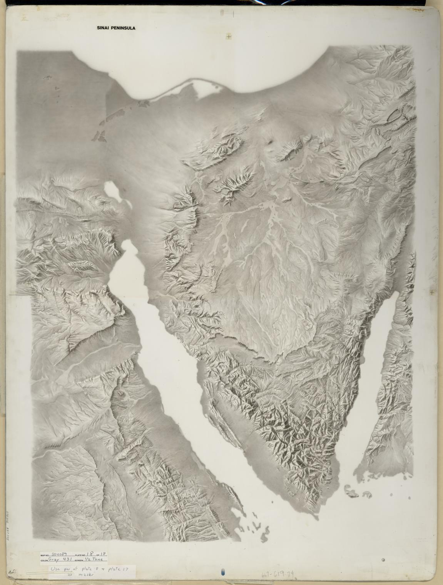
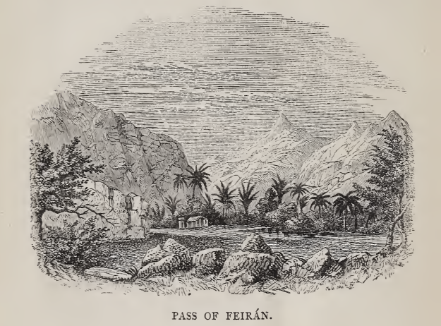
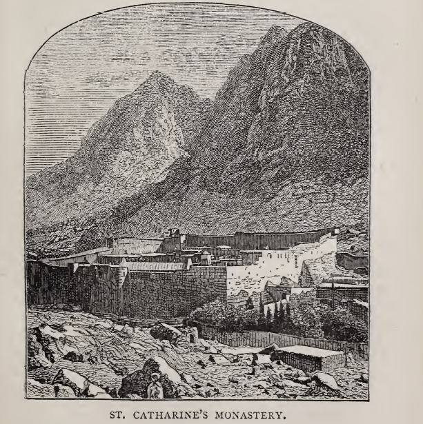

<!DOCTYPE html>
<html lang="en">
<head>
    <meta charset="UTF-8">
    <meta content="Sinai Peninsuela Website" name="description">
    <meta content="Sinai, Sinai Peninsuela, Egypt, Turquoise Land, Biau, Taba,
        Dahab, Sharm El-Sheikh, El Tor, Nuweibaa, Saint Catherine, Ras Sedr, Ras Abu Rudeis, Nekhel,
        Abu Zenima, Arish, Rafah, Sheikh Zuweid, Bir El Abd, Travel Guide, Trip" name="keywords">
    <meta content="Ahmed Hassan" name="author">
    <meta content="width=device-width, initial-scale=1.0" name="viewport">
    <title>Sinai</title>
    <link href="Pics/icons8-safari-48.png" rel="icon">
    <link href="https://cdnjs.cloudflare.com/ajax/libs/font-awesome/6.2.0/css/all.min.css" rel="stylesheet">
    <link href="style.css" rel="stylesheet">
</head>

<body>

<header>
    <div class="header-logo">
        <a class="website-name" href="Homepage.html">Sinai Peninsula</a>
    </div>
    
    <nav class="navigation">
        <a href="Destinations.html">Destinations</a>
        <a href="Latest%20News.html">Latest News</a>
        <a href="Our%20Team.html">Our Team</a>
        <a href="History.html">History</a>
        <a href="Contact%20Us.html">Contact Us</a>
    </nav>
</header>

<section class="ancient-history">
    <div class="title-page" id="title-page">
        <h2>ANCIENT HISTORY FROM THE MONUMENTS,</h2>
        <hr/>
        <br>
        <br>
        <h1>sinai.</h1>
        <br>
        <h3>from the fourth egyptian dynasty to the present day.</h3>
    </div>
    <div class="content">
        <div class="story-card">
            <div class="tour-picture">
                
            </div>
            <br>
            <div class="story-card-info">
                <span class="chapter-number" id="chapter-1">chapter I.</span>
                <br>
                <br>
                <span class="chapter-title">description of the country.</span>
                <br>
                <br>
                <p class="picture-story">
                    The Red Sea is divided at its northern end into two
                    arms of unequal length. The eastern and shorter
                    of these is the Gulf of ;Akabah; the western and
                    longer one the Gulf of Suez ; and the triangular pro¬
                    montory which lies between them—its apex turned
                    southward, and its eastern and western sides mea¬
                    suring about 133 and 186 miles respectively—is that
                    known as the Peninsula of Sinai.
                    In very early times, as now in our own, the Red
                    Sea was a main thoroughfare of maritime traffic be¬
                    tween the East and West. Besides the trade of
                    Arabs and Phoenicians, it carried that of Egypt,
                    probably the greatest of any in the ancient world.
                    This traffic gave a special importance to the western
                    gulf, from the head of which—then several miles
                    further to the north than it is now—it passed west¬
                    ward to the Nile by an ancient canal of Pharaonic
                    origin, and was thus distributed over Egypt. The
                    same gulf, or its former northerly extension, was un¬
                    doubtedly the “ tongue of the Egyptian Sea,” referred
                    SINAI.
                    to by Isaiah (xi. 15). It was no less certainly the
                    scene of the passage of the sea by the Israelites.
                    Nor is the eastern gulf without its historical asso¬
                    ciations. It was at or near its ancient head that
                    Solomon built that “ navy of ships in Ezion-geber,
                    which is beside Eloth, on the shore of the Red Sea,”
                    which afterwards sailed to Ophir for gold (1 Kings
                    ix. 26, 28); and that, eighty years later, the “ ships
                    of Tharshish,” built by Jehoshaphat for the same pur¬
                    pose, “went not,” because they were “broken at
                    Ezion-geber ” (1 Kings xxii. 48)—shipwrecked as they
                    very well might be in this stormy and dangerous sea,
                    especially when manned by the inexperienced servants
                    of the king.
                    On and near the shores of these two gulfs, and
                    in the area embraced between them, are to be found
                    the sites of many of the most noteworthy events in
                    early Biblical history. Comparative geographers, with
                    hardly an exception, concur in placing Mount Sinai at
                    some point or other in the peninsula which now bears
                    its name. In the same neighbourhood we must look
                    for Marah, Elim, the Wilderness of Sin, Rephidim,
                    Horeb, Kibroth-Hattaavah, Hazeroth, and other sites
                    of the Exodus. On the north stretches the Badiet et
                    Tih, or Desert ofthe Wandering, commonly identified,
                    at least as regards its eastern part, with that of the
                    Forty Years7 Wandering. To the north-west are ancient
                    Goshen and Rameses, Succoth, Pihahiroth, Etham,
                    and Shur; to the north-east, Edom, Midian, and the
                    country proper of the x4malekites; and beyond these
                    a host of places familiar by name to every Old Testa¬
                    ment reader. In short, the whole region, both sea
                    SINAI. 3
                    and land, about the northern part of the Red Sea is
                    full of historical and antiquarian interest.
                    The Red Sea.—In the Bible, the sea of the Exodus
                    is frequently called by the Hebrew word yem, signi¬
                    fying simply “ the sea,” but more often yem sfif the
                    “ sea of suf” and in many passages by a name ren¬
                    dered “ Red Sea ” in the authorized version. In the
                    LXX. it is generally the Red Sea, ij epvOpu OdXavaa. By
                    classical geographers, while the Red Sea proper, though
                    forming part of the great Erythraean or Red Sea, was
                    styled the Arabian Gulf, its western arm, the modern
                    Gulf of Suez, was called the Herodpoliticus Sinus, from
                    the town of Heroopolis, which once stood near its
                    head. In Arabic, the same arm is sometimes called
                    Bahr el Kolzum (Clysma), from ancient Clysma, near
                    the site of the present Suez, and sometimes Bahr suf
                    the “ sea of suf.”
                    The meaning of the Hebrew suf has given rise to
                    a good deal of discussion. Its real signification ap¬
                    pears to be a “ seaweed resembling wool.” The
                    Arabic meaning also ofsuf is “ wool ” ; and it seems
                    likely that in the woolly seaweed with which the shores
                    of the whole sea abound lies the source of the names
                    Yem sup and Bahr suf
                    Possibly, also, the red colour of the same weed may
                    have given rise to the appellation “ Red Sea.” The
                    true origin of this name has, however, like that of suf
                    been a subject of much speculation. Early writers
                    variously attributed it to red coral, red hills and
                    plains, red wood, red birds (storks), and red water.
                    “ Raphael,” says Tischendorf, “ in one of his early
                    works, the ‘ Passage of the Israelites through the Red
                    4
                    SINAI.
                    Sea/ actually painted the water red.” Dr. Ebers, on
                    the other hand, learnedly maintains1 that the ancient
                    Egyptians named the desert tract bordering on Egypt
                    proper red, in distinction to Egypt itself, which was
                    styled black, and that, like the desert, the sea which
                    washed its shores ultimately came also to be called
                    red. But the view which has chiefly found favour is,
                    that the Red or Erythraean Sea is the sea of the Red
                    Men, Himyerites and Phoenicians, who dwelt upon
                    its shores.
                    The name “ ’Akabah ” of the eastern branch, the
                    ALlaniticus Sinus of classical geographers, is an
                    abbreviation from the Arabic “ ;Akabat Aileh,” the
                    “ defile of Aileh,” identical with the Eloth of Scrip¬
                    ture, which once stood upon its shore. By the
                    modern Bedawin, either gulfis called simply El Bahr,
                    “ the sea.”
                    Boundaries and Dimensions of the Peninsula.
                    —Though the peninsula, as we have seen, is enclosed
                    on its east and west sides by the two arms of the Red
                    Sea, it has no well-defined northern boundary. But
                    taking as its limit in this direction a straight line from
                    Suez to the head of the Gulf of ;Akabah, a distance of
                    150 miles, the area of the triangular peninsula south
                    of that line is some 11,500 square miles, which is
                    equal to about twice that of Yorkshire. The lofty
                    desert table-land of the Tih, which occupies the whole
                    space between the Red Sea and the Mediterranean,
                    projects boldly southward into this area in such a
                    manner as to form, roughly speaking, a second tri-
                    “ Durch Gosen zum Sinai.” 1872.
                    SINAI. 5
                    angle, interior to the first, and resting on the same
                    base, with its apex at or near the centre of the large
                    one : it thus takes up about one-third of the whole
                    peninsula. The boundary southward of this inner
                    triangle is very plainly marked along nearly its entire
                    length, the table-land ending abruptly in an almost
                    perpendicular cliff of limestone, which presents a
                    dead, unbroken, wall-like front, of great sameness in
                    appearance, and from 1,000 to 2,000 feet in vertical
                    height; reaching its maximum elevation at and near
                    the apex, where it is about 4,100 feet above the sea.
                    Near Suez, the tabular outline of this great natural
                    escarpment is so remarkably uniform as to have
                    earned for it amongst the Bedawin the name Jebel er
                    Rahah, signifying that the long even line of its summit
                    i^ as flat as the palm (rahah) of the open hand. To
                    the wall-like aspect of the same feature may perhaps
                    be traced the name, “ Shur,” of the wilderness into
                    which the children of Israel entered after crossing the
                    sea, if, as seems likely, the Biblical word Shur, which
                    means “ wall ” both in Hebrew and Arabic, is of
                    Shemitic origin. There are but few passes over the
                    Tih escarpment into the desert upland beyond.
                    Towards its eastern part, and at one or twd points
                    on the south-west, it loses its abrupt character,
                    and becomes mixed up with outlying hills; but
                    on the whole it forms a well-defined natural boundary
                    between two tracts of country differing widely in their
                    physical character and aspect, and peopled by distinct
                    native tribes,—on the north, the high and compara¬
                    tively level desert of the Tih, Jebel et Tih, occupied
                    by the Teyahah and other tribes of Bedawin; on the
                    6 SINAI.
                    south, the rugged mountains of Tor, occupied by
                    the Towarah. It is to the latter of these tracts that
                    reference is usually made when speaking of the penin¬
                    sula of Sinai.
                    Though the name Sinai does not occur in the native
                    nomenclature, the peninsula is known to the rest of
                    the Arabic-speaking world as Jebel TorSina; while
                    the names Tor Sina and Jebel et Tor occur in the
                    works of the Arab geographers. In these designa¬
                    tions, Tor signifies a hill or mountain, and is com¬
                    monly applied to those of a sacred character, while
                    the word Jebel (mountain) is used in its more general
                    sense of a mountainous tract or range.
                    Jebel et Tor.—The region thus referred to is
                    essentially a desert, and in the main a mountainous
                    desert. Far from being the level, sandy expanse,
                    studded perhaps with occasional hills, which popular
                    imagination commonly connects with the name of
                    desert—though in this instance such a supposition
                    might well be excused, as, if we except the men¬
                    tion of the one mount of the Lawgiving, the hilly
                    character of the country is scarcely referred to in
                    Holy Scripture1—the greater part of the Sinaitic
                    peninsula is extremely mountainous and intricate, and
                    is nearly destitute of that mantle of sand which con¬
                    ceals the natural features of many of the deserts of
                    Africa. So far as bare hills and peaks, and arid, de¬
                    solate valleys can make it a wilderness, it is one; but
                    its plains are by no means numerous, and sand in
                    any quantity is very seldom seen.
                    1 For incidental references, see Exod. xxxii. 12; 1 Kings
                    xix. 11 ; Ps. cxiv. 4, 6.
                    SINAI. 7
                    The chief exceptions as regards the two latter
                    features are met with on the western side. From
                    Suez southward, for fifty miles, the space between the
                    Tih cliffs and the coast is, for the most part, a toler¬
                    ably smooth tract of desert drift and “ raised beach,”
                    sloping gently from the hills seaward. Further south
                    is El Markha, a flat, littoral expanse of similar forma¬
                    tion ; and further yet the large maritime plain, called
                    emphatically El Ga ah, “ the plain,” which is fifteen
                    miles across in its widest part, and covers an area of
                    about 800 square miles. On the east coast, the hills
                    leave only a narrow fringe of beach, seldom expand¬
                    ing into plains of any magnitude; and in the interior
                    there are few worth notice.
                    Sand-wastes are yet fewer, the only conspicuous
                    ones being the Debbet er Ramleh, “ plain of sand,”
                    in the north-west, covering about 130 square miles,
                    and the lesser plains near 'Ain Hudherah in the
                    north-east.
                    With these exceptions, then, the whole country
                    south of the Tfh is more or less mountainous. The
                    hills rise from either seaboard, clustering here and
                    there in conspicuous, lofty groups, and gaining steadily
                    in general altitude till they reach the main watershed,
                    or axis of greatest elevation of the peninsula, which
                    coincides pretty closely with a line drawn from the
                    southernmost point of the Tfh escarpment to Ras
                    Muhammed, the southernmost cape. Near this line,
                    and near its middle point, the twin peak? Jebel ZebfrKatharfna, the highest in the whole country,
                    rises to
                    an altitude of 8,550 feet above the sea; and close to
                    it, but 1,175 feet lower, is Jebel Musa (Moses), the
                    s SINAI.
                    reputed Sinai. Jebel Umm Shomer, long thought to
                    be the highest of any, but in reality some ioo feet
                    lower than Jebel Zebir, is a few miles further south.
                    The noble cluster of Serbal, and its neighbour, Jebel
                    el Benat, lie some twenty miles to the north-west.
                    Jebel et Tih.—The Tih plateau, or inner triangle,
                    on the other hand, is very different in character. It
                    presents a succession of broad, undulating plains,
                    covered for the most part with dark flints, which
                    contrast strongly with the dazzling white cliffs of the
                    low hill ranges, chiefly of cretaceous limestones,
                    that here and there traverse the plateau. Its north¬
                    eastern part is drained eastward into the Wady el
                    fArabah and the Dead Sea; but the rest, including
                    nearly all of the inner triangle to which reference has
                    been made above, is drained northward into the
                    Mediterranean by the great Wady el 'Arish and its
                    numerous feeders.
                    Wadies.—The southern hill region is intersected
                    by a curious complication of wadies, deeply cut by the
                    mountain torrents, and winding and coursing in every
                    direction. The term wady, from the Arabic word
                    wada, of which one meaning is “ to flow,” has a some¬
                    what wider signification than its nearest English equi¬
                    valents, “valley” or “watercourse.” It is, indeed,
                    applied to almost any natural depression which drains
                    the soil, from broad valleys or barely-perceptible hol¬
                    lows in the desert plains to deep gorges or narrow
                    defiles, and even mountain glens. It is limited in
                    one direction only by the equivalents for “ravine”
                    and “gulley.”
                    The wadies are, in a certain sense, the rivers of the
                    SINAI. 9
                    desert—rivers run dry, it is true, or at least flowing
                    but very seldom, yet corresponding in every other
                    respect with the river systems of moister countries.
                    Shores strewn with debris, waterworn boulders,
                    caked soil curling up in huge slices, piles of drift,
                    reefs, bays, channels, and other unmistakable signs
                    of the passage of water, meet the eye at every turn.
                    So exactly, indeed, do these desert valleys resemble
                    river or torrent beds but quite lately left dry, that at
                    first a stranger unacquainted with the peculiarities of
                    the climate is very naturally puzzled to account for
                    such constant signs of water in a region where water
                    itself is so seldom found.
                    The wadies are also the main roads of the desert,
                    and they form the homes of the Bedawin. As roads,
                    they are sometimes of the roughest, full of rocks,
                    boulders, and other difficulties; but many of the
                    larger ones afford good travelling over smooth, firm
                    gravel. Except to the hunters and shepherd-girls,
                    the mountains are but little known, and they are so
                    rugged that, if it were not for the wady-beds, which
                    enable the Arabs and their camels to pass from point
                    to point without difficulty, traffic in the mountainous
                    parts would be out of the question, and the country
                    uninhabitable.
                    Of the valleys in the western half of the peninsula,
                    the most important is the Wady es Sheikh, called in
                    its lower part Wady Feiran. About eighty miles long
                    from its source in the heart of the central mountains
                    to its mouth on the western gulf, this fine wady drains
                    with its tributaries an area of some 700 square miles,
                    winding through one of the most interesting districts
                    SINAI.
                    in the country, and passing on its course through
                    nearly every description of Sinaitic scenery. At
                    two points it contracts to narrow, winding gorges of
                    uncommon grandeur. The first of these is El Watiyeh,
                    where the wady makes its exit from the Jebel-Musa
                </p>
                <br>
                
                <br>
                <br>
                <p class="picture-story">
                    cluster by a crooked pass no more than thirty yards
                    wide in places, and overhung by rugged granite
                    cliffs 2,000 feet in height. The second, lower
                    down, is the pass of Feiran, well loved by the Bedawin, and well remembered by every traveller who
                    has seen it. Here, for eight or nine miles, the valley
                    winds through the gneissic ranges on the northern
                    side of Jebel Serbal, in a splendid defile, which, from
                    SINAI. 11
                    the beauty of its natural features, and from its his¬
                    torical interest, is one of the most remarkable spots
                    in the peninsula.
                    In the great plains of the Badiet et Tih, and in the
                    flat strip south of Suez, the wddies are few and but
                    faintly marked, being for the most part mere slight
                    depressions, which the barometer will probably be the
                    first to indicate to the traveller, and which are so im¬
                    perceptible to the eye that even the Bedawin often
                    get confused and uncertain as to their whereabouts.
                    As already told, the Wady el 'Arish is the principal
                    drainer of the Tih plateau.
                    Geological Structure.—By far the greater part
                    of the Jebel et Tor consists of crystalline rocks, chiefly
                    hornblendic granite. These form the nucleus of the
                    peninsula, and comprise all of the southern moun¬
                    tainous area from Ras Muhammed to the parallel
                    28° 35' N., with extensions north-east and north¬
                    west, the whole—to borrow an illustration used by
                    a Saturday Reviewer—rudely resembling on the map
                    a goafs or ass’s head, with its mouth turned south¬
                    ward. Next succeeds a wide, irregular band of metamorphic rocks, placed like a frontlet between the
                    ears
                    or horns, and crossing over and curling round the tip
                    of the one to the left (west) hand ; then a narrower
                    band of red sandstone, of carboniferous age, very like
                    that of Cheshire—both this and the band last-men¬
                    tioned stretching pretty well across the peninsula; after
                    which, and overlying all, come the cretaceous strata
                    of the Tih, which fill up the whole remaining space.
                    The sandstone strata belong to the same series as
                    those which have been found in Egypt, Nubia, and
                    c 2
                    12 SINAI.
                    Arabia Petrcea, similarly resting on granitic and metamorphic rocks, and underlying the cretaceous
                    strata;
                    and are of the kind known as Nubian sandstone. On
                    the western side, the cretaceous rocks are limited to
                    the Tih, except at one part about sixty miles from
                    Suez, where they descend to the coast, and again
                    between that and Jebel Serbal, where they and the
                    sandstone reappear in narrow strips side by side; but
                    on the east they project to some distance beyond
                    (south of) the Tih escarpment. Though this escarp¬
                    ment and the older southern rocks are doubtless
                    girdled by Tertiary strata, these latter are exposed at
                    three places only—on the coast fifty miles below Suez,
                    again on the coast between El Markha and El Ga ah,
                    and, lastly, at Ras Muhammed : tertiary sandstones
                    and nummulitic limestones appear at these points.
                    Finally, the maritime plains and beaches, which form a
                    fringe round nearly the whole peninsula, are of desert
                    drift and alluvium, and “ raised beaches/’ some of the
                    last named being as many as thirty feet above the
                    present sea-level.
                    It seems then, according to the authority previously
                    quoted, that in Palaeozoic times the present nucleus
                    of crystalline mountains formed an island in the sea,
                    and that the Nubian sandstones were accumulated on
                    its shores from the decomposition of the hornblendic
                    rocks. A deeper subsidence produced the Tih lime¬
                    stones, and then, during a long period of upheaval
                    and occasional depression, the channel which sepa¬
                    rates the Tih escarpment from the southern ranges
                    was cut out, and the nummulitic limestones and other
                    tertiary formations were deposited on the shores of
                    SINAI. 13
                    the peninsula; and finally, by a comparatively late
                    upheaval, the fringe of beach was itself exposed to
                    the action of the waves.
                    Dykes.—One striking and peculiar feature in
                    the geology of the peninsula is the very great fre¬
                    quency of dykes of hard intrusive rocks, chiefly basalt
                    and greenstone, in the granitic and gneissic districts.
                    These give a curious appearance to the scenery. As
                    there is no soil or vegetation to hide them from
                    view, and as they are usually of darker colours than
                    the rocks around them, some deep red or brown,
                    others olive green, and some quite black, they stand
                    out on the naked landscape as conspicuously as the
                    stripes on a zebra’s back, and from a hill-top may
                    often be traced for many miles. They are of all
                    breadths, from a few inches to several feet. While
                    some are separated by inches only, others are from
                    50 to 100 yards apart; but they always preserve a
                    general direction from N.N.E. to S.S.W.
                    Mines.—Perhaps the most important geological
                    district, especially from an antiquarian point of view,
                    is that of the Nubian sandstone in the north-west, as
                    having formed the seat of very early mining opera¬
                    tions by the ancient Egyptians and the primitive
                    inhabitants of the peninsula. Turquoise, copper, iron,
                    and manganese were extensively worked for in the
                    valleys and cliffs on the south edge of the Debbet er
                    Ramleh, near the junction of the sandstone with the
                    granitic and metamorphic rocks. Large heaps of
                    slag, scoriae and other refuse, and remains of mining
                    tools, still mark the extent of these ancient works. The
                    ores of iron and manganese were extracted from a
                    14 SINAI.
                    thin band of highly crystalline limestone separating
                    the upper and lower beds of sandstone. The tur¬
                    quoises were nearly associated with these ores, being
                    found in joints and cracks in the sandstone within a
                    few feet of the limestone band, but sometimes im¬
                    bedded in the solid rock itself. The copper seems to
                    have existed in very small quantities, chiefly in the
                    form of blue and green carbonates. Further south, at
                    Wady Igne, where the sandstone occurs again, is
                    another extensive range of turquoise mines, with some
                    probable traces also of copper-smelting; but the
                    limestone band containing iron and manganese does
                    not reappear.
                    At these two localities the early Egyptians left
                    undying memorials of their labours and sway, in the
                    monuments and hieroglyphic tablets which they carved
                    on the rocks and caves, and a temple with inscribed
                    stela (upright stone tablets) on the heights of Sarabit
                    el Khadim. The delicate workmanship of these re¬
                    mains, the most recent of which cannot have been
                    sculptured less than twenty-nine or thirty centuries ago,
                    and the wonderfully perfect state in which, owing to the
                    desert climate, they have been preserved through a
                    long roll of ages, entitle them to take rank amongst
                    the most remarkable relics in the world. Some of
                    the tablets at Magharah (Wady Igne) must on the
                    lowest computation have been executed between
                    4,000 and 5,000 years ago; yet, though their surfaces
                    are discoloured by age, and the rocks cracked in
                    places, the carving is as intact in many of its finest
                    details as if it were fresh from the sculptor’s hand.
                    Inscriptions.—Another feature of interest in this
                    SINAI *5
                    region is the prevalence in it, in great numbers, of
                    the so-called “ Sinaitic ” inscriptions, for which the
                    smooth surfaces of its sandstone rocks offered ready
                    tablets to scribbling wayfarers from twelve to twenty
                    centuries ago. The most plentiful collection of them
                    in the whole country is in the Wady Mukatteb, close
                    to Magharah, where the low cliffs are dotted for a
                    distance of three or four miles with inscriptions of
                    this class, mostly in good preservation.
                    Aspect and Scenery.—An idea will have been
                    gained, from the foregoing sketch, of the main geogra¬
                    phical and geological outlines of the peninsula. Its
                    general aspect is one of extreme barrenness and
                    desolation. The three chieffeatures of its scenery, the
                    mountains, the wadies, and the plains, are, with few
                    exceptions, parched and sterile. Though the distribu¬
                    tion of land and water in this region would seem to
                    favour the expectation of a fair supply of moisture, rain
                    but seldom falls. Consequently, there are no rivers or
                    far-flowing streams, and vegetation is very scanty;
                    while the sun’s intense heat and the excessive dryness
                    of the air combine with a rapid drainage, unchecked
                    by cultivation, to perpetuate the general barrenness.
                    The hills have no soil or verdure, to “ disguise thenruins or give beauty to their decay,” while
                    the plains
                    are blank arid wastes, and the valleys for the most
                    part -waterless and nearly bare.
                    But, though the surface of the Desert is thus nearly
                    destitute of soil and herbage, the effects of light and
                    air do much to redeem the character of its scenery.
                    A brilliant sunlight, a sky generally cloudless, and an
                    atmosphere of surpassing transparency, serve to
                    i6 SINAI.
                    gladden and even beautify the landscape. Under
                    their softening influences, the very nakedness of
                    the rocks imparts warmth and splendour to the
                    scene. Although the combinations of lake and
                    meadow, wood and stream, which diversify the face
                    of nature in less barren countries are wanting in
                    the wilds of Sinai, its desert cliffs and crags, when
                    lit up by a bright sun, glow with rich and exquisite
                    hues such as are to be seen in few other parts of'
                    the world.
                    The variety in colouring is very great. While the
                    sandstone usually exhibits warm tints of brown and
                    red, the gneissic rocks are of pale brownish or myrtle
                    green, streaked with dykes of purple, black, dark red,
                    and other sombre hues. In the granitic districts, red,
                    brown, white, rose, and gray are the chief colours,
                    varying according to the quantity of quartz, felspar or
                    iron which the rocks contain. To these may be
                    added the browns and drabs of the valley-beds, the
                    yellow of the open desert, and the glaring whites and
                    grays of cretaceous and tertiary strata, these last being
                    often streaked with brilliant clays, of lilac, maroon,
                    and crimson. When seen under an overcast sky, or
                    in shadow, or from a too near point of view, these
                    colours often look dull and dingy enough. But seen
                    in the great masses in which they appear in the land¬
                    scape, and kindled into gorgeous hues in sunshine,
                    their effects are singularly beautiful, while in the dis¬
                    tance they soften into hues of the subtlest delicacy.
                    Much has been and might be written on the wonders
                    and beauties of Sinaitic scenery. Travellers and
                    authors, with hardly an exception, have dwelt on them
                    SINAI. 17
                    in glowing terms—the glories of the sky and landscape,
                    the scenes at sunset and sunrise, in cloud and storm,
                    of night as well as day. In clear weather, the firma¬
                    ment by day is wonderfully blue; by night, the
                    stars seem to sparkle with a radiance unknown to
                    dwellers in our humid northern climates. Perhaps
                    few more striking sights are to be met with anywhere
                    than the views in fine weather from the higher moun¬
                    tain tops. They have a charm peculiarly their own,
                    in their strange mixture of wildness with softness, and
                    of desolation with beauty. Verdure, water, cultivation,
                    settlement, snowy peaks and glaciers—all the acces¬
                    sories which generally go to make up a landscape—
                    are here entirely wanting. Instead of them, you have
                    only the bare desolate peaks, rocks, and gravel, the
                    blanched cliffs of the Tih, with, perhaps, a' distant
                    view of the sea, and of the mountains of Arabia or
                    Africa seen faintly far away. Yet there are fine forms
                    in the tumbled masses of hills, and soft warm tints of
                    which the eye never tires. And more fascinating,
                    perhaps, than anything else is the study of the mar¬
                    vellous complication of hill, valley, and glen, which
                    is spread out like a model at your feet, with every
                    detail distinctly seen in the clear air of the Desert.
                    To the lover ofthe grand and picturesque, however
                    the scenery of Sinai certainly reaches its climax in the
                    wadies which wind through the crystalline mountains
                    in the central and southern parts of the peninsula.
                    Here, as you advance into the heart ofthe country, the
                    naturalfeatures growmore imposing at everymile. The
                    wadies sweep in bold reaches between lofty hill ranges,
                    or at times break through them by narrow crooked
                    iS SINAI.
                    defiles of surpassing beauty. In some of these defiles
                    the scenery is in the highest degree wild and sublime.
                    The cliffs, pressing closely in, tower to vast heights.
                    Here and there you pass the mouths of branch valleys,
                    disclosing endless vistas of mountains; or, again, the
                    opening into some tributary glen piled with the debris
                    of centuries gives a glimpse of scenery of a weird and
                    awful kind. The natural wonders are, moreover,
                    heightened in effect by a deathlike silence and still¬
                    ness, and an absence of any signs of life.
                    Nomenclature.—One of the most interesting
                    subjects connected with the geography of Sinai is
                    that of the native nomenclature. The subject, more¬
                    over, is important as well as interesting; for, as is
                    obvious, a mere map of any country, however good,
                    is of little use for geographical or historical criticism
                    if not accompanied by an accurate account of the
                    nomenclature; and this is perhaps especially true as
                    regards the study of sacred geography.
                    Prior to 1869, however, the Sinaitic nomenclature
                    was very imperfectly known. Few scholars competent
                    to undertake so difficult an investigation had ever
                    visited the country, and even they had not stayed
                    there long enough to make much progress in it. The
                    task was one requiring time and pains, and peculiar
                    qualifications in the investigator. When we remember
                    how hard it is. even in a country like England, to
                    determine the correct nomenclature of a single dis¬
                    trict, wre can imagine how very much harder it must
                    be to do so in the desert of Arabia, where there are
                    no records or literature of any kind, and where the
                    inhabitants, though shrewd and intelligent enough in
                    SINAI. 19
                    their own sphere, are unable to comprehend the sim¬
                    plest ideas of civilized life, or to understand what
                    possible interest or importance there can be in such
                    an investigation.
                    The difficulties of the language have also proved
                    a fertile source of error. Few travellers know Arabic
                    well; but even a scholar, until he had mixed for some
                    time with the Bedawin, and gained a thorough know¬
                    ledge of their idioms and peculiarities of dialect and
                    character, could not rely upon a single piece of in¬
                    formation which they might give him.
                    In consequence of these difficulties, the most ab¬
                    surd and startling errors had crept into our maps
                    and books, making worse than nonsense of many of
                    the Arabic names. But in 1868-9 the subject was
                    at length fairly mastered by Mr. (now Professor) E. H.
                    Palmer, of St. John’s College, Cambridge, who accom¬
                    panied the Sinai Expedition for the express purpose
                    of investigating the native names, manners, and tra¬
                    ditions. Mr. Palmer brought the highest erudition
                    and qualifications to his task. He is one of those
                    men of rare linguistic powers and attainments who
                    are so seldom met in any country, and who at the
                    early age of twenty-five not only spoke, but wrote,
                    Arabic and Persian thoroughly well, and possessed
                    besides a very considerable knowledge of Hindustani.
                    To his investigations in Sinai he devoted much care
                    and research, taking the utmost pains to secure the
                    accurate orthography of the names as the natives
                    know them. The fruits of his work are contained in
                    a copious catalogue of the names which were collected
                    in the districts surveyed by the Sinai Expedition,
                    20 SINAI.
                    giving their Arabic orthography, their etymology, and
                    signification. This catalogue, with the dissertation
                    preceding it, as published in the official account of
                    the Sinai Survey, will always remain a masterpiece of
                    Oriental erudition and research, far exceeding in value
                    all previous attempts of the same kind, and fully main¬
                    taining its author’s high reputation.
                    It would be only natural to expect that a country
                    so little varied and so thinly peopled as the Sinai
                    Desert must possess a scanty nomenclature; but, on
                    the contrary, it is very copious. The Arabs of each
                    particular district have an appropriate name for every
                    separate feature in their locality, whether rock, moun¬
                    tain, ravine, or valley. There are three classes of
                    names, derived respectively from some natural or phy¬
                    sical peculiarity of the spot, from former owners or
                    inhabitants, and from legendary or historical associa¬
                    tions. The first of these classes is by far the most
                    numerous. Every physical mark or characteristic,
                    however slight, and all the natural products of the
                    soil, have been pressed into the service of the nomen¬
                    clature. Thus, the colours, sizes, and shapes of ob¬
                    jects, their substance, character, and position, the
                    products of localities, whether vegetable or mineral,
                    and the birds, beasts, or reptiles which frequent them,
                    all figure more or less conspicuously in the names.
                    To give an instance or two, Jebel Umm Iswed is
                    the “ mountain of blacknessfrom its colour ; Wady
                    Jebaah, the “ valley of pools” with which it abounds;
                    Jebel Hadid, the “ mountain of iron” from its veins of
                    iron-ore; Wady Emleisah, the “ slippery valley,” from
                    its polished boulders ; and Jebel Jiddet el 'EM, the
                    SINAI. 21
                    “ mountain of high dykes” from the conspicuous dykes
                    which streak its summit. Jebel Serbal is the “ moun¬
                    tain of the shirt (or coat) of mail” a name derived,
                    by a pretty metaphor, from the appearance of the
                    smooth granitic rocks and domes on its summit, when
                    covered, during rain, with a sheet of glittering water.
                    Ras Sufsafeh, the great peak at the north-west end of
                    Jebel Musa, which is probably that from which the
                    Commandments were first proclaimed, owes its name
                    to a little willow or osier which grows in a basin
                    behind it; and the .large plain, Er Rahah, which it
                    overlooks, is so called because, like the mountainrange of the same name near Suez, its flatness
                    re¬
                    sembles that of the open palm, rahah.
                    The present names are entirely Arab : there are few
                    traces of the ancient Scriptural names, and even that
                    of Sinai, as has been already remarked, does not occur
                    in the native nomenclature. This, however, is not
                    surprising, when it is remembered that the Israelites
                    spent but little more than a year in the peninsula.
                    There are, nevertheless, a few names in which, with
                    no suspicion of a monkish origin, may be detected
                    lingering records of some of the events of the Exodus.
                    Reference has already been made to the Badiet et
                    Tih or “ Wilderness of the Wandering,” as connected
                    with the forty years’ wandering of the Israelites. The
                    name, Feiran, of the principal wady in the penin¬
                    sula is, undoubtedly, a corruption from the Hebrew
                    Paran, the Bedawin being unable to pronounce the
                    letter p. The word in its present Arabic form is the
                    plural forfarah, “ a mouse,” and is derived, according
                    to the Bedawin, from the numerous holes in the rocks
                    SINAI.
                    at the old monastic settlement in this valley, on the
                    north side ofJebel Serbdl, at one time anchorites’ cells
                    and caves, into which, say the Arabs, the hermits
                    “ used to creep like mice.” The Scripture appella¬
                    tion “ Horeb ” possibly survives by a phonetic cor¬
                    ruption in the name, Jebel 'Aribeh (from the plant socalled), of a peak close to St. Catharine’s
                    Monastery
                    at Jebel Musa, the two words being etymologically
                    identical. Within a few miles of the same spot is the
                    Engaib 'Imran or “pass of Amram.” In the desert
                    south of Suez we find the Wady Mereira or “ valley of
                    bitter water,” not far from the probable site of the
                    Scripture Marah. Moneijah, or “ conference,” is the
                    word always used by the Towarah Arabs when refer¬
                    ring to the manifestation at the Burning Bush ; and
                    there are two mountains of this name in the peninsula,
                    one close to Jebel Musa, the other near Jebel Serbal.
                    Jebel Zebir, from zobara, “to write, or engrave,” is the
                    native name of the highest mountain in the country,
                    and is interpreted by all Arabic lexicographers to
                    mean “ the mountain on which God spake to Moses.”
                    To these may be added ’Akabah, the “ defile of Eloth ”
                    (as already explained), at the head of the eastern gulf;
                    'Ain Hudherah, probably the spring of Hazeroth (the
                    consonants in the two words exactly corresponding),
                    about forty-five miles north-east of Jebel Musa;
                    and one or two others. Here the most obvious con¬
                    nections cease, though Professor Palmer suggests that
                    possibly other clues may yet be found.
                </p>
                <br>
                <span class="chapter-number" id="chapter-2">chapter II.</span>
                <br>
                <br>
                <span class="chapter-title">climate and vegetation.</span>
                <br>
                <br>
                <p class="picture-story">
                    Rainfall and Floods.—In the chapter just ended
                    several references have been made to the generally
                    barren character of the peninsula, and the extreme
                    dryness of its climate. The country, however, is not
                    wholly rainless, nor wholly destitute of vegetation. In
                    winter and spring there are generally a few showers?
                    sometimes lasting for several hours in a steady down¬
                    pour. Those of winter fall as snow on the higher hill¬
                    tops, in quantities sufficient to lie for some days before
                    disappearing. Heavy dews occasionally fall. Between
                    December and May, sudden and violent rain-storms
                    sometimes burst over different parts of the country,
                    and give rise to highly destructive floods, or sells, in
                    the valleys, which are much dreaded by the Bedawin.
                    It is interesting to observe how truthfully the Desert
                    nomenclature points out the character of its water
                    supply. While on one hand, the fact that every little
                    spring, or pool, or streamlet has a name, and is as
                    well known to each Arab in the district as the broad¬
                    est valley or the highest mountain, is a clear proof of
                    the general scarcity of water; on the other hand, such
                    names as Jebel el Ghurgan, the “ mountain of the
                    drowned,” Wady Umm Seilat, the “ valley of torrents,”
                    24 SINAI.
                    Wady Bugi'yeh, the “valley through which water rushes
                    with the sound of a trumpet/' tell just as plainly of
                    the rain-storms and their devastating floods.
                    The seils are very local, and usually extend to
                    but small areas. They are also uncommon; hence
                    they do not much affect the general annual rainfall,
                    the average of which for the whole country is probably
                    little more than an inch. In five months of an ordi¬
                    nary winter and spring—namely, from November 23,
                    1868, to April 22, 1869—but nine-tenths of an inch
                    were registered by the Sinai Expedition, though this
                    was the wettest season of the year. Their effects in
                    the valleys and deep mountain-gorges are, however,
                    very serious, and sometimes disastrous, and often
                    extend for many miles. Falling in almost tropical
                    abundance on the rocky peaks and hill-sides, the rains
                    rush down from them as from a slated roof, with
                    scarcely diminished volume, into the highly-inclined
                    valleys below, and soon form a boiling torrent, which
                    hurries at frightful speed along the nearest path to¬
                    wards the sea, gathering mass and impetus at every
                    mile, sweeping away all obstacles, and laying waste
                    the surface of the country. This lasts for a few hours
                    only, after which the weather clears, the floods cease
                    as suddenly as they began, and soon nothing is left
                    to tell of them but the havoc they have wrought in
                    the valley-beds, and the few pools which linger for a
                    short time in the rocky hollows.
                    Though signs of the rush of water are visible in
                    nearly every desert wady, it is in the gorges with
                    which the hill-region abounds, and in which the waters,
                    limited here to a narrow channel, rise at flood-time
                    SINAI. 25
                    to heights of ten, twenty, and even thirty feet, that
                    the effects of the sells are most apparent. The worn
                    and polished cliff-sides, the huge boulders which lie
                    jammed in the narrow way, and the wide-spread signs
                    of devastation above and below, convey a vivid pic¬
                    ture of the resistless rush of the floods. “ When a
                    sell comes,” say the Bedawin, “it is not a river, it is
                    the sea.” And this metaphor can hardly be called
                    an exaggeration.
                    From the above account of the phenomena of the
                    sells, it will be seen what good reason the Bedawin
                    have to dread them. So constant, indeed, is their
                    apprehension that, even in the finest weather, they
                    can seldom be induced to encamp in the actual bed
                    of a wady, still less in one of the narrow gorges.
                    Clear though it may be above their heads, they know
                    well that in the mountains far off there is possibly
                    impending danger. A rain-storm may burst over the
                    head of the wady, miles away, and the first notice they
                    will have of it will be a headlong wave of water, cer¬
                    tain to sweep them to sudden destruction if they are
                    caught by it in the channel of the wady, or in a
                    mountain defile. On some occasions results of this
                    kind have actually happened. In the great sell of the
                    3rd of December, 1867, the worst which has happened
                    within living memory, thirty persons perished thus,
                    besides scores of sheep, goats, camels, and donkeys;
                    in fact, an entire Arab encampment, which had been
                    pitched in the mouth of a small valley on the north
                    side of Jebel Serbal. The oasis of Feiran was also
                    sadly ravaged by the flood. About a thousand palmtrees were swept away, and a tamarisk grove two
                    miles
                    26 SINAI.
                    long; the wells were filled up, the gardens destroyed,
                    and the herbage uprooted for many miles. The Rev.
                    F. W. Holland was so fortunate as to witness this
                    fearful storm from a point in the oasis, and he has
                    given a graphic description of it in chapter viii. of
                    the “ Ordnance Survey of Sinai.” Its most extraor
                    dinary feature seems to have been its suddenness.
                    Though a few drops of rain began to fall at 4.30 p.m.,
                    it was not until five o’clock that the storm really set
                    in. The rain then fell in torrents, and was accom¬
                    panied by heavy wind and by incessant thunder and
                    lightning. In fifteen minutes every ravine and gulley
                    in the mountains was pouring down a foaming stream.
                    In little more than an hour, i.e. at a few minutes past
                    six, Wady Feiran, at that point about 300 yards wide,
                    was filled with a raging torrent from 8 to 10 feet
                    deep. Men, animals, and trees swept past upon the
                    flood, and huge boulders ground along the wady-bed
                    with a “ noise as of a hundred mills at work.” About
                    this time the rain stopped where Mr. Holland was,
                    though clouds still hung over Jebel Serbal. At 9.30
                    it was quite fine, and the flood, its force spent, was
                    subsiding quickly. Next day, at 6 a.m., the torrent
                    had dwindled to a mere rivulet, little bigger than that
                    which ordinarily waters this part of the wady. Well,
                    indeed, might the patriarch Job, who doubtless had
                    an intimate knowledge of the phenomena of these
                    brief but devastating floods of the Desert, declare o.
                    the Almighty, “ Behold, He withholdeth the waters,
                    and they dry up; also He sendeth them out, and they
                    overturn the earth” (Job xii. 15). Or, again, of the
                    destruction destined to overtake the rich man:
                    SINAI. 27
                    “ Terrors take hold on him as waters, and a tempest
                    stealeth him away in the night” (Job xxvii. 20).
                    The enormous quantities of alluvium and debris
                    which are brought down by these sudden floods and
                    deposited on the coast account plainly enough for a
                    peculiarity which is very noticeable on the map of the
                    peninsula; namely, that the promontories in the
                    coast-line occur opposite to the mouths of the valleys,
                    just where, in most countries, we should expect to
                    find bays, caused by the constant flow of streams
                    wearing out their own channels. At Sinai no such
                    ceaseless agent as this latter is at work, but every
                    now and then a seil brings down a vast amount of
                    debris, which, when the stream loses its impetus in
                    the sea, at once sinks and forms a shoal. Thus,
                    at each successive flood, the land gains slowly on the
                    sea. To the action also of seils, Mr. Holland traces
                    the origin of certain peculiar deposits of alluvial
                    gravels, called jorfs, which are often met with at and
                    near the junctions of the mountain wadies, where they
                    are seen as cliffs, sometimes 80 feet in height. Some
                    are of fine alluvium, well stratified; others are coarser,
                    and contain large stones and boulders. In his opinion
                    of their origin, Mr. Holland differs from other geo-,
                    logists, Mr. Bauerman believing that the gravels must
                    have been originally deposited by lakes or slowlyflowing streams; while Dr. Fraas considers the
                    accu¬
                    mulations to be due to the action of glaciers, be¬
                    cause the blocks and stones of all sizes, from 1,000
                    cubic yards to mere sand and gravel, are tumultu¬
                    ously tumbled together in a manner in which, as he
                    believes, no other imaginable power could have aggred 2
                    28 SINAI.
                    gated them. Dr. Fraas also describes the walls of
                    rubbish through which the modern streams have cut
                    narrow channels, as being piled across the principal
                    or the secondary valleys precisely in the manner
                    of lateral and terminal moraines. Neither of these
                    geologists, however, had witnessed, as Mr. Holland
                    had, the stupendous effects which may any day
                    be produced by a really violent seil, experience of
                    which, during and after the flood of 1868, has led
                    him to assert his belief that the “qorfs” owe their
                    origin to causes which are still at work in the penin¬
                    sula. His assertion is supported by an ingenious
                    and practical argument, showing the peculiar com¬
                    binations of effects which might be produced, varying
                    with the course, extent, locality, and violence of the
                    rain-storms, and the different levels and lengths of the
                    wadies, and showing also how these effects would
                    serve to account for all existing appearances.
                    Health.—In point of salubrity the climate of the
                    peninsula is one of the healthiest in the world, and
                    in the higher districts it is particularly agreeable. A
                    little fever is sometimes felt in the lowlands when hot
                    winds dry up the pores of the skin, the hill country,
                    however, being free from it. At the time of dateharvest, Tor and Feiran are said to be unhealthy;
                    but this may be partly or wholly due to the bad
                    quality of the water at that season. An epidemic
                    called “ yellow- pest,’7 perhaps the plague, sometimes
                    comes with the sirocco winds, but seems to be limited
                    to the lower altitudes. In the words of the Bedawfn,
                    “it never attacks them in the mountains of their
                    Lord Moses, where grow the shiah and the myrrh.”
                    SINAI. 29
                    Small-pox also is not unknown. But, with these
                    exceptions, the peninsula is strikingly salubrious.
                    In the central elevated valleys, from 3,000 to
                    5,000 feet above the sea, the climate is indeed almost
                    perfect. A purer air or a bluer sky could hardly be
                    desired. Rain but very seldom falls; and a storm,
                    when it does occur, is followed by days, if not weeks,
                    of matchless weather. At these times the atmosphere
                    is deliciously light, dry, and bracing. Though the
                    sun shines fiercely, it is always cool and pleasant in
                    the shade, an abundance of which may be found at
                    nearly all hours in the deep, narrow wadies ; while
                    the nights are refreshingly cool in spring and even
                    summer, and in winter are often very cold, with hard
                    frost.
                    Temperature.—The extreme daily range of tem¬
                    perature is usually great, and, but for the dryness of
                    the climate, the rapid transitions from heat to cold
                    would doubtless be trying to the hardiest constitu¬
                    tions, even under the most favourable circumstances.
                    In the month of December, 1869, the average daily
                    range at the camp of the Sinai Expedition, close to
                    St. Catharine’s Monastery (altitude 4,854 feet), was
                    3o°.2 Fahr. ; but on some days it reached to 48°
                    or from about 220 at night to 70° in the shade by day;
                    while in April, 1869, the average was 32°.9. Although
                    to a well-equipped European these violent changes
                    are bearable and harmless in the dry air of the
                    Desert, to the ill-clad Bedawin, on the other hand,
                    they bring severe suffering, especially in the keen
                    winter nights among the mountains, and are probably
                    the chief cause of the pulmonary and rheumatic
                    30 SINAI.
                    diseases with which they are troubled. It is curious
                    that, though the Israelites, fresh from the warm
                    climate of Goshen, must have felt the cold acutely in
                    the Sinai mountains, the Bible makes no reference to
                    it, unless indeed we may infer that the humane com¬
                    mand in Exod. xxii. 26, 27, was designed to secure
                    for the poor some protection against the coldness of
                    the nights.
                    The mean monthly temperature at the camp above
                    mentioned was 44°.2 in December, 1868, and 58°.7
                    in March, 1869. At Feiran (altitude 2,036 feet), in
                    January and February, 1869, it was respectively 54°.i
                    and 55°.5. The highest shade heat observed by the
                    Expedition during their stay was 87°, in April. The
                    summer temperatures of course exceed the figures
                    above quoted, but are never insupportably high.
                    In the lowlands and littoral plains, the climate, if
                    hardly less healthy, is by no means so enjoyable as
                    that of the highlands. The luxury of shade is here
                    almost unknown, the heat is much more severely felt,
                    and the glare from the white rocks and cliffs is most
                    distressing, especially in the limestone districts, daz¬
                    zling the sight, and drying up and cracking the skin
                    of the face unless it is closely shrouded, Arab fashion,
                    in a kufiyeh. The soil also becomes intensely heated
                    and glowing, and is painful to walk upon. Every¬
                    where in the Desert, however, and at all seasons, there
                    is hardly an exception to the refreshing coolness of
                    the nights and early mornings. Everywhere, too,
                    there is that wonderfully pure invigorating air which
                    preserves the bodily health and strength in spite of all
                    discomfort and fatigue, and continually braces the
                    SINAI. 31
                    nerves and energies. “ No one,” writes Major Wilson,
                    “ who has travelled in the Desert can forget the exhi¬
                    larating effect of the fresh morning air, or the joyous
                    feeling of life and strength which it brings with it:
                    the mere act of breathing is a pleasure, and we can
                    hardly be surprised at the stories which have been
                    handed down of the great age attained by many of
                    the hermits, or that they believed that man needed
                    in the Desert ‘ hardly to eat, drink, or sleep, for the
                    act of breathing will give life enough/ ” Doubtless,
                    this wonderful air must have done much to assuage
                    the sufferings of the Israelites in the Desert.
                    Atmospheric Peculiarities.—One of the most
                    peculiar properties of the air is its intense dryness.
                    On March 20, 1869, at the camp, near St. Catharine's,
                    above mentioned, the wet and dry bulb thermometers
                    showred a difference of temperature of 20°, and it is
                    said that in summer this difference sometimes reaches
                    even to 30°. In the same March, the average tem¬
                    perature of the dew-point was 290 below that of the
                    air. To this excessive dryness is mainly due the
                    wonderful state of preservation of the archaeological
                    remains already referred to. Change and decay make
                    but slow progress in the Desert. As an instance of
                    this, it may be interesting to mention that Professor
                    Palmer, who returned to Sinai in December, 1869,
                    eight months after the Expedition had left it, found
                    the marks of their surveying chains in the gravely
                    and even their individual footprints, apparently as
                    sharp and distinct as on the day when they were im¬
                    pressed, a year or so before. “ In one of the mines
                    near Magharah,” writes Major Wilson, “ we found a
                    32 SINAI.
                    wooden support for the roof, which must have been
                    in the same position more than 2,000 years, and in
                    other places we noticed objects of a perishable nature
                    which had suffered little during the lapse of years.”
                    The dry state of the atmosphere accounts also to
                    some extent for its remarkable clearness, for the
                    stillness of the Desert, and for the gorgeous colours of
                    the sky and landscape. The clearness not only en¬
                    ables small objects to be seen at incredible distances,
                    but renders it difficult for the most experienced eye
                    to judge of the true or relative distances of different
                    points in the landscape. Photographs especially fail
                    in the latter respect, though on the other hand they
                    show a truly wonderful amount of detail, and perfect
                    sharpness of light and shadow. The stillness of the
                    Desert is usually profound, sometimes unbroken for
                    days together even by wind, or by any sound which
                    the sharpest ear can detect. “ It was, perhaps, this
                    feature, more than any other, which caused the Desert
                    to become, in Sinai as well as in Egypt, the favourite
                    dwelling-place of the old hermits : there was nothing
                    to divert their minds from that constant contempla¬
                    tion of the Deity in which they loved to pass their
                    lives.” To the beautiful colouring of the landscape
                    reference has been already made. More exquisite
                    still are the colours of the sky, especially those at
                    sunrise and sunset. The glories of the afterglow are
                    seen in Sinai to great perfection. In calm dry wea¬
                    ther the afterglow is sometimes followed by a pheno¬
                    menon of rare beauty. About half-an-hour after it
                    has ceased, and when the stars are shining brightly,
                    the whole circle of the sky for some fifty degrees
                    SINAI. 33
                    above the horizon becomes covered with “a soft
                    blush-rose colour, which has the most beautiful effect,
                    forming an exquisite setting to the rough granite
                    peaks of the mountains. The colour has the true
                    aurora hue which is so happily called by Milton
                    ‘celestial rosy-red.’” It is deepest at the horizon,
                    fading gradually away towards the zenith.
                    Winds.—The winds of the peninsula present no
                    features of striking interest. Their normal direction
                    is westerly, or from that to north, and while it blows
                    from these quarters the weather is usually fine and
                    pleasant. In winter, heavy gales, unaccompanied by
                    rain, are not unfrequent; they begin very suddenly,
                    and are of short duration, seldom lasting more than
                    twenty-four hours. The effect of these gales in the
                    higher hill region is not wanting in grandeur, the wind
                    rushing with prodigious velocity and with a loud
                    roar through the deep narrow wadies and clefts in the
                    mountains, driving gravel and dust high into the air,
                    and literally turning the country into “ a howling
                    wilderness.” Small whirlwinds are very common :
                    they start up like magic in the beds of the valleys,
                    and rush along with great force till they break against
                    some obstacle. In spring and summer there are occa¬
                    sional khamasin or sirocco winds. These form by far
                    the most trying and disagreeable feature of the Desert
                    climate. They usually blow from south and south¬
                    east with the force of a gale. A dull leaden haze,
                    sometimes dense enough to hide the sun, spreads
                    over the sky, and the air becomes filled with fine
                    impalpable dust, which penetrates everywhere. In
                    the highest parts of the peninsula, a general feeling of
                    34 SINAI.
                    depression and languor is the only unpleasant effect
                    of the khamastn. In the lowlands, however, the case
                    is very different. Here, the wind sweeps with scorch¬
                    ing fury over the wadies and plains, and raises hot
                    clouds ofsand and gravel, which are driven with cutting
                    effect against the skin; the blast is so hot that one
                    hardly seems to breathe, and so oppressive as to relax
                    both the bodily and mental faculties, arresting also
                    freedom of perspiration, and thus inducing a feverish
                    state of health. At times the wind is strong enough
                    to raise the heavier particles in the form of a “ sand¬
                    storm,’' or more correctly a “ gravel-storm," the pain
                    and discomfort of which, both to man and beast, can
                    only be realized by those who have encountered one.
                    Springs and Streams.—Small though the annual
                    rainfall is, its effects are by no means imperceptible.
                    The rain, dew, and snow, sinking gradually through
                    cracks in the rock, become the sources of numerous
                    springs. In the granitic district, especially in the
                    neighbourhood of Jebel Musa, these springs are abun¬
                    dant to an extent not generally known, and are ac¬
                    companied, as is always the case in the Desert where
                    water appears, by a considerable growth of rude vege¬
                    tation. The ordinary traveller or tourist, who seldom
                    leaves the beaten tracks, thinks that the country is
                    nearly waterless, and little suspects the true character
                    of many a picturesque and romantic glen almost
                    within hail of his route. In spring and early summer,
                    several of the smaller wadies and glens amongst the
                    central mountains are gladdened for short distances
                    by little running streams. Some, indeed, of these
                    streams are perennial, and are never known to fail,
                    SINAI. 35
                    even in the driest seasons. Their course is fringed
                    with abundant verdure, and every here and there they
                    spread into the most lovely pools in rocky nooks and
                    basins, overhung by a profusion of maidenhair ferns.
                    Many of the larger wadies also exhibit similar features
                    on a more extensive scale, and. contain copious
                    springs and well-marked tracts of vegetation.
                    Oases.—These oases usually occur in and near
                    the gorges of the valleys, where, owing to contraction
                    of the channel, the previously hidden moisture is
                    forced up to the surface. By far the most extensive
                    and beautiful of them is the oasis of Feiran, in the de¬
                    file of that name already mentioned. This lovely spot
                    has been well termed the Eden of the Sinai Desert.
                    A rich grove of date-palm and other trees winds for
                    three or four miles through the valley, clusters of
                    rude Bedawin houses or tents here and there skirt
                    the trees, birds of song flit among the branches, and
                    a meandering brook ripples cheerily under their shade.
                    Another, and of its kind unequalled, instance of fer¬
                    tility is seen at the back of the little seaport of Tor
                    on the west coast, where a spacious basin in the plain
                    of El Ga ah forms a receptacle for such of the mois¬
                    ture drained from a large section of the western high¬
                    lands as is not absorbed or evaporated in its passage
                    through the plain, and supports a wide tract of highly
                    productive date-palm plantations. There are also ex¬
                    tensive palm-groves at Dhahab and En Nuweibeh on
                    the east coast, and other small patches in different
                    parts of the country. Often among the highest moun¬
                    tain basins the explorer comes across some seques¬
                    tered nook or hollow filled with trees or other vege-
                    SINAI.
                    tation. Fertility, in short, is certain to be found
                    wherever from any cause the natural drainage is
                    checked and brought to the surface.
                    Herbage.—The scattered oases and green spots
                    are not, however, the Desert’s only produce. The
                    valleys and plains are for the most part clothed more
                    or less sparsely with varieties of those aromatic and
                    almost sapless herbs and shrubs which are peculiar
                    to dry barren soils. Even on the rugged hill-sides,
                    these hardy plants keep up a bold fight for existence
                    in the interstices between loose stones and boulders,
                    or spring from the solid rock itselfwhere some chance
                    vein or fissure affords them holding ground. Though
                    poor and scanty at the best of times, this slight herb¬
                    age, nevertheless, in its best parts, constitutes now,
                    as of old, feeding grounds of bare but sufficient pas¬
                    turage for the camels, goats, and sheep which form
                    the Bedawfn flocks and herds, and thus helps to
                    make the Desert habitable. In some favoured tracts
                    the spring showers bring forth for a short time a fairly
                    plentiful growth. At this season, plants and shrubs,
                    to all appearance withered and dead, and so dry and
                    brittle that they may be crumbled to pieces in the
                    hand, burst suddenly into bud and blossom. Grass
                    in small quantities may now be seen here and there
                    amongst the boulders, and little herbs and creeping
                    plants come to life in the shady corners and ledges.
                    Tiny flowers, too, sometimes appear, though these
                    very soon droop and die under the withering drought
                    of summer.
                    Cultivation.—Nor has cultivation been altogether
                    neglected. From early Christian times, favoured
                    SINAI. 37
                    spots in certain parts of the peninsula, chiefly in the
                    neighbourhood of Jebel Musa and Jebel Serbal, have
                    been cultivated by the successive generations ofmonks
                    and hermits who have peopled them during the last
                    sixteen centuries. Wherever these recluses settled,
                    they set to work to make a garden, and enriched it
                    with choice fruit-trees, as well as poplars, cypresses,
                    and others. Most of the gardens are now in ruins
                    and deserted, the chief exceptions being the wellknown one at the monastery of St. Catharine, and
                    one
                    or two others in the same neighbourhood which are
                    still kept up by the Bedawin. It is quite wonderful to
                    see, from the existing ruins, how numerous they must
                    have been at one time, and what industry and skill
                    must have been used in making them, in husbanding
                    the water supply, and in building the excellent moun¬
                    tain paths by which they are approached.
                    It must not, however, be inferred from this de¬
                    scription of gardens, oases, and herbage that they are
                    sufficiently plentiful to have an appreciable effect on
                    the general scenery. The gardens and oases are little
                    more than specks in the landscape, while the herbage
                    is at best a thin transparent coating, scarcely seen.
                    To the Arab or passing traveller, each fertile spot has
                    an importance proportioned to its rarity and useful¬
                    ness, and its contrast with the surrounding barrenness.
                    But in a wider view they are insignificant. The Desert
                    is the Desert in spite of them, and they do not sensibly
                    soften its features or mitigate its general aspect of
                    desolation.
                    Botany.—Though the botany of the peninsula has
                    never been subjected to any very complete scientific
                    SINAI. 3*
                    investigation, Ehrenberg, Schubert, Forskal, and other
                    intelligent travellers have brought specimens toEurope
                    from time to time, thus gradually adding to our know¬
                    ledge of the subject. The latest contribution is the
                    collection made by the Sinai Expedition, consisting
                    of about i So different specimens of plants, which
                    have been named at Kew, under the authority of
                    Professor Oliver, of the Royal Herbarium.
                    Trees.— Of. native trees there are very few varie¬
                    ties. The most valuable for economic purposes are
                    the date-palm, the acacia, and the tamarisk. The datepalm, or “sorah” (.Phoenix dactylifera:),
                    grows only
                    in moist and favoured spots, and is highly prized by
                    the Bedawin, with whom its fruit is a staple of food.
                    The palms of Feiran are famous for their size and pro¬
                    ductiveness. Each individual tree in a plantation has
                    its owner, and is inherited with other property at his
                    death. The tree is shapely, with a straight rough
                    hairy stem, sometimes in the finer specimens fifty
                    feet or more in height, surmounted by a crown of
                    leaves under which the dates, when ripe, hang in
                    beautiful scarlet and gold clusters. Besides the datepalm, there is also a wild-palm (Arab. “ nakhl
                    ”), of
                    much smaller growth, to be seen scattered here and
                    there in most spots where there is any collection of
                    water or moisture. It is a rugged, stunted tree, only
                    reaching to a height of fifteen or twenty feet, its
                    shaggy trunk half hidden by a thick tangle of green
                    and dead leaves. Though it bears no dates, its leaves
                    are turned to good use in the manufacture of mats,
                    bags, crates, and rope.
                    The “seyal” or acacia (Acacia seyai), remarkable
                    SINAI. 39
                    for the fearful thorns with which it is armed, is less
                    dependent on moisture than the palm, and therefore
                    is more generally distributed, though certainly its
                    finest specimens are found near springs. It dots
                    many of the upland valleys, growing as a rule singly,
                    and not in thick groves or clusters, and is seldom
                    found now at a higher altitude than 2,000 feet. One
                    tree in every district is consecrated to the patron saint,
                    and carefully preserved from mutilation. The patri¬
                    archal acacia thus dedicated to Abu Shebib, the saint
                    of Feiran, is perhaps the finest tree of any kind in the
                    whole peninsula. The seyal has been identified with
                    the “shittah” of Scripture, whose wood was largely
                    used in the construction of the Tabernacle and its
                    furniture (Exod. xxv. 10, &c.). Formerly it must
                    have been much more plentiful than at present; for
                    of late years these trees have been cut down un¬
                    sparingly by the Bedawfn, and turned into charcoal
                    for exportation to Egypt. It yields in summer a
                    resinous sap, the “ gum-arabic ” of the peninsula.
                    The “tarfah” or tamarisk (Tamarix manniferci),
                    pretty plentiful in nearly all moist districts, is a
                    stunted, ill-shaped tree, with gnarled and crooked
                    branches, the ugliness of which is, however, somewhat
                    redeemed by graceful, feathery foliage of a sage-green
                    colour. From June to August in each year its young
                    branches discharge in the daytime, either through
                    natural ruptures in the bark, or punctures by an
                    insect called coccus maniparus, small quantities of a
                    medicinal gum, the mun or so-called “ manna ” of
                    the peninsula.
                    Amongst other trees are the mid fig, “ hamatah,”
                    40 SINAI.
                    scattered here and there in the mountain-glens; the
                    “ sufsafeh,” or willow (Saltx octandra); the “ ban,” a
                    large species of broom; and two or three varieties of
                    tamarisk. In the oases and cultivated gardens are
                    found the “ sidr,” or lotus-tree (Zizyphus lotus),
                    producing a small, acrid fruit called “ nebk,” much
                    prized by the Bedawin; the carob-tree (Ceratonia
                    siliqua), whose long sweet pods are thought by some
                    to be the locusts referred to in St. Mark i. 6, though
                    more probably these were the edible locusts (Acridium peregrinum). There are also olives, walnuts,
                    pomegranates, apples, pears, oranges, apricots, al¬
                    monds, citrons, cypresses, and others; but many of
                    these have doubtless been introduced by settlers.
                    Shrubs and Plants.—Of bushes, the commonest
                    and largest is the “retern” or broom (Genista retama
                    monosperma), identical with the juniper of Scripture,
                    under whose shade the prophet Elijah “ lay and slept ”
                    (t Kings xix. 5). Both it and the tamarisk, as well as
                    the acacia, are largely used in the manufacture of char¬
                    coal. The “ gharkad ”(Forskal’s Peganum retusum),
                    a low, thorny bush, common near springs, and yield¬
                    ing in summer a sweet, red berry, has acquired some
                    notoriety since Burckhardt’s conjecture that its berry
                    may have been the “ tree ” which was used by
                    Moses to sweeten the waters at Marah. It is certain,
                    however, that the berry in question neither has, nor
                    is supposed by the Arabs to have, any such proper¬
                    ties. Much more to the point is a remark by Pro¬
                    fessor Palmer that the word tree (“ shejer ”) in the
                    Bedawf dialect is simply synonymous with a drug or
                    medicament of any kind.
                    SINAI. 41
                    A large proportion of the lesser shrubs and plants
                    which form the general vegetation of the Desert are
                    highly pungent and aromatic, while many of them
                    are prickly to an extraordinary degree, though their
                    prickliness seems in no way to lessen the relish with
                    which the camels devour them. Amongst the com¬
                    monest are the “ rimth,” the “ shiah,” the yellowflowered “'abeithiran” (Artemisiajudaica); the
                    “myrr,”
                    or myrrh (Pyrethrum santolinoides); the “sekkeran”
                    (Scopolia boreana); the “ ja’adeh,” or hyssop (Teucrium
                    polium) ; the “zatar,” or thyme; the “ ’aldi” (Ephedra
                    fragilis); the “ gurdhi ” (Ochradenus baccatus), a thorny
                    plant, with yellow flowers ; the “ girsum ” (Helianthemum Kahiricum); “ b’seisah”
                    (Polycarpceaprostrata);
                    “ jassur ” (Moringa aptera); and several others.
                    A conspicuous object in some of the limestone val¬
                    leys is the bright green caper-plant, or “lasaf” (Capparis spinosa), clinging to the white
                    cliff-faces: it is
                    identified with the “ hyssop ” of Scripture (Numb. xix.
                    18). Here and there on the hill-sides, though very
                    rarely, the traveller comes upon a stony tract thickly
                    overgrown with the so-called “ rose of Jericho ” (.Anastatica hierochuntina), an extraordinary
                    ligneous cruci¬
                    ferous plant, which, though susceptible in the highest
                    degree to moisture, yet flourishes in a desert soil.
                    When growing, it looks utterly withered and dead,
                    but has “ the singular property of opening its minute
                    flowers when plunged into water months after it has
                    been gathered ”1 (as the writer has often witnessed);
                    whence its botanical name. Amongst ground-creepers
                    Tristram, “ Nat. Hist, of Bible,” 2nd edition, p. 477.
                    E
                    42 SINAI.
                    are the Citrullus colocynthus and the Neurada procumbens.
                    Flowering plants, as may well be supposed, are
                    scarce. Besides those already mentioned, a sprinkling
                    ofsuch flowers as the pink Fagonia Arabica, the Desert
                    camomile with its yellow flowers, dearly loved by the
                    camels, the wild lavender (Lavandula coronopifolia),
                    the Santolina fragrantissima, and a few others, may
                    here and there be seen in spots where a little alluvium
                    has been collected by the wash from the hills.
                    The blue forget-me-not thrives near springs ; also
                    wild mint, mosses, sedge-grasses, and other moistureloving plants. But the plant which of all
                    others has
                    a charm for the Desert traveller or explorer is the
                    beautiful maiden-hair fern (Adiantum capillus-veneris
                    Sinaiticum), which overhangs in rich clusters the rocky
                    channels and pools of the little streams in the higher
                    mountain-glens. Nothing could be prettier amidst
                    such surroundings than the bright cool green of these
                    graceful ferns, fresh and flourishing in the shade of
                    overhanging rocks, and, it may be, moistened by the
                    splash or spray of some mimic waterfall. It is re¬
                    markable that these tender plants resist the great cold
                    of the winter nights in the higher glens.
                    Besides the fruit-trees already mentioned, little else
                    is cultivated by the Bedawfn. There are, however,
                    some native gardens at Feiran, in which may be seen
                    tobacco, gourds, onions, garlic, cucumbers, maize,
                    and a kind of bean; and there are scraps of gardenground in a few other fertile patches
                </p>
                <br>
                <span class="chapter-number" id="chapter-3">chapter III.</span>
                <br>
                <br>
                <span class="chapter-title">zoology.</span>
                <br>
                <br>
                <p class="picture-story">
                    Except in the department of Insects, the fauna of
                    the peninsula has few features of special interest. Nor
                    has it yet received any very systematic attention,
                    though the fragmentary contributions of different
                    travellers give us, when collected, a fairly complete
                    account of it. Hasselquist, the Swede, who travelled
                    in Sinai about the middle of the eighteenth century,
                    was, we believe, the first to give any trustworthy
                    information on its zoology and natural history.
                    Since him, Seetzen, Riippell, Ehrenberg, Schubert,
                    and others have followed up his investigations; espe¬
                    cially the scientific Schubert, whose travels were
                    mainly made in the pursuit of these two branches
                    of knowledge. But the most recent, and, as we
                    believe, the most complete and accurate zoological
                    work has been done within the last twelve years by
                    our own countrymen—the late Mr. John Keast Lord,
                    who was employed in the scientific expedition which
                    was sent to the peninsula by the Viceroy of Egypt in
                    1868; Mr. Claude W. Wyatt, zoologist of the Sinai
                    Expedition; and the Rev. F. W. Holland, also of the
                    Sinai Expedition, who had brought home some useful
                    specimens after former visits to the peninsula. As
                    E 2
                    44 SINAI.
                    regards Mammals and Avifauna, the united collec¬
                    tions and observations of these gentlemen leave little
                    probably to be done, though the subjects of reptiles
                    and insects are not quite so nearly exhausted.
                    Mammals.—In a region where water and vegeta¬
                    tion are so scarce as they are in the rocky wilderness
                    of Sinai, we cannot expect to find an abundance of
                    animal life. Nevertheless, the mammals of the pen¬
                    insula, though by no means numerous, are, perhaps,
                    not so few in number as might be supposed, especially
                    when the extreme scantiness of the food-supply is
                    borne in mind. During the five months which the
                    Sinai Expedition spent in the country, about a dozen
                    species of animals came under observation. Leo¬
                    pards, wolves, and hyaenas live in the fastnesses of
                    the mountains, gazelles on the plains of the seaboard,
                    and hares on those of the uplands. The ibex or
                    “ wild goat ” has the high hills for his refuge, and there
                    are conies among the “ stony rocks.” Some foxes,
                    wild cats, jackals, and two or three varieties of mice
                    make up the catalogue.
                    Carnivora. — Of these, the most formidable is
                    the leopard (Felis leopardns, Arab, “nimr”), which
                    frequents the wildest and most inaccessible heights
                    and glens. Probably, however, they are very scarce.
                    Only one was actually seen during the stay of the
                    Sinai Expedition, and footprints were seen on but
                    three occasions in all their extensive wanderings,
                    which is seldom enough when it is remembered that
                    such marks would remain in the Desert gravel for
                    many weeks, and even months, without perceptible
                    loss of distinctness. It is said by the Bedawfn that
                    SINAI. 45
                    once upon a time the “ nimr ” was a man, who, having
                    performed his ablutions before prayer with milk in¬
                    stead of water, was forthwith turned into a leopard.
                    The spotted hyaena (.Hycena striatus) inhabits all
                    parts of the country. Its tracks are often to be seen
                    in the soft gravel of the wady beds, and not unfrequently the cowardly animal itself may be heard
                    or
                    caught sight of prowling at night about the traveller’s
                    camp. The Arabs, to whose flocks the hyaenas are
                    bitter enemies, set traps for them, consisting of a
                    small tunnel of heavy stones, five or six feet long, and
                    closed at one end, some stones being so arranged
                    above the open entrance that, as soon as the animal
                    goes in and drags at the bait, they fall behind and
                    imprison him. The fore-leg only is eaten by the
                    Bedawin, other parts being forbidden them by their
                    religion.
                    Jackals (Canis aureus) also exist in small numbers;
                    and there is a wolf (“dhib”), probably the Canis
                    lupus, and a species of wild cat.
                    Of foxes there are at least two kinds, the Canis
                    sabbar, and the Canis famelicus or “fennec fox,” a
                    pretty little animal, one specimen of which, brought
                    home by Mr. Holland, was sent to the Regent’s Park
                    Zoological Gardens. It is not the true fennec, Canis
                    eerdo, but is referred to the same species as that
                    found in Nubia by Riippell. It is nicknamed by the
                    Bedawin, Abu’l Hosein, “ father of the little fortress,”
                    and is much admired by them for its cleverness and
                    cunning.
                    Ibex.—The ibex (Arab, “bedan ”), the “wild goat”
                    of Scripture, haunts the highest regions of the penin-
                    46 SINAI.
                    sula. These animals generally go in small herds,
                    and are extremely shy and wild, the slightest sound
                    hardly escaping their notice. Sometimes they may
                    be seen in the valleys, or low down on hill-sides.
                    More often, however, the traveller’s sight of them will
                    be against a background of sky, on the top of some
                    dizzy crag or precipice, a thousand feet or more above
                    his head. When alarmed, they give a shrill kind of
                    whistle, and make off hastily, bounding with fearful
                    agility from rock to rock. Scantily though the Arabs
                    are supplied with food, but few of them are ibexhunters, owing to the difficulty of the sport. To
                    stalk an ibex is next to impossible; and the usual
                    method is for the hunter to lie in ambush all night by
                    the springs to which the animals come for water in
                    the early morning. The bedan lives on herbs and
                    other plants ofthe Desert; and hence is butpoor eating
                    as compared with grass-fed venison, though not alto¬
                    gether unacceptable as an occasional change of diet
                    in the wilderness.
                    Gazelle. — The beautiful Dorcas gazelle (Dorcas
                    gazella) roams over the large littoral plains, such as
                    El Ga ah, El Markha, and those on the eastern sea¬
                    board, sometimes frequenting the embouchures of val¬
                    leys, but never quitting the open country; from which
                    circumstance, coupled with the animal’s excessive
                    shyness, it is even more difficult to approach than
                    the ibex. Mr. Wyatt fell in with a tame one in the
                    possession of a telegraph official on the Cairo and Suez
                    railway. “ It was allowed to take a run every day,
                    and when first liberated it would gather its four legs
                    together, and bound into the air like an india-rubber
                    SINAI. 47
                    ball, and then tear along the line half a mile or so,
                    sometimes going out of sight; a whistle brought it
                    back again at the same headlong pace, until within
                    30 or 40 yards of its master, when the performance
                    ended as it had begun.” This creature had been
                    bought from the Bedawin, and tamed, when quite
                    young.
                    Coney.—The most peculiar of the Sinaitic animals
                    is the coney (Hyrax Syriacus, Arab. “ wabar ”), one of
                    the “unclean” animals, mentioned in Lev. xi. 5, and
                    Deut. xiv. 7, and the “ feeble folk” of Prov. xxx. 26.
                    Though smaller than the ordinary wild rabbit of
                    England, conies are classed by naturalists between the
                    hippopotamus and rhinoceros. They are not unlike
                    a very large guinea-pig, and are of the same colour as
                    a hare. They are found in the mountainous parts
                    of the peninsula, where they make their homes
                    beneath the rocks and boulders with which many
                    of the wadies are deeply piled; and though, per-^
                    haps, more numerous than is commonly supposed,
                    they are seldom seen, owing to their retired habits
                    and excessive timidity. Like the leopard, the coney
                    is supposed by the Bedawin to have been originally a
                    man, and transformed into its present shape; and
                    they will not eat its flesh, having a superstition that
                    if a man were to do so he would never see his father
                    or mother again.
                    Hare.—The Sinaitic hare (Lepus Sinaiticus), though
                    very scarce, is sometimes met with in the upland plains
                    and wide, open wadies. This animal, like the coney,,
                    is one of those mentioned in Scripture as “ unclean,”
                    that “ chew the cud, but divide not the hoof.”
                    48 SINM.
                    Mouse.—Among the smaller rodents are three
                    species (Acomys dimidiatus and two others) of porcu¬
                    pine-mice, common in the mountains, and in the
                    garden of St. Catharine’s monastery; the “ lerat ”
                    (Myoxus queremus'); and one or two more. Miss
                    Martineau, and some other travellers, have mentioned
                    the “jerboa” (Mils jacuius), though this animal was
                    not met with by the Sinai Expedition.
                    Domestic Animals. — There are no native wild
                    dogs, but every Arab camp has its quota of those
                    lean, hungry, wolf-like curs, apparently the most mi¬
                    serable outcasts of their race, which seem peculiar to
                    savage homes. The only other domestic animals
                    are the camel, the sheep, the goat, and in rare cases
                    the ass.
                    Birds.—Of the birds found in the peninsula, which,
                    like the mammals, are more numerous than would be
                    suspected, some fifty or sixty species may be con¬
                    sidered winter residents; a few stay during summer
                    only, and some must be regarded as occasional or
                    accidental visitors on their way to other countries.
                    In Sinai, as in all mountainous regions, different birds
                    specially inhabit different elevations, some, however,
                    changing their altitude according to the seasons, while
                    others are common to all parts throughout the year.
                    About sixteen species pass winter in the highest re¬
                    gions, where the valleys are from 3,000 to 4,000 feet
                    above the sea-level, while the mountains range up to
                    more than 8,500 feet. Here, eagles and other birds
                    of prey soar grimly and silently over the barren crags;
                    partridges of two kinds scurry over the rocks, and a
                    few chats, warblers, and finches live in the shelter of
                    SINAI. 49
                    the wadies, feeding on the insects which remain, and
                    on the seeds of various plants. Descending a couple
                    of thousand feet to a milder climate, this list is swelled
                    by birds of less hardy kinds. At Feiran (altitude
                    about 2,000 feet), the Persian “ bulbul ” (Ixus zanthopygius) is common at all seasons, and the
                    russet¬
                    winged starling and several other species may gene¬
                    rally be seen; while spring visitants of many kinds
                    begin to make their appearance in February and
                    March. On the coast plains, most parts of which
                    are very dry and barren, the feathered race is less
                    plentiful than in the hills. Some, however, of the
                    salt-ponds and marshes near shore, especially those
                    of Tor on the west coast, have their own peculiar
                    species. But it is in the oases and green spots gene¬
                    rally, wherever situated, with the attractions of trees,
                    plants, wTater, and insects, that the birds of the penin¬
                    sula have their favourite habitat.
                    Birds ofPrey.—These are rather scarce. One eagle
                    only (Aquila Bonellii) was identified by Mr. Wyatt,
                    though he saw another species. There are two kinds
                    of vultures, the griffin and the Egyptian : the latter of
                    these is very common, and is distributed generally over
                    the peninsula. Every traveller, when on the march,
                    must often have seen a pair ofthese scavengers waiting
                    in the morning, perched on neighbouring rocks while
                    the camels were being loaded, ready to pounce down
                    and seize any refuse that might be left behind. The
                    Lanner falcon has been seen, but is very rare. More
                    numerous, though by no means common, are the longlegged buzzard, black kite, and Egyptian kite;
                    while
                    the kestrel (Tinnunculus alaudarius) may occasionally
                    5°
                    SINAI.
                    be seen in all parts of the country. Of owls there are
                    two kinds, Phasmoptynx capmsis, and Athene meridio¬
                    nals, or “ little southern owl.” Though common in
                    Egypt and Palestine, the latter bird is rare in the De¬
                    sert, and, curiously enough, while he is here regarded
                    with the utmost aversion as a bird of ill omen, he is
                    there considered the very reverse.
                    Visitants andMigrants; Perching, Game, andAquatic
                    Birds.—The brown-necked raven, white wagtail, and
                    mourning chat are common almost everywhere. The
                    cuckoo, common swallow, and white stork are sometimes
                    seen, but in migration only, the last-named in immense
                    flocks. Amongst summer birds are the hoopoe, beeeater, tawny pipit, Galilsean swift, Cairene
                    swallow,
                    wheatear and red-backed shrike. At the lower alti¬
                    tudes, up to about 2,000 feet, are found the black
                    and common redstart and the blackstart, the willowwren, wryneck, chiff-chaff, and chaffinch; also
                    the
                    rock martin, common house martin, and great greybacked shrike. In the way of sport there is little
                    or
                    no attraction. A few Greek partridges (Caccabis saxatilis) frequent the higher mountain-tops,
                    usually in
                    coveys of seven or eight. In the wadies, the small
                    Hey’s partridge is more abundant, but will hardly ever
                    take wing, preferring, when alarmed, to run up the
                    hill-sides, which it does at a pace that gives little
                    chance to its pursuer. Schimper’s pigeon is met with
                    in many parts, though it cannot be called plentiful;
                    and the common quail is occasionally seen. A species
                    of sand-grouse (Pterocles coronatus), though common
                    enough in the Tih, is rare elsewhere, only frequenting
                    in small numbers the plain of El Ga'ah and the
                    SINAI. 51
                    salt marshes near Tor, already mentioned. In these
                    marshes are found also two kinds of plovers, the reeve,
                    greenshank, waterpipit, kingfisher, common crane,
                    green and common sandpipers, teal, pintail, and others.
                    Songsters.—With birds of song the peninsula is by
                    no means ill supplied. One of the best of them is the
                    Persian “ bulbul,” or “ bird of a thousand songs,” re¬
                    markable for its soft and plaintive melody. They are
                    confined to one p£rt of the peninsula, the oasis of Feiran, attracted probably by the abundance of
                    “nebkfruit,” ofwhich they seem very fond. Here they may
                    be seen in numbers at all seasons, sometimes as many
                    as a dozen on a single tree. The bulbul is famous
                    in Persian poetry, and is there said to have a passion
                    for the rose, and to lament and cry on seeing it pulled,
                    or on separation from it.
                    Two charming songsters, the white-rumped chat
                    (Dromolcea leucopygia), and the white-headed chat
                    (Drom. leucocephala), are generally distributed, and
                    very common in the mountains. They are among
                    the few species which cannot fail to attract the atten¬
                    tion of every traveller, frequenting as they do the
                    most desolate parts of the peninsula, where no other
                    birds are to be seen, and pouring forth their
                    exquisite notes. Mr. Lord, watching their habits,
                    observed that they always slipped out noiselessly soon
                    after daybreak from the bushes in which they had
                    roosted, and, perching themselves on the highest pin¬
                    nacles of rock, shook their feathers, plumed them¬
                    selves, and set about their morning toilets. But at the
                    very instant that the sun became clearly visible, then,
                    and not till then, would they all with one consent
                    52
                    SINAI.
                    begin to warble their exquisite matins, the sweetest,
                    says Mr. Lord, he had ever heard birds sing. Be¬
                    sides the two species of chats above named, many
                    others, amongst them the wood-chat, stone-chat, De¬
                    sert-chat, and the rare Dro?7iolcea monacha, are found
                    in different parts of the country. There are also
                    some half-dozen species of “ warblers,” the commonest
                    perhaps being Bonelli’s warbler (Sylvia Bonellii:), a
                    spring visitor, often to be seen hovering in search of
                    insects over the blossoms of the retem bushes.
                    Reptiles.—Lizards.—One of the most remarkable
                    of the few species of reptiles found in the peninsula
                    is the large lizard called the “ mastigure ” (Uromastix
                    spinipes). A specimen seen in Wady Nasb by Mr.
                    Lord is described by him as about three feet long, with
                    armour very like that of the armadillo, and a powerful
                    tail, not unlike a crocodile’s, but more spikey. With
                    this tail, made up of concentric rings of horn-like ma¬
                    terial, it can strike a blow that would well-nigh break a
                    man’s leg. Probably this creature is the same as the
                    “ curious, large, sand-coloured lizard, about three feet
                    long, exactly like a crocodile,” seen by the Rev. St.
                    John Tyrwhitt in 1862 at the head ofWady Mukatteb.
                    Another large lizard, common in Sinai, is the Psa/mmosaurus scincus. Lizards of smaller kinds, a
                    few
                    inches long, including varieties of the gecko, are very
                    numerous all over the country, and are generally of
                    dull colours, like the rocks and soil. Seetzen and
                    Tyrwhitt mention also the chameleon.
                    Snakes, though not very numerous, are pretty
                    generally distributed, the most dangerous being the
                    scytalis, and the deadly cerastes, or “asp,” which so
                    SINAI. 53
                    exactly resembles in colour the soil which it fre¬
                    quents that, unless it moves, it is little likely to be
                    seen. Amongst the Arabs there is a curious belief
                    that sometimes a pair of snakes may be seen fighting
                    for the possession of a stone, and that he who kills
                    the combatants and secures and wears the stone will
                    have in it a charm against the bites and stings of all
                    venomous creatures. The Bedawin have no profes¬
                    sional snake-charmers, though every tribe has its
                    hawi, who is supposed to be venom-proof, and to be
                    able to stanch wounds and cure hurts by his breath.
                    These qualities can only be secured to him when an
                    infant by the foresight of his mother, who, for his first
                    solid food, must give him a cake consisting of seven
                    barleycorns, seven grains of wheat, a small scorpion,
                    and a hornet, pounded and mixed up together. It
                    is noticed, however, that the hawis invariably keep
                    as far away as any one else from a really dangerous
                    snake.
                    Insects.—Though insects form by far the richest
                    and most interesting class of Sinaitic fauna, they are
                    by no means remarkable for the great sizes and gor¬
                    geous colours which in hot climates are wont to excite
                    the traveller’s admiration. With few exceptions, they
                    are of unpretending size, and rather partake, like the
                    reptiles and mammals, of the dull hues of the desert
                    in which they live. Professor Palmer and Mr. Lord
                    have done more in this branch than any previous
                    travellers. The former confined himself chiefly to
                    collecting Coleopterci, which were afterwards examined
                    and named by the late Mr. G. R. Crotch, of the
                    University Library, Cambridge; but Mr. Lord’s.
                    54 SINAI.
                    collection, now at the Viceroy’s Museum at Cairo,
                    was not thus limited.
                    Of the order Coleopterci, or Beetles, Mr. Crotch
                    remarks that, though it is difficult to draw any general
                    inferences from a limited collection, made under very
                    difficult circumstances and at but one period of the
                    year, yet Professor Palmer’s contribution is of the
                    highest interest. Out of 127 species secured by him,
                    26 are peculiar to the country, while 10 only are com¬
                    mon to Europe generally; 20 are found all along the
                    borders of the Mediterranean, and the remainder are
                    confined to Egypt and Syria, including some species
                    of the highest interest which have not been found
                    since the expedition of Hemprich and Ehrenberg. The
                    most marked group is that of the Hydradephaga,
                    where all the species appear to be peculiar. The
                    great numbers of the Tenebrionidcz at once mark out
                    the Desert character of the fauna, especially when con¬
                    trasted with the almost utter absence of the Phytcphago; it is in the Tenebrionidcz that the
                    greatest
                    numbers of new species were found, some of them of
                    extreme interest. Of the Copridce, the most curious,
                    and yet the commonest, to be seen at every encamp¬
                    ment, is the “ scarabaeus ” or Ateuchus sacer, generally
                    recognized as the sacred beetle of Egyptian symbo¬
                    lism, in which a winged scarabaeus, bearing a globe
                    upon its head, was used to typify the sun. More species
                    than one, however, appear to have been scujptured
                    on their monuments. The habits of the scarabaeus,
                    though repulsive, are very curious. Seizing eagerly
                    on some excrementitious matter, and detaching a piece
                    of convenient size, it lays its eggs in the middle, and
                    SINAI. 55
                    afterwards works it into a shape sufficiently spherical
                    to roll. It then with its hind feet rolls the pellet
                    along, walking backwards on the fore feet in order to
                    do so. The material of the pellet being soft, sand
                    and gravel adhere to it in its advance, giving it solidity
                    and weight. At length, some soft bank of clay or
                    sand, or other convenient place, being reached, the
                    scarabaeus digs a tunnel or a pit with its fore feet,
                    which are admirably designed for the purpose,
                    then backs the pellet into it, and thus ends its task.
                    Amongst water-beetles, varieties of dyticus, gyrinus,
                    colymbetes, and others, were seen by Schubert.
                    The Orthoptera comprise edible locusts (Acridium
                    peregrmum), grasshoppers, and the large black fieldcricket (Acheta campesiris), all of which are
                    very
                    common in the peninsula. Of Neuroptera, one kind
                    only, the dragon-fly, has yet, we believe, been noticed.
                    Of Hymenoptera, ants, bees, and wasps are plen¬
                    tiful enough, but not peculiar. One large and for¬
                    midable species ofwasp is the Vespa o?ientalis, or paper¬
                    making hornet, described by Mr. Lord as banded
                    with one wide stripe of orange on the abdomen, which,
                    with wings of a bright yellowish-brown, gives it a
                    showy appearance. These insects make paper-like
                    cells for their eggs, attaching them in large clusters
                    to the faces of the rocks under some overhanging
                    ledge. A terror even to the natives, on account oftheir
                    powerful sting, they must be infinitely- more terrible,
                    owing to their butcher-like, predatory habits, to the
                    smaller insects on which they prey, pouncing on them,
                    snipping off their wings, and flying off with the car¬
                    casses almost in a twinkling.
                    S6 SINAI.
                    In the next order, Lepidoptera, moths are far
                    commoner than butterflies. Of the latter, those found
                    belong chiefly to the family of Pctpilionidce, while the
                    moths are mainly of the Noctuina, or night-flying
                    group. In the lower valleys and plains the number
                    of these creatures is prodigious. No sooner do the
                    shades of night set in than moths of countless
                    shapes and sizes make their appearance literally in
                    swarms, filling the traveller's tent, dashing into the
                    flames of the candles, which they often extinguish, or
                    settling in large clusters on the tent-walls.
                    Of Homoptera, besides varieties of coccus, an interest¬
                    ing species, peculiar to Sinai—and to one part only,
                    namely, the oasis ofFeiran—is the Cicada tamarisci, col¬
                    lected by Mr. Lord. From dawn till evening, thousands
                    of these insects, resting on the branches ofthe tamarisk
                    trees, whence the specific name tamarisci, make the
                    wady echo with that deafening, long-sustained, unmelodious din, which has been likened to the
                    rattle of a
                    stocking-machine, or the noise of a cutler’s wheel. It
                    is a handsome creature, its body striped with green
                    and gold, its wings like the finest network of a very
                    delicate green, and its eyes well set and magnificent.
                    Mr. Lord was much struck with the perfect regularity
                    of-its habits, often remarking that at the moment when
                    the sun disappeared behind the hills in the evenings
                    every sound of the cicada ceased, while in the morn¬
                    ing, directly the first sunbeams slanted into the valley,
                    they would all begin to rattle again at the same
                    minute, as though led by a conductor’s baton. Some
                    species or other of the genus cicada is found in nearly
                    all warm and temperate countries. By the Greeks
                    SINAI. 57
                    its song was even admired. According to an old
                    legend, derived, probably, from the Athenian fashion
                    of using the cicada as a head-piece for harps, the
                    insect itself must have entertained little doubt of its
                    musical powers; in a competition, so runs the story,
                    between Eunomos and Ariston, at the Pythian games,
                    a string of Eunomos’s cithara having become broken,
                    a cicada perched upon the instrument, supplied the
                    deficiency, and won the day for him.1 Gnats, house¬
                    flies, and gad-flies are the chief species of the order
                    Diptera, none of them being very abundant.
                    Arachnida.—Five kinds of scorpions, black, yellow,
                    and banded, are found in the country, and, though
                    not very common, may be met with anywhere, so
                    that every good servant or dragoman takes care,
                    when pitching his tents, to turn over each large
                    stone. One variety only of spider, Lycosa pilipedes,
                    is mentioned by Mr. Lord ; this he saw in great num¬
                    bers, and of many sizes, hunting up and down the
                    surfaces of the warm springs and runnels which issue
                    on the beach at the foot of Jebel Hammam Far’un,
                    about sixty miles below Suez. There must, however,
                    be other species in the country worthy of a naturalist's
                    attention.
                    1 See “British Insects/’ by Miss E. F. Staveley. L. Reeve
                    & Co., 1871. Introduction, p. 9
                </p>
                <br>
                <span class="chapter-number" id="chapter-4">chapter IV.</span>
                <br>
                <br>
                <span class="chapter-title">the people.</span>
                <br>
                <br>
                <p class="picture-story">
                    The Towarah.—Numbers, Origin, and Tribes.—
                    The Bedawrn of Sinai—not including the females
                    and younger boys — number about 4,000, divided
                    into seven chief tribes, called collectively the Towarah
                    (singular, Turi), or Arabs of Tor, the ancient name
                    of the peninsula. They are not the aboriginal in¬
                    habitants, but came over from Arabia at the time of
                    the Mohammedan conquests. One tribe only, the
                    Jibahyeh, seems to be connected in descent with the
                    former Aramaean inhabitants, who were probably the
                    same as the Midianites of Macrizi, and the Saracens
                    of early European history. Several of the names
                    peculiar to this tribe are distinctly Aramaean j and
                    the word Jibaliyeh, “ mountaineers,” implies a close
                    relationship with the soil. They undoubtedly, how¬
                    ever, have also an admixture of European blood,
                    and are on this account looked down upon by the
                    others, whose descent is purely Arab. Many of them
                    have a decidedly European cast of countenance.
                    They are called also the Sebaya ed Deir, or “ serfs of
                    the Convent ”; and are said to be partly descended
                    from certain Egyptian and Wallachian prisoners
                    whom Justinian placed in St. Catharine’s monastery
                    SINAI. 59
                    for its protection and service. It is thus probable
                    that they are of mixed descent, from Justinian's
                    serfs and the Aramaeans, with a later admixture of
                    Arabian immigrants. Through their Saracen origin,
                    the Jibaliyeh possibly bear in their veins a faint trace
                    of Amalekite blood; and to them must be referred
                    the survival of any genuine traditions of the Exodus
                    which may be still extant in the peninsula.
                    The six tribes besides the Jibaliyeh are the Sawaliheh, Aulad SaId, Garrasheh, 'Aleigat, Emzeineh,
                    and
                    Aulad Shahin. Each principal tribe is subdivided
                    into several small tribes or families, and has its own
                    district and subdivisions into parishes. Stones in¬
                    scribed with rude symbols are used to mark the tribal
                    boundaries.
                    The'Agyd, and Sheikh.—The tribes have no poli¬
                    tical or even social organization. There is one 'Agyd or
                    commander-in-chief for the whole, whose office, a
                    purely military one, is to take charge of all the Towarah forces in war. The only other office is
                    the civil
                    one of Sheikh, each chief tribe having three, whose
                    rank is hereditary, descending from father to son.
                    The Sheikh's duties are rather those of an agent or
                    arbitrator than of a ruler, being chiefly the arrange¬
                    ment of money-dealings with government or travellers
                    on behalf of the tribe, and the settlement of disputes
                    among his own people. These disputes usually relate
                    to debts and money matters.
                    Character and Habits. — Theft and fraud are
                    almost unknown amongst the Towarah. In this, and
                    in their freedom from lawlessness, they differ from
                    most of the other inhabitants of the Desert, the difF 2
                    6o SINAI.
                    ference being probably due to their isolation, to the
                    inaccessible position of their territory, which en¬
                    sures their freedom from hostile incursions, to the
                    proximity of an Egyptian Government, and to fre¬
                    quent contact with European civilization at Suez and
                    Cairo.
                    The popular idea that all Arabs are habitual
                    robbers and murderers is an entire misconception as
                    regards the Bedawfn of Sinai. Though, in striking a
                    bargain, a Turi will not scruple to lie and over-reach
                    you by every means in his power, you may be sure,
                    when once the terms are agreed to, that his word is
                    his bond. Similarly, whenever persons or property
                    are committed to his guardianship, his honesty and
                    faith are unimpeachable. A store of provision, clothes,
                    or other property, left exposed and unguarded in any
                    part of the Desert, is as safe, or nearly so, from the
                    passer-by as if it were in its owner’s charge. In short,
                    crime generally is very rare in the peninsula, and the
                    Bedawm have no criminal code properly so called. In
                    cases of murder or homicide, the “ vendetta,” or
                    blood-feud, is enforced, compelling the nearest male
                    relative of the slain to take the first opportunity of
                    killing the slayer.
                    Amongst these sons of Ishmael, the stern pro¬
                    vision of the ancient law is strictly adhered to :
                    “ Whoso sheddeth man’s blood, by man shall his
                    blood be shed.” But, owing to the terrible rigour
                    of the vendetta, homicide is much rarer in the
                    Desert than in civilized countries. In some tribes,
                    the vendetta is enforced in cases of adultery, the
                    injured husband being required to slay the seducer.
                    SINAI. 6l
                    Theft is condoned by restitution. The atonement for
                    other offences is usually made a matter of money.
                    Another mistake prevalent in Europe is the idea
                    that all Bedawin are nomadic. They are generally
                    described as roving constantly with their flocks and
                    tents from place to place. But in reality few pastoral
                    people wander less, or have a stronger love for their
                    homes, situated though they are in a “ waste howling
                    wilderness and Professor Palmer has pointed out
                    the curious fact that Arabic is almost the only
                    language except our own in which the word “ home ”
                    can be truly expressed. A gipsy life theirs certainly
                    is, in so far as it is entirely a life in tents or the open
                    air, but their wandering is confined to a regular
                    change of quarters by each tribe every few months,
                    as required by the season and for the pasturage of
                    their flocks.
                    Dress, and Mode of Life.—Socially, the Bedawin
                    contrast very favourably with the Arabs of towns and
                    villages. They are healthier in body and mind,
                    gentle, courteous, and, in spite of extreme poverty
                    and privation, uniformly cheerful and unrepining.
                    The women grind the corn, collect fuel, cook, and
                    attend to other domestic work. The flocks are tended
                    exclusively by unmarried girls, this occupation being
                    considered beneath the dignity of males. All the
                    women are closely veiled, the veil, biirga, being
                    drawn across the bridge of the nose; it must, how¬
                    ever, be confessed that they have very little beauty to
                    conceal. They tattoo their chins, and, like the Egyp¬
                    tians of the old empire, stain the finger-tips with
                    “henna,” and the eyelids and brows with “kohl.”
                    62 SINAI.
                    For ornaments, they have bracelets and rings of
                    brass, silver, leather, also nose-rings, ear-rings,
                    and necklaces of shells, beads, and buttons. The
                    married ones wear the hair twisted into a curious
                    plait or horn over the forehead; the girls dress it in
                    curls round the brow, surmounted by a head-dress
                    called a “ shebeikeh,” generally made of red cloth,
                    ornamented with beads or bits of mother-of-pearl. A
                    loose blue cotton frock or chemise, and a blue mantle,
                    called melayeh, over all, are their only garments.
                    Their morality is irreproachable, amounting even to
                    prudery. A woman of the Desert, for instance, will
                    not even speak to a male friend when she meets him
                    on the road, without first turning her back upon him.
                    The men, though for the most part lazy and ill-clad,
                    are hardy, sinewy, well-made, and often handsome.
                    In manner they are generally grave and dignified,
                    though in disputes, especially those about money,
                    they are wont to become very violent and abusive.
                    Their means of livelihood are scanty and inadequate,
                    camels forming their chief support. While a sheikh
                    who possesses three or four of these animals is a
                    perfect Croesus in his way, a more destitute condi¬
                    tion can hardly be imagined than that of an Arab
                    who does not possess one. With the camels they
                    convey travellers, pilgrims, and stores between Egypt
                    and St. Catharine’s monastery; and also conduct a
                    small trade between the peninsula and Egypt,
                    consisting of charcoal, gum arabic, manna, disks
                    of granite for millstones, and ibex-horns. With the
                    money thus earned they buy corn and the Bedawi’s
                    two great luxuries, tobacco and coffee. A few ofthem
                    SINAI. 63
                    are ibex-hunters; others cultivate a little fruit and
                    tobacco in the oases. The cultivation of date-palms,
                    and the preparation of charcoal1 and other articles
                    of commerce, also give them a certain amount of
                    employment. For dress, they have a long- sleeved white
                    shirt, called thaub, fastened round the waist with a
                    siyar (leathern belt), and over it the 'abba, or long robe
                    ofgoats’ or camels’ hair. Sandals offish or “ dugong ”
                    skin, and as head-dress a tarbush (skull-cap) and white
                    turban, or sometimes the gaily striped kufiyeh from
                    the bazaars of Egypt, complete the costume. Tobacco
                    and small valuables are carried tied up in the long
                    pointed sleeves of the thaub. Only the hunters and
                    richer men carry firearms. A few of the latter, chiefly
                    among the Garrasheh, possess negro slaves for menial
                    work, treating them, however, kindly.
                    On account of the extreme scantiness of the Desert
                    pasture, which limits the number of the flocks that
                    can be supported in one neighbourhood for any length
                    of time, the Arab encampments are usually small,
                    consisting of groups of a few families each, which
                    have their regular summer and winter resorts. From
                    ten to fifteen is the average number of tents in a
                    camp. These tents are made from goats’-hair cloth,
                    woven by the women, and stretched over forked poles,
                    which are secured by ropes made from the fibre of
                    the date-palm leaf. The larger tents have generally
                    two compartments inside, one for the men, the other
                    for the women and children.
                    1 A quantity of charcoal is also sent yearly to Suez as a tribute
                    to the Egyptian Government.
                    64 SINAI.
                    Food.—Food, as well as pasture, is very scanty.
                    Next to corn from Egypt, dates are the staple, those
                    of Feiran being especially fine and plentiful. The
                    bread and dates are eked out now and then by an
                    ibex, or a sheep or kid: the last two, however, are
                    seldom killed, except for sacrifice. Coffee is the
                    chief beverage, and the flocks and herds yield during
                    part of the year a small supply of milk.
                    Health.—Ill-clad and ill-fed, the Bedawin, espe¬
                    cially the very young and very old, are subject to
                    several complaints, the most common being neuralgia,
                    rheumatism, ague, and various forms of pulmonary
                    disease. In spite, however, of poverty and suffering,
                    a Tun Arab is happy and contented, and his wants
                    are very few; for, as his own simple proverb declares,
                    “ A Maghrabi (Morocco) sword, a pretty wife, and a
                    handsome dromedary: whoso possesses these three
                    things, his heart is glad.”
                    Saints’ Festivals, and Sacrifices.—Rites of sacrifice
                    are still practised by the Bedawin at the “welis,”
                    or tombs of their saints, as well as at other spots of
                    special sanctity. The two chief patron saints of the
                    peninsula are Moses and Nebi Saleh, and the annual
                    festival at the tomb of the latter in Wady es Sheikh,
                    the “ valley of the Sheikh ” (Saleh), is the great event
                    of the year. Who he was, none can tell. The Arabs,
                    though they reverence his memory even more than that
                    of Moses himself, know nothing whatever about him.
                    Professor Palmer is inclined to think, after careful re¬
                    search, that Nebi Saleh and Moses must be identical.
                    Besides these two chief saints, every district in the
                    peninsula has its own particular saint, in whom the
                    SINAI. 65
                    Bedawin have implicit faith, appealing to him on every
                    occasion. The principal sacrifices are attended with
                    great festivities, and usually take place in spring, when
                    food is most plentiful. At the Nebf Saleh festival,
                    after dromedary races and songs, the sheep to be
                    sacrificed are brought to the small domed building
                    which covers the cenotaph, when their ears are cut,
                    and the blood sprinkled on stones at the door.
                    The sheep are now killed, cooked, and eaten, coffee
                    and pipes following the meal. Then each Arab takes
                    a lamp to the tomb, where he lights it and burns in¬
                    cense ; and on departing he takes up a little of the
                    dust of the tomb, to sprinkle it, by way of a blessing,
                    on the heads of himself, his sheep, and his camels.
                    The festival ends in the evening with a Mesamereh, a
                    peculiarly Arabian night s entertainment. Songs and
                    chants by the men, accompanied by a general clapping
                    of hands, are followed by the appearance of dancinggirls, closely veiled, who first sing in answer
                    to the
                    men, and then go through a not ungraceful, but some¬
                    what ludicrous, attempt at dancing. In their efforts
                    they are encouraged by the men, in the same terms
                    with which they are wont to urge their camels. Lovesongs and verses in honour of any distinguished
                    guest
                    are commonly improvised on these occasions.
                    Next in importance to the Nebf Saleh festival is
                    that of Ed Dhahiyeh, at which the Bedawin sacrifice
                    yearly to Moses on the top of Jebel Musa, observing
                    much the same ceremonies. There is no tomb, how¬
                    ever, in this case, as the Towarah, like the Christians
                    of the Middle Ages, believe that Moses’s burial-place
                    was miraculously hidden. The sacrifices are made
                    66 SINAI.
                    at the little mosque of Moses on the highest point
                    of the mountain. Offerings are also made to Moses
                    at a place about ten miles from Jebel Musa, called
                    the Mag’ad en Nebi Musa, or “ Prophet Moses’s Seat.”
                    It is a rock not unlike an arm-chair, on a cliff-side in
                    the defile by which Wady es Sheikh issues from the
                    central mountain cluster. The rock is supposed to
                    have derived its present shape from the impress of
                    the prophet’s form, and the pass has taken its name,
                    El Watiyeh, from the Arab custom of carrying up the
                    votive offerings in a bowl called a watiyeh. In fruit¬
                    ful years, a young camel is sacrificed to Aaron at the
                    mound called Harun, near St. Catharine’s monastery.
                    The animal, decked with gay rags, is led thrice round
                    the monastery, and then killed and eaten. Jebel
                    Serbal is not a place of sacrifice, and has no special
                    sanctity. Near it, however, is a mountain called El
                    Moneijah, “the conference,” with a rude stone en¬
                    closure on its summit, which is a highly-venerated
                    place of sacrifice to Moses. Here votive offerings
                    are invariably made. At the Mesamereh the assembly
                    sing in chorus, “ O place of Moses’s conference, we
                    seek thy privilege ! Save the good folk, and we will
                    visit thee every year.”
                    Religion. — Lik,e everything else about him, the
                    Bedawf’s religion is extremely simple. Though pro¬
                    fessedly a Mohammedan, he knows little more of that
                    religion than the name. He has none of the osten¬
                    tatious forms of Mohammedan worship, and he seldom
                    prays apart or in any special posture. His re¬
                    ligious instincts, however, are very strongly developed,
                    and a sense of the omnipotence and omnipresence of
                    SINAI. 67
                    the Deity seems to be with him always. To this
                    latter feeling, and not, as many have supposed, to
                    habits of profanity, may be referred his constant
                    use of such expressions as Inshallah (If God
                    please), KhafAllah (Fear God), and the like. Every¬
                    thing wonderful or uncommon, everything in nature
                    that he cannot understand, is at once set down
                    as being the direct handiwork of God, or of His
                    great prophet Moses. Professor Palmer tells a cha¬
                    racteristic story of his Arab guide, Salem. The Pro¬
                    fessor, on approaching a rock which seemed from
                    a distance to have characters engraved on it, found
                    that they were only some curious weather-marks.
                    “ Ah,” said Salem, “ that is God’s writing, not a
                    Bedawi’s.” Ask a Bedawi whether he thinks it is
                    going to rain, and you will find that he has never
                    studied the signs of the sky in the slightest degree,
                    and believes that rain and sunshine are parts of God’s
                    inscrutable ways, on which it would be hopeless and
                    impertinent to speculate. He will tell you, “ I cannot
                    say; weather is in the hands of God; if He wishes,
                    it will rain; if not, it will be fine.” On one occasion,
                    in a winter gale, a sudden blast blew down a tent
                    in which the writer and others were at work. Salem,
                    who was smoking at the camp-fire, never offered to
                    move, or to help those who were struggling with the
                    wreck: he simply puffed a little faster at his tchibouque, and muttered, with the superstition of a
                    true
                    Bedawi, “This comes from God.” Believing thus
                    firmly in an ever-present God, it is not surprising that
                    the Towarah, though they have no distinct religious
                    code, indulge frequently in prayers and religious for-
                    68 SINAI.
                    mulas. They think that, when a man rises from sleep
                    in the morning, the Spirit of God sits on his right
                    shoulder, and the Devil on his left. A Turi Arab,
                    therefore, on waking, always repeats the exorcising
                    formula, “ I seek refuge with God the great from
                    Satan accursed with pelting/’1 and is satisfied that
                    without this precaution the Good Spirit would take
                    flight, and our Arch Enemy stay with him throughout
                    the day. At sunset this is repeated. Before sleep a
                    Bedawi says, “ I lay down my head to rest, and the
                    Lord is my security against remote evil and present
                    harm.” The sunrise prayer runs thus : “ I seek refuge
                    with the great God from Satan accursed with pelting.
                    Deliver me from evil; provide for me and for my
                    brethren, the faithful. O Lord, be gracious unto us,
                    for a people that prospers is better than a people that
                    strives. O Lord, uncover not our inmost faults; pro¬
                    tect our children and our weaker friends.2 Oh, thou
                    who even providest for the blind hyaena, provide for
                    me.” The sunset prayer is in the same style.
                    Not less simple and quaint are their ideas upon
                    the creation. “ In the beginning, when God created
                    man, He did not turn him adrift, but created also for
                    his use the camel, the ass, the sheep, the goat, and
                    the ibex of the mountains. He taught him also to
                    sow and reap, and milk camels, and gave him the axe
                    wherewith to fell trees. And the Lord made small
                    1 “Accursed with pelting,” a phrase derived from the notion
                    prevalent amongst the Bedawm that the angels are wont to
                    pelt the devils with fire-brands, to prevent them from eaves¬
                    dropping at the gates of heaven. The brands so used become,
                    say they, the shooting stars. 2 Women.
                    SINAI. 6 9
                    birds when He was wroth with man, that they should
                    eat up the seed which he had sown, and spoil the
                    young crops and fruit, that man might be humbled
                    from his pride. Then God created the serpent. He
                    made it deaf one month, and blind one month alter¬
                    nately, that it should not harm mankind. But, when
                    man forgets his Maker, then the serpent stings him.
                    Times and seasons, too, did God create for the service
                    of man. When He wills it, man doth prosper; but
                    when He wills, He makes him poor indeed.”
                    Of the resurrection they say : “ At the end of the
                    world there will be a general resurrection, and on that
                    day the world will melt. Then those who have done
                    good and those who have done evil shall rise together
                    from their tombs, the good with their hands above
                    their heads, the wicked with their hands close down
                    by their sides. Then there shall come a dreadful
                    flight of vultures to assail them; and the good, having
                    their hands free, shall repel their attacks, and receive
                    no harm; but the wicked will remain helpless till their
                    eyes are pecked out.”
                    Marriage.—Arab life in the Desert, especially at
                    the national festivals, affords so much freedom of in¬
                    tercourse between the sexes, as compared with harem
                    life in towns, that there is more scope for the pas¬
                    sion of love, and for the arrangement of marriages of
                    affection. The custom amongst the Towarah, never¬
                    theless, is to give the girl little or no choice in the
                    matter, which is merely one of bargain between the
                    suitor and her father. The dowry, or literally “ pur¬
                    chase-money,” to be paid to the father for his daughter,
                    is the subject of much noisy discussion. As soon as
                    7°
                    SINAI.
                    this is settled, the khatib, or “ public notary,” of the
                    tribe, is called in, and a formal ceremony of betrothal
                    is gone through between the contracting parties, the
                    girl meanwhile being in total ignorance of what is
                    going on. The notary shortly informs her of her fate
                    by throwing the suitor’s 'abba round her, exclaiming,
                    “ The name of God be with thee; none shall take
                    thee but * * * ” (naming her betrothed). Upon this
                    she shows, or at least feigns, alarm, but is taken by
                    the women of the tribe to a separate tent close to her
                    home, where, having been sprinkled with a sheep’s
                    blood, she remains in seclusion for the three days’
                    grace allowed by custom; at the end of which, after
                    bathing in a perennial spring, she goes to the mar¬
                    riage-feast at her husband’s home. It sometimes
                    happens, however, from the causes just now indi¬
                    cated, that a girl thus sold to one man has fixed
                    her affections on another, and that, on learning her
                    fate, she flies from home, and throws herself on the
                    protection of friends, refusing to go back until granted
                    her own way. Sometimes, indeed, attachments of
                    this kind are so strong, that the girl, when denied the
                    man of her choice, will take her own life rather than
                    prove faithless to her lover: the folk-lore of the
                    Desert contains romantic stories founded on such
                    instances of devotion.
                    Birth,—A child, as soon as born, is first laid by its
                    mother in a hole made in the ground, called a girbus.
                    It is then swathed in cloth or calico, bandaged from
                    the knees to the loins, and put into a bag called
                    a zangud. The head is now pressed and tightly
                    bandaged, that it may take the desired shape;
                    SINAI. 7*
                    the eyes and eyebrows are ornamented with kohl,
                    and the arms and legs with beads, bracelets, and
                    copper coins. On the seventh day, the mother
                    comes out, and if the child be a boy, a feast is
                    given; but “ girls,” say the Bedawin, “ are good for
                    nothing.” Sometimes, however, the mother’s seclusion
                    lasts for forty days. Circumcision does not take place
                    till the child is seven or eight years old. A number are
                    operated on at once, and the ceremony is attended
                    with feasting, sacrifices, and public sports.
                    Death.—The dead are buried in the ground almost
                    immediately after death, time only being allowed to dig
                    the grave, and wash and shroud the corpse, while the
                    women, with uncovered heads, keep up a loud and
                    impassioned wailing. On the body being placed in
                    the grave, the mourners beat the ground with sticks,
                    recite the Fatihah,1 and cry, “ Oh, Thou most com¬
                    passionate one ! Have mercy upon us, oh, gracious
                    God ! ” Then, tapping at the head of the grave, they
                    address the deceased thus, “ When the twain green
                    angels2 shall question and examine thee, say, ‘The
                    feaster makes merry, the wolf prowls, and man’s lot is
                    still the same. But I have done with these things.’
                    The sidr tree is thy aunt, and the palm tree is thy
                    mother.” Each one then, throwing earth into the
                    grave, cries, “ God have mercy on thee ! ” After the
                    funeral comes a feast, and four months later another
                    feast in memory of the dead. Spots conveniently
                    The opening chapter of the Coran.
                    2 Nakir and Munkir, who are believed by Mohammedans to
                    examine the dead in their tombs, allowing the good to rest, but
                    torturing the wicked.
                    72 SINAI.
                    near to the established camping-grounds are chosen as
                    burial-places, usually on high ground at the side of a
                    wady, or on some island-like eminence in the middle,
                    but always well above the reach of sells. Little plots
                    of rude, nameless headstones and footstones, they are
                    hardly distinguishable from the rocky Desert around
                    them, unless, as is sometimes the case, they are marked
                    by a well covering a saint's tomb. Large stones and
                    boughs of mimosa laid over the newly-made graves ef¬
                    fectually protect them from being rifled by wild beasts.
                    Preservation of Ancient Habits.—No one can ob¬
                    serve at all closely the habits and customs of the
                    modern Bedawin without recognising in how many
                    particulars he is reminded of the life of the Israelites
                    during their stay in the Wilderness. The explanation
                    of this, doubtless, lies in the fact that, though nearly
                    all other parts of the world have undergone number¬
                    less changes, the Desert has escaped innovation.
                    Thus, while the mountains and valleys, in their im¬
                    mutable grandeur, without doubt wear essentially the
                    same aspect at this moment as they did three thousand
                    years ago, so also as regards the inhabitants of the
                    Desert, it is certain that in manners and mode of life,
                    even in dress and speech, they are very much what
                    they were in the days of the patriarchs. The tent life
                    of the modem Bedawin, accompanied always by their
                    flocks and herds, must closely resemble that of Israel
                    of old during their sojourn in this wilderness. At
                    every Arab camp the women may be seen spinning
                    goats’ hair and weaving it with rude looms into the
                    material for their tents, reminding us of how in ages
                    past, amongst these verymountains, Israelitish “women
                    SINAI. 73
                    whose hearts stirred them up in wisdom spun goats'
                    hair " as their “ willing offering unto the Lord ” for the
                    work of the Tabernacle of the Congregation (Ex. xxxv.
                    26, 29). The primitive millstones with which they
                    grind their corn are, doubtless, of the same pattern as
                    those with which the children of Israel used to grind
                    their manna; and in the material of the sandals now
                    worn by the men we probably recognise the so-called
                    “ badger-skin " used in the construction of the tent of
                    the Tabernacle. The rites of sacrifice of sheep and
                    goats, sprinkling of blood, and circumcision, the forty
                    days'seclusion ofwomen after childbirth, the forbidding
                    of coney's flesh as food, the system of marriage-con¬
                    tract and dowry, the law of restitution in cases of
                    theft, the commutation of minor offences by money,
                    the punishment of death for adultery, and the lawful
                    killing of a slayer by the “ revenger of blood," are
                    identical in their main points with the laws and cus¬
                    toms in these matters laid down by Moses for Israel's
                    guidance. The ceremony which took place when
                    of old “ Moses went out to meet his father-in-law,
                    and did obeisance, and kissed him; and they asked
                    each other of their welfare; and they came into the
                    tent" (Ex. xviii. 7), is still rehearsed daily in the
                    Desert at every meeting of friendly Arabs of rank—
                    when, to the respectful obeisance, and the touch to
                    head, heart, and lips, follow the long embrace, the
                    kiss on either cheek, the clasping of hands, and the
                    oft-repeated inquiry as to each other's health, “ Are
                    you well ? " with the reply, “ Thank God, well." The
                    rude native burial-grounds are doubtless very like
                    those which Israel must have left behind them in
                    G
                    74 SINAI.
                    many parts of the Desert; and the modern constitu¬
                    tion of tribes and sheikhs closely resembles that
                    organization which Moses, by Jethro’s advice, intro¬
                    duced amongst his people (Ex. xviii.).
                    Folk-lore and Traditions.—The folk-lore of the
                    Sinai Desert is very interesting and copious, some
                    story or other being attached to every spot which is in
                    any way remarkable. Professor Palmer made a large
                    and complete collection of these legends and tradi¬
                    tions, in the very words of the Arabs as they told
                    them over their camp-fires. The old guide Salem,
                    already mentioned, proved a valuable ally in this task,
                    possessing, as he did, a truly wonderful knowledge
                    both of the topography and folk-lore of the peninsula.
                    By the Bedawm he was looked upon as a perfect
                    Solon, who “ knew the whole history of the world from
                    beginning to end.”
                    A large number of the legends relate to deeds of
                    prowess, duels and battles, the cunning of animals, ap¬
                    paritions of fairies, and so forth. Some of them throw
                    interesting light on the past condition of the country,
                    as, for example, those which contain mention of horses,
                    and show that horses once lived in the peninsula.
                    But by far the most interesting, and, probably,
                    most ancient legends are those which relate to Moses
                    and the Exodus. Everywhere in the peninsula there
                    is what has been well called a “ general atmosphere ”
                    of Mosaic tradition; while the name of Moses has
                    been affixed to various natural objects, and is borne
                    by about every fourth Arab in the country. It has
                    been difficult to say how much importance might be
                    fairly attached to this. Professor Palmer, however,
                    SINAI. 75
                    who has gone into the subject very much more closely
                    than any one else, is of opinion that, though Arab
                    tradition has been influenced, and in some cases sup¬
                    planted, by monkish legend, there still exist undoubted
                    traces of an independent oral tradition of the chief
                    events of the Exodus. A connected account cannot,
                    of course, be expected. Notwithstanding the pro¬
                    verbial faithfulness of oral tradition in the East, it
                    would be incredible that stories passed on by word
                    of mouth from generation to generation for three
                    thousand years, amongst the superstitious and un¬
                    tutored inhabitants of the Desert, should be free
                    from manifest discrepancies. We find accordingly
                    that, instead of following the children of Israel by
                    any single or consistent route through the country,
                    every spot possessing peculiar features, no matter
                    where situated, is associated in the minds and tradi¬
                    tions of the Bedawm with Moses, whose powers must
                    in their estimation have been almost boundless.
                    The whole country, in fact, absolutely teems with
                    legends of Moses. And hence, while some of the
                    traditions fit in well enough with the Biblical ac¬
                    count, both in matter and locality, others, as might
                    be expected, are palpably ridiculous, and even childish,
                    proving no more than that a vague notion of the
                    grand mysterious figure of the Hebrew Lawgiver
                    exists in the Arab mind.
                    Amongst the many wonders ascribed to Moses, one
                    is that he had the power of cleaving asunder huge
                    rocks and boulders with his sword, or merely at his
                    command. The Hajar el Laghweh, or “ speaking
                    stone,” in Wady Berrah, about twenty-two miles from
                    76 SINAI.
                    Jebel Musa—a large rock, with a piece near it which
                    looks as if it might once have been part of the greater
                    mass—is said to have been thus cleft by Moses : the
                    rock, says the legend, stopped his way, and the pro¬
                    phet, though urged by his companion to cut it asunder,
                    hesitated, doubting the power of his wreapon, until a
                    voice from the stone itself ordered him to strike, which
                    he did, wTith signal success. In Wady el Leja, on the
                    west side of Jebel Musa, is the Hajar el Magarin, or
                    “ rock of the united ones,” a cleft rock similarly said
                    to have been miraculously divided because it stood
                    in Moses’s way when he was coming down from
                    Mount Sinai. It seems possible that this legend of a
                    rock having been parted asunder by Moses at the foot
                    of Sinai contains some faint reminiscence of the break¬
                    ing of the tables of the Law “ beneath the mount.”
                    Another curious superstition, not, however, confined
                    to the Bedawm, is that which assigns to saints and
                    holy personages the power of leaving their footprints
                    or the impress of their forms on the hardest rocks, a
                    belief which may possibly have had its origin in some
                    vague conception of geological phenomena. “ Moses’s
                    seats,” accordingly, are not uncommon in the penin¬
                    sula. One ofthese, the Magad en Nebi Musa, has been
                    already described (p. 66). There is another in Wady
                    ed Deir, close to St. Catharine’s monastery; another at
                    Abu Zenimeh, on the west coast, from which Moses
                    is said to have watched the drowning of Pharaoh’s
                    hosts; and another on the top of Jebel Musa. The
                    last-named is a hollow in the rock on which stands
                    the chapel of Moses ; it bears marks roughly sug¬
                    gestive of the impression of a human head and
                    SINAI. 77
                    shoulders, which were made, say the Bedawin, when
                    Moses shrank back into the rock while the glory of the
                    Lord passed by.
                    Wells or springs of Moses are found at two points
                    in the peninsula. Every voyager on the Red Sea has
                    had pointed out to him the green oasis which shelters
                    the 'Ayun Musa, or “ springs of Moses/’ on the shore
                    plain >about eight miles below Suez, and which,
                    according to native tradition, marks the site of the Red
                    Sea passage. The other instance is the M'ayan Musa,
                    on the side of Jebel Musa itself, a cool, limpid spring
                    welling up in a grotto ofrock overgrown with maiden¬
                    hair fern, at which, say the Arabs, Moses used to water
                    the flocks of Jethro. The spring is approached by
                    the Sikket Syedna Musa, or “ path of our Lord
                    Moses,” which leads past it to the summit. There is
                    a curious belief amongst the Bedawin — possibly
                    containing a distorted reminiscence ofthe phenomena
                    which attended the Lawgiving—that, when Moses
                    went up by this path to speak with God, “ the world
                    became subject to his command, mountains were rent
                    asunder, and hard rocks melted like wax before him.”
                    Natural features so uncommon as hot-springs, of
                    which there are two groups in the peninsula, are, of
                    course, associated by tradition with the Exodus. One
                    ofthese groups issues from the foot ofJebel Mogattem,
                    about a mile and a half from Tor, and is called “ Our
                    Lord Moses’s hot bath.” The other issues on the
                    shore about sixty miles below Suez, at the foot of a fine
                    cliff of crystalline limestone 1,570 feet high, the warm
                    waters running a short way across the beach into the
                    sea. These springs are connected by a Bedawi legend
                    7S SINAI.
                    with the destruction of Pharaoh and his host, the heat
                    and sulphurous smell of the waters being ascribed to
                    the troubled spirit of Pharaoh, who lies buried be¬
                    neath. They are called the Hammam Farun, or
                    “ Pharaoh's hot-bath/’ and the waters, being supposed
                    to possess immense virtues, are much resorted to by
                    the Arabs for medicinal purposes. Though there is a
                    manifest inconsistency in fixing on this as the scene of
                    Pharaoh’s death, and on Ayun Musa, fifty miles higher
                    up the coast, as the scene of the crossing, the childish
                    minds of the Bedawfn, incapable of connected thought,
                    see nothing illogical or absurd in thus mixing up two
                    widely separated places with parts of one event.
                    Pressed on this point by Professor Palmer, an intelli¬
                    gent Bedawi replied, with some indignation, “What
                    can distance matter ? Is not the remote near to God
                    Most High ? ” Perhaps no better example than
                    this could be given to show the vagueness and
                    worthlessness of the childish tales which are a Bedawfis
                    notion of history.
                    One of the most plausible and interesting of the
                    legends relating to the Exodus is that connected with
                    a spot in Wady Feiran, called the Hesy el Khattatm,
                    or “ hidden spring of the writers,” which is identified
                    by the Bedawm as the place where Moses smote a rock,
                    to get water for his thirsting people. Moses, it should
                    be here observed, is often spoken of by the Bedawfn
                    as the “writer” of the Book of the Law. The ancient
                    custom, dating, we believe, from time immemorial, by
                    which in places of legendary interest each passer-by
                    deposited a small stone to mark his remembrance of
                    the spot and its tradition, is still kept up by the
                    SINAI. 79
                    Bedawin when passing the Hesy el Khattatm. Every
                    available stone or rock in its neighbourhood is covered
                    with heaps of small pebbles thus deposited. The
                    Arabs say that “ the Israelites, after quenching their
                    thirst at the miraculous stream, sat down and amused
                    themselves by pitching pebbles on to the surrounding
                    rocks.” Hence the modern practice, which is kept up
                    in memory of the occurrence, and specially as a pro¬
                    pitiation of Moses’s help in behalf of sick friends or
                    relatives. This curious tradition, brought to light
                    for the first time by Professor Palmer, has at least
                    the merit that the spot to which it is attached tallies
                    topographically with the most probable site of the
                    miracle at Massah (Ex. xvii. 7).
                    Another native legend bearing a semblance of truth
                    is that which is attached to some old stone remains at.
                    a spot called Erweis el Ebeirig, about thirty miles
                    north-east ofJebel Musa, and fifteen miles short of'Ain
                    Hudherah, identified as the ancient Hazeroth. The
                    name, which only means “ high ground, white, with
                    black patches,” suggests no reminiscence of the Ex¬
                    odus. But in the legend attached to the stone remains
                    there are some indications which tend rather strongly
                    to connect the spot with the journeyings of the Israel¬
                    ites. “ They are the remains,” say the Arabs, “ of a
                    large pilgrim or Hajj caravan, which, in remote ages,
                    stopped here on the way to Hazeroth, and was
                    afterwards lost in the Tih, and never again heard of.”
                    In the original Arabic of this legend there are two
                    words which lead to the supposition that the lost
                    caravan to which it refers, was that of the children
                    of Israel. First, the caravan is said “ tahu ” “ to have
                    So SINAI.
                    wandered out of the way,” a verb from which the
                    Badiet et Tih, or “ wilderness of the wandering,”
                    derives its name. Secondly, it is spoken of as ;i
                    “ Hajj ” caravan, a word which, though now used only
                    to describe the annual Mohammedan pilgrimage to
                    Mecca, derives its origin from the Hebrew hag,
                    which means a “ festival,” and which is the identical
                    word used in Exodus x. 9, to express the feast for the
                    holding of which Moses and Aaron so often sought
                    Pharaoh’s permission to take their people three days’
                    journey into the wilderness. The length of time
                    which has elapsed since the Exodus furnishes no
                    argument against the probability of this conclusion, as
                    there are many stone remains in the country certainly
                    older than those at Erweis el Ebeirig, yet in a better
                    state of preservation. It will be shown further on that
                    the spot may be identified, with a strong degree of
                    probability, as the station of Kibroth-Hattaavah.
                    The monastery of St. Catharine is an object of great
                    interest to the Bedawin, who regard it as a relic of
                    the remotest antiquity, and have many curious super¬
                    stitions about it. As might be expected, they ascribe
                    its origin to Moses and the Israelites; though with
                    queer inconsistency they believe that St. Catharine
                    finished it. At the entrance to the Nagb Hawa, or
                    “ Pass of the Wind,” about ten miles from Jebel
                    Musa, there are some ancient stone circles to which
                    they have given the name Matabb ed Deir el gadim,
                    the “site of the ancient convent,” and the story runs
                    that, on arriving at this spot with his people, Moses
                    began to build a convent, in order to commemorate
                    their deliverance from the Egyptians, but that by the
                    SINAI. 8l
                    next morning the masons' tools had disappeared, hav¬
                    ing been miraculously moved in the night to the site
                    of the present building, which was then begun in obe¬
                    dience to the omen. The “ Book of Moses," graven
                    on stone at the bidding of God Most High, is believed
                    by the Bedawfn to be in the monks’ possession, built
                    into the walls of the little chapel of the Burning Bush :
                    when the monks want rain, wind, or even locusts, they
                    have only to open the window of the chapel, and re¬
                    peat the first chapter of the Coran, in order to have
                    their request granted. Immense treasure is supposed
                    to exist in the convent cellars, so well secured that it
                    can only be reached by the simultaneous opening of
                    three separate locks, the keys of which are kept by
                    the bishop, the superior, and the bursar. The whole
                    building, indeed, is thought to be under the special
                    protection of Heaven and the Pasha, so that no evil
                    designs against it could ever prosper.
                    Amongst other reminiscences of the Exodus may
                    be mentioned the traces of Scripture names extant
                    in the modern nomenclature, which were specified in
                    the first chapter. At the foot of Jebel Musa is a rock
                    with a curiously shaped hole in it, which the Arabs
                    call the Nugr el Baggar, or “ Cow’s Hole," averring that
                    it was made by Moses, who thrust his staff into the
                    rock in order to get water for his cow to drink. This
                    story, and the close proximity of the hill Hariin
                    (Aaron’s mound), at once suggest a distorted version of
                    the story of the golden calf. Lastly, the construction
                    of the old stone houses and tombs called ?iawdmis,
                    which are found all over the country, is attributed
                    by the Bedawfn to the children of Israel, who, they
                    32 SINAI.
                    say, erected them as a protection from a plague of
                    mosquitoes (nawamis) which was inflicted on them
                    for rebelling against God and Moses. The word,
                    however, is really the old Arabic nannis, plurai
                    nawamis, “a shelter for huntsmen/” though the
                    Bedawrn only know its modern meaning, “ mos¬
                    quitoes.”
                    Bedawin of the Tih.— Of the Arab tribes who
                    inhabit the great Desert of the Tih, the largest and
                    most powerful is that of the Teyahah, occupying
                    its central part. The Terabin, also a numerous tribe,
                    dwell on the western frontier, the 'Azazimeh in the
                    north-west and north-east, and the Haiwatt in the
                    east and south-east. To these tribes, as to the
                    Towarah, camels and flocks are the chief support.
                    The conveyance across the Tih of the great annual
                    Hajj or Pilgrim caravan, on its way from Egypt to
                    Mecca, and of such travellers as, avoiding Sinai,
                    choose the direct Desert route to Palestine, affords
                    some considerable means of subsistence. Those
                    who do not share in this traffic live almost wholly
                    on the milk of their camels and flocks, or on the
                    proceeds of the sale of them. In the plains, agricul¬
                    ture is almost unknown, and it is practised but very
                    little in the mountains. Hence, such grain as is re¬
                    quired and nearly all the necessaries of life have to be
                    brought from Egypt or the border villages of Pales¬
                    tine. Cattle-raids upon distant tribes are frequently
                    indulged in, the Teyahah being conspicuously fond
                    of these excursions. Sharp encounters often take
                    place, sometimes accompanied by loss of life. The
                    messenger who came into the tent of Job, and said*
                    SINAI. 83
                    “ The Chaldeans made out three bands, and fell upon
                    the camels, and have carried them away, yea, and
                    slain the servants with the edge of the sword,” de¬
                    scribed precisely some such scene as is often witnessed
                    at the present day, when a marauding tribe surprises
                    a large herd of camels sent out to distant pastures
                    under a scanty guard. The taking of life, however, is
                    not often indulged in, so great is the fear felt of the
                    dreadful curse of the vendetta. Lazy, unsettled, un¬
                    principled, and having, as a rule, a profound contempt
                    for agriculture and all work save that of rapine, the
                    Bedawin are a curse to the area they inhabit; and,
                    so long as they are able to derive support from their
                    flocks and the plunder of their neighbours, they will
                    continue, as now, to neglect the soil, and to drive
                    away, or reduce to beggary, those who would turn
                    it to account. Such have the ’Azazimeh done in the
                    once fertile and populous hill-plateau which occupies
                    the north-eastern part ofthe Tih—the Jebel el Magrah,
                    identical with the Negeb or “South Country” of
                    Scripture—now a deserted and barren wilderness, but
                    full of the most interesting traces of former inhabi¬
                    tants and cultivation. “ Wherever,” writes Professor
                    Palmer, “ the Bedawi goes, he brings with him ruin,
                    violence, and neglect.” He is the typical son of
                    Ishmael “whose hand is against every man.” “To
                    call him a son of the Desert is a misnomer; half
                    the Desert owes its existence to him, and many a
                    fertile plain, from which he has driven its useful and
                    industrious inhabitants, becomes in his hands, like the
                    ‘ South Country/ a parched and barren wilderness."
                </p>
                <br>
                <span class="chapter-number" id="chapter-5">chapter V.</span>
                <br>
                <br>
                <span class="chapter-title">ancient monuments and remains; and early history.</span>
                <br>
                <br>
                <p class="picture-story">
                    Egyptian Remains. — Amongst the glimpses into
                    the past history of Sinai which we derive from its
                    ancient monuments, inscriptions, and other remains,
                    none surpass in completeness and intrinsic interest
                    those sculptured records of Egyptian occupation
                    spread over a period of some 2,000 years, to which
                    reference was made in the first chapter. The pos¬
                    session of the mining district of the peninsula was,
                    indeed, one of the chief objects of the early Egyp¬
                    tian kings, whose conquests extended eastward from
                    Egypt into Arabia. The region first became subject
                    to Egyptian rule as far back as the beginning of
                    the fourth Memphite dynasty of the old Empire,
                    before the Great Pyramid of Gfzeh was built, and
                    probably some 3,2001 years before the beginning
                    of the Christian era. It seems to have been fre¬
                    quently abandoned and re-occupied for mining pur¬
                    poses during a period of about 1,900 years, or from
                    the beginning of the fourth until the early part of the
                    twentieth dynasty; and was not abandoned finally until
                    1 As nearly as the uncertainties of the Egyptian chronologies
                    enable us to judge.
                    SINAI. 85
                    the reign of Rameses IX., that is, about the year
                    B.C. 1,200, or some 120 years after the date which
                    Egyptologists usually assign to the Exodus. For about
                    the first 900 years of this period, mining operations
                    were confined to a small district now known by the
                    Arabic name Magharah, or “ cave,” a few miles inland
                    from the plain of El Markha, on the west coast. But^
                    earlyin the twelfth dynasty, about which time Magharah
                    began to show signs of exhaustion, a new field of
                    mining was discovered ten or twelve miles further
                    inland, in the sandstone hills bordering on the Debbet
                    er Ramleh. This district, now generally known as
                    Sarabft el Khadim/became thenceforward the chief
                    seat of mining, and Magharah was totally abandoned
                    at the end of the twelfth dynasty.
                    The successive occupants of these ancient mines,
                    carrying thither that indefatigable taste for the con¬
                    struction of merfiorials for which the early Egyptians
                    were so famous, left behind them many monuments, of
                    great antiquity and interest. Owing partly to a careful
                    choice of sites, and partly to the remarkable dryness
                    of the desert air and the absence of the usual ele¬
                    ments of destruction, a large number of these monu¬
                    ments are in excellent preservation. Latterly they have
                    suffered a good deal—more, perhaps, than in many pre¬
                    vious ages—from mutilation by modern miners, from
                    shameful disfigurements by the names of travellers,
                    and from a barbarous practice which has sprung up
                    amongst the Europeans at Suez of offering rewards
                    to the Arabs for all inscribed stones from the penin¬
                    sula. In some of them, nevertheless, the refined
                    workmanship, still undisfigured by time or the hand
                    36 SINAI.
                    of man, is such as to excite the wonder and admira¬
                    tion of every visitor.
                    The chief object of the miners’ search was the
                    mafka] a word which, according to Dr. Birch (on
                    whose admirable papers in the official account of the
                    Sinai Survey this section is mainly founded), is now
                    generally recognized by Egyptologists as designating
                    the turquoise. In some inscriptions, copper or
                    brass appears to be mentioned as the produce of
                    the mines; sconce and large- heaps of slag, as from
                    melting furnaces of copper and iron, have also been
                    found in many parts of the district, chiefly towards
                    the north, showing that those ores were extensively
                    treated by the Egyptians.1 The turquoise, however,
                    was apparently the material chiefly sought, and the
                    whole region was named after it the Mafka or Tur¬
                    quoise Land.2 It is by no means clear to what use
                    the turquoises were applied. Few objects of turquoise
                    are known to exist in any collections of ancient Egyp¬
                    tian jewelry. It is well known, however, that Sinaitic
                    turquoises have a character for losing their colour,
                    and cannot stand the test of great age. Dr. Birch is
                    of opinion that thin slices of turquoise may have been
                    used in the cloisonnee jewelry of the ancient Egyp¬
                    tians, along with the more common lapis-lazuli, green
                    felspar, and jasper, and the coloured pastes or glasses
                    1 Traces of copper-smelting have also been discovered in
                    several other parts of the peninsula.
                    2 Dr. Lepsius, however, who was the first to make a scientific
                    examination of the mines, in 1845, considers the viafka to mean
                    copper; and Dr. Ebers agrees with him. Dr. Brugsch-Bey
                    follows Birch's view.
                    SINAI. 87
                    which were so much employed. The purposes to
                    which the copper and iron were applied have also
                    formed matter for various conjectures, one ofthe most
                    probable being that of Mr. Holland, that the copper
                    ore may have been used for producing the beautiful
                    blue glazes of the Egyptian ware, and that the man¬
                    ganese ore and brown haematite provided colouring
                    matter for the temples and tombs of Egypt. Bronze
                    and copper objects have, however, according to Dr.
                    Ebers, been found in great numbers in the extinct town
                    of Memphis. Some of the glazed vessels of the temple
                    at Sarabft el Khadim were made, apparently on the
                    spot, expressly for the service of the station. It has
                    been pointed out by Mr. Bauerman, as a curious proof
                    of the great antiquity of the mines, that the poverty
                    of the copper ore is such that it could not possibly be
                    worked now unless the value of copper were to be
                    raised to several times that of gold.
                    In the period during which the mines of Sinai were
                    originally worked, the peninsula appears to have been
                    inhabited by some of the Asiatic shepherd or nomad
                    tribes known to the Egyptians as the Mnat or Shep¬
                    herds, sometimes called the people of An, the same
                    class which is spoken of in the Bible as an abomina¬
                    tion to the Egyptians. They are represented in the
                    Magharah monuments, like the other Semitic races
                    known to the Egyptians, as having long hair and
                    long copious beards, with aquiline noses and receding
                    foreheads; they appear clad in a short tunic round
                    the loins, like that of the Egyptian monarchs. Though
                    not shown as armed, they no doubt had the usual
                    weapons of the period, as military force was often
                    88 SINAI.
                    needed for their subjugation. The Turquoise Land
                    and its produce were presided over by the Egyptian
                    Venus, the goddess Athor, who is constantly men¬
                    tioned in the inscriptions, together with the gods
                    Thoth and Sept. To her is dedicated the temple at
                    Sarabit el Khadim. Sept seems to have presided
                    specially over Magharah. The worship of Thoth is
                    due to a tradition that the Magharah mines owed
                    their discovery to him. A tablet, dated in the fourth
                    year of Tancheres, surnamed Assa, fifth monarch of
                    the fifth Elephantine dynasty, ascribes the discovery
                    of the mafka to information given on a tablet in¬
                    scribed by some god—supposed to be Thoth, to
                    whom such discoveries were usually attributed in
                    ancient Egypt. It is not certain, however, whether
                    this referred to the original discovery of the vein, or
                    to its later recovery, perhaps in the days of Assa.
                    Magharah.—The Magharah mines, as suggested by
                    their name, consist for the most part of low, spacious
                    caves and galleries in the sandstone cliffs which form
                    the right or west bank of a small valley or ravine called
                    Wady Genaiyeh, close to its junction with the main
                    valley, Wady Igne. The roofs and walls of the caves
                    are covered with the ancient chisel marks, and in some
                    places blackened patches on the roof, caused by the
                    smoke of the miners’ lamps, are still visible. Na¬
                    tural pillars have been left here and there, to support
                    the roofs. The cliffs rise in abrupt ledges to a
                    height of about 300 feet above the wady, and
                    the tablets and inscriptions are exquisitely carved
                    on the faces of the rocks on this side of the
                    valley, usually in spots carefully chosen so as to
                    SINAI. 89
                    be sheltered from the driving sand, which in the
                    Desert is almost the sole natural agent of destruction.
                    On the opposite cliffs are the remains of the ancient
                    settlement, comprising the dwellings of the miners,
                    who probably were prisoners of war, and the barracks
                    of their military guards. Flint and stone implements,
                    such as arrow and spear-heads, flint chisels and knives,
                    and rude hammer-heads of greenstone, are found
                    amongst these ruins. No traces of metal tools have
                    been discovered, though the excavations can hardly
                    have been carried on without them; the flint instru¬
                    ments were probably used chiefly for sculpture. There
                    are also the remains of what seems to have been a
                    causeway, leading across the valley and up its opposite
                    slope, and designed to give easy access from the
                    settlement to the mining caves.
                    Various learned travellers, including Laborde,
                    Lepsius, and Lottin de Laval, have from time to time
                    figured and published many of the monuments at
                    Magharah; and copies, rubbings and impressions of
                    others have been taken by the late Major Macdonald,
                    Mr. Holland, and Professor Palmer; as well as some
                    good photographs by the Sinai Expedition. One
                    new tablet, of no special interest, was found by the
                    latter party, on the settlement side of the wady, cut,
                    contrary to custom, on a horizontal instead of a
                    vertical surface ; it was probably unofficial, and done
                    by the artist as a pastime only. Some extensive
                    workings, with tablets, apparently of very great age,
                    were also discovered by them in a small valley called
                    Wady Umm Themaim, about a mile from Wady Igne.
                    The monuments, of which there are twenty-four,
                    H
                    9o SINAI.
                    thirteen being in shallow relief, and the rest in in¬
                    taglio, contain the effigies, cartouches, and titles of
                    the monarchs in whose reigns the mines were worked;
                    also frequent references to the deities who were wor¬
                    shipped there, representations of priests, soldiers, and
                    captive miners, and details of the expeditions which
                    from time to time carried on the operations. The
                    immediate district seems to have been called either
                    the Abt, “ east/’ or Beba, “ cave,”—it is not clear
                    which, as the word is not well preserved in the in¬
                    scriptions. The occurrence of the name Bab’a in the
                    neighbourhood would seem, however, to favour the
                    latter designation. Conquests and troops are so often
                    mentioned in the inscriptions, that it is evident that the
                    Egyptians, at each successive occupation of the dis¬
                    trict, had to fight for its possession with the native
                    tribes, and that armed forces were needed to garrison
                    the mines.
                    /The discovery of the mineral wealth at Magharah
                    is ascribed to Senefru, the Greek Soris, first monarch
                    of the fourth Memphite dynasty, and predecessor of
                    Cheops the builder of the Great Pyramid of Gfzeh.
                    He first invaded and conquered the district, and
                    opened the mines. It was in this dynasty that the
                    monumental contemporary records of Egypt began.
                    On a tablet at the mouth of one of the caves, Senefru
                    is represented as conquering one of the Mnat-nu-sat,
                    or shepherds of the East, i.e., of the neighbouring
                    region, the eastern land of Senefru. This tablet,
                    engraved probably more than 5,000 years ago, is the
                    oldest known monumental record of Egyptian con¬
                    quest. On another tablet, Senefru’s successor Cheops,
                    SINAI. 91
                    is seen striking an Asiatic foe to the earth in the pre¬
                    sence of the ibis-headed Thoth. After Cheops, the
                    mines seem to have been abandoned till the reign of
                    Sephres, second monarch of the fifth dynasty. This
                    king, again, is represented as conquering the shepherds;
                    and two reigns after him, Ra-en-usr, or Rathoures,
                    surnamed An, records his recapture of the mines
                    after their loss or abandonment. An’s successor was
                    Mencheres; and inscriptions, dated in this monarch’s
                    reign, for the first time make mention of one of those
                    royal commissions, or organized parties of exploration,
                    by which the works seem thenceforward to have been
                    conducted. Tancheres, ofthe next reign,sent another
                    commission, consisting of a governor, chief, sacred
                    scribe, workmen, inspectors and others. This monarch
                    also is shown as conquering an Asiatic enemy.
                    ^In^the sixth dynasty, Pepi or Phiops, the second
                    king, is drawn in an attitude of • conquest, suggesting
                    that the region had been abandoned or wrested from
                    Egyptian hands. A royal commission sent by this
                    king comprised a captain of troops, a superintendent
                    oftransports, a sacred scribe, and inspectors. Nephercheres, the next but one after Pepi, is the
                    last Egyp¬
                    tian king recorded at Magharah. He sent a commis¬
                    sion of twelve persons, under a divine “ hierodule ” or
                    chancellor, named Hapi. From there being no men¬
                    tion of a captain of the boat, as in former inscriptions,
                    it is inferred that, while other expeditions had crossed
                    or descended the Red Sea, the journey was, in this
                    case, made all the way by land.
                    From the close of the sixth until the twelfth
                    dynasty, an interval of probably not less than 450
                    h 2
                    92 SINAI.
                    years, no monuments of Egyptian monarchs have
                    been found at Magharah. The site was abandoned,
                    and was not reoccupied until the reign of Usertesen,
                    second monarch of the twelfth dynasty. Usertesen
                    was succeeded by Amenemha II., in whose reign the
                    mines at Sarabit el Khadim were discovered, and it is
                    evident that about this time, though Magharah con¬
                    tinued to be worked at intervals, the mafka in that
                    locality was beginning to fail. There^are some in¬
                    teresting tablets of the reigns of the monarchs Amen¬
                    emha III. and IV., of this dynasty; one, in the former
                    reign, describes a military expedition of 734 men,
                    led by a sacerdotal and civil functionary, Khenteftaihetp, son of Nahsi, to bring the mafka, and
                    the ba
                    (iron or copper) from the spot. The presence of so
                    large a body of troops shows the importance which
                    was attached to the mines. One is a sepulchral tablet
                    to a functionary called a superintendent of fowlers;
                    while another, of the sixth year of Amenemha IV.,
                    records that a certain Senefru, “superintendent of
                    fowlers,” had successfully tended the flocks of the
                    region.
                    After Amenemha IV., Magharah was deserted, and
                    it was not reopened till near the middle of the eight¬
                    eenth dynasty, at which time a tablet of the joint
                    reign of Queen Hatasu and Thothmes III. shows
                    that an expedition was made. After this, or about
                    B.C. 1580, it was finally abandoned by the Egyptians.
                    Sarabit el Khadim.—Of the monuments here, a
                    great many are votive inscriptions in honour of the
                    goddess iVthor, mistress of the mafka, and of the contemplar gods, Sept, the Lord of the East, and
                    Khnum
                    SINAI. 93
                    or Chnumis, who were worshipped with her; and
                    they record the thanks and vows of those who were
                    employed at the mines. Others give interesting de¬
                    tails of the opening of the various quarries and exca¬
                    vations, the progress of the works, the composition of
                    the expeditions, the supplies received, and the results
                    of the mining. While some of the tablets and inscrip¬
                    tions are cut, as at Magharah, on the adjoining rocks,
                    and on the walls, pillars and other parts of the temple,
                    a large number were executed on so-called stela, or
                    upright sandstone tablets, with rounded tops, erected
                    in great numbers within the enclosure of the temple,
                    and in the neighbourhood. These stones, many of
                    which are still standing, so closely resemble grave¬
                    stones, that, for a long time after the discovery of the
                    spot by Niebuhr in 1761, it was supposed that they
                    marked the graves of Egyptians who had died during
                    the mining operations—a supposition, however, which
                    is not in any way borne out by the inscriptions. The
                    dimensions of the stela, above ground, are from five
                    to eight feet in height, two feet in width, and from
                    twelve to sixteen inches in thickness. Several of them
                    are in excellent preservation, but some are split and
                    broken, and in others the sharp driving sand has
                    polished away all prominences, and worn and fretted
                    the stone in a very peculiar manner.
                    Though the temple of Athor has no inscriptions on
                    it of an earlier date than the reign of Thothmes III.,
                    of the eighteenth dynasty, it is believed to have been
                    founded by the last monarchs of the twelfth dynasty,
                    about the time when Magharah was abandoned in
                    favour of Sarabit el Khadim. Lepsius ascribes its
                    94 SINAI.
                    erection to Amenemha III., the last monarch but one
                    of the twelfth dynasty. The ruins stand on the edge
                    of the table-land of Nubian sandstone, which is here
                    about 2,650 feet above the sea. Close to them, a pre¬
                    cipitous cliff falls about 700 feet into the neighbouring
                    wady or branch from the Debbet er Ramleh. To its
                    situation on these rocky heights the site doubtless owes
                    its name, sarabit being the Arabic for “heights,”
                    while Khadim is probably derived from the ancient
                    Egyptian khate?n, a citadel, fortress, &c. The ruins
                    are apparently those of two temples of different dates,
                    the earlier one consisting of a rock-hewn chamber,
                    with an open vestibule in front, the later of a larger
                    building and court, connected with the first, but, on
                    account of the form of the ground, not in the same
                    straight line with it. Both bear evident traces of
                    having been reconstructed at some period. They are
                    built of well-cut stone, without mortar. The walls of
                    the vestibule are covered with Egyptian scenes, many
                    of them now imperfect from the stones having been
                    disarranged. Those of the rock-hewn chamber, ori¬
                    ginally covered with coloured bands and hieroglyphics,
                    have been much injured, though enough remains to
                    tell of their former beauty. The later temple is now
                    a mass of ruins; door-posts, pillars, lintels, Athorheaded capitals, and stelcz being all heaped
                    together in
                    the utmost confusion, so that it is difficult to trace
                    out the original form of the temple. Riippell in 1822,
                    Lepsius in 1845, and others since, have visited Sarabit
                    el Khadim; but the first accurate plan of the temple
                    was made in 1869 by the Sinai Expedition; and Pro¬
                    fessor Palmer added a considerable number of copies
                    SINAI. 95
                    of inscriptions to those which had been procured by
                    previous travellers. Besides inscriptions, many frag¬
                    ments of Egyptian glazed ware or porcelain, andTparts
                    of vases used in the service of the temple, have been
                    found amongst the ruins, and deposited in the British
                    Museum. Scarabaei, and bits of necklaces and other
                    ornaments, have also been found. The turquoises
                    were mined in the near neighbourhood of the temple;
                    the copper and iron workings extended over a con¬
                    siderable area of the sandstone hills and valleys, the
                    chief seats of mining having been apparently about
                    Wady Nasb and Wady Kharit, some seven, or eight
                    miles from the temple. Owing, doubtless, to its good
                    supply of water, Wady Nasb was apparently the head¬
                    quarters of the smelting operations.
                    The earliest inscription at Sarabit el Khadim is cut
                    on the rock in situ, and records the opening of the
                    mines by Mentuhetp, a high dignitary called a “ royal
                    acquaintance,1” in the time of Amenemha II., of the
                    twelfth dynasty. Another mine was opened in the
                    twenty-fourth year of the same monarch, and there
                    are several tablets of the reign of his successor,
                    Amenemha III. In one of the latter, the “ superin¬
                    tendent of the chamber of the treasury/' the official
                    under whom the mines seem to have been almost
                    always worked, thus records his achievements on the
                    rock in an old quarry a mile south of the temple :—
                    “Oh, all living on earth who come to this mine, glorify ye
                    the king, praise ye the gods, come in peace ; say ye, Abundance
                    of bread and beer, oxen and geese, incense, and all things off
                    which a god lives, to the superintendent of the chamber of the
                    treasury, Sebak-her-heb, living again, son of the lady of the
                    96 SINAI.
                    house, Han, son of the superintendent of the chamber of the
                    treasury, Sebak-her-heb, who says, I worked the quarry of my
                    lord, the workmen came and completed their work ; never was
                    there any neglect by that chief who is called the royal coun¬
                    sellor of the palace, the favoured of the king, proclaimed by his
                    spirits, adoring the king, inspecting what he has done to the
                    rocks, in passing through them giving light to their hidden
                    places, the rocks of the country throughout their length, the
                    substance of Set, who gives to ... . the divine servant, the
                    superintendent of the chamber of the treasury, Sebak-her-heb
                    .thou .... Athor, mistress of the mafka, who says, I
                    brought as offering to her a tablet of worked stone . . . clothes
                    .... linen. I offered to her divine supplies of cattle, bread,
                    and beer,” &c., &c.
                    There are fewer inscriptions of the next reign, that
                    of Amenemha IV. In one of them, Ankhran, the
                    superintendent of the chamber, invokes all passers-by
                    to worship the spirits of the king, and alludes to the
                    investigation of the rocks. In another, a superin¬
                    tendent describes how he worked continuously at the
                    mine with a gang of fifteen men, obtaining more pro¬
                    duce than that extracted at Magharah in the days
                    of Senefru. A remarkable, but undated inscription
                    is one in which a superintendent named Harura de¬
                    scribes his arrival at the mines and his subsequent
                    proceedings. Addressing the workmen, he states—
                    “If your faces fail, the goddess Athor will give her hands to
                    you to aid you at the work. Look at me, how I waited there
                    after I left Egypt, my face sweated, my blood was heated.”
                    And then proceeds—
                    “ I ordered the worfchaen there working daily for what was in
                    that mine, saying daily to them, * There is always mafka in that
                    mine, and the vein will be found in time.’ The mine was as we
                    SINAI. 97
                    heard : the vein came at last; its produce was very good at the
                    time ; it ceased in the month Pashons. I approached that mine ;
                    the king’s spirits gave me courage; and when I reached that
                    place, I began to work very hard. The troops came and en¬
                    tirely filled it; none escaped out of it. My face did not grow
                    frightened at the work ; I set to work cheerfully. I took it in
                    the month of Pashons. I brought abundance of mafka, and
                    obtained more by my search, all .... I did not [lose] any of
                    the vein. ”
                    From the mention of troops in this inscription, it
                    would appear that the miners were liable to molesta¬
                    tion from the neighbouring tribes. Other inscriptions
                    of this period relate to convoys of cattle, poultry, wild¬
                    fowl, corn, vegetables, and other supplies.
                    From the twelfth to the eighteenth dynasty, Sarabft
                    el Khadim was abandoned, probably in consequence
                    of the advance of Asiatic tribes upon the eastern
                    frontier of Egypt- It was not till the monarchs of
                    the eighteenth dynasty had successfully overcome the
                    Hykshos, and re-established their boundary, that they
                    were able to re-conquer the peninsula and resume the
                    mining operations. This, as was explained in the
                    account of Magharah, took place in the joint reign of
                    Hatasu and Thothmes III. Tablets show that the
                    mines continued to be worked in"tKeTreigns of Amenophis II., Thothmes IV., and Amenophis III., of
                    this
                    dynasty, after which came an interval of abandon¬
                    ment.
                    About B.C. 1440, Sethi or Sethos I., second king
                    ofThe • nineteenth dynasty, reconquered the mining
                    district, and he and his successor, Rameses II., con¬
                    tinued the workings. There then appears to have
                    been an interval of four reigns without inscriptions,
                    93 SINAI.
                    though the names of the monarchs are mentioned in
                    other inscriptions, and in fragments of vases used in
                    the service of the temple. Itjs in this interval, in
                    the reign of Menephtah, son and successor of Rameses II., that the Exodus is believed by most Egyp¬
                    tologists to have taken place, the date having been
                    probably about B.C. 1320.
                    Setnekht, first king of the twentieth dynasty, re¬
                    occupied the mines, and they continued to be worked
                    in the eventful reign of his successor, Rameses III.,
                    the Egyptian Solomon. The titles and prsenomen of
                    Rameses IV. appear on fragments of the temple.
                    There is no mention of any king after him, excepting
                    that the name of Rameses IX. appears on a vessel of
                    the temple. Probably, therefore, the mines of Sinai
                    were finally abandoned about B.C. 1200.
                    Primitive Remains.—Next in archaeological in¬
                    terest to the Egyptian antiquities last described are
                    the stone remains of various kinds which are found
                    scattered over the peninsula and in many parts of the
                    Badiet et Tihu and which, from their evident antiquity,
                    may be classed as Primitive. They consist of Stone
                    Dwellings of the “ beehive ” type, some of which
                    have been used since as burial-places; of Sepulchral
                    Stone Circles; of Stone Enclosures not sepulchral;
                    and of Archaic Sculpturings.
                    Stone Dwellings. — These are called nawamis,
                    a word supposed by the Sinaitic Bedawm to mean
                    “ mosquitoes,” their legend being that they were
                    built by the children of Israel as refuges from a
                    heaven-sent plague of mosquitoes. By the Arabs in
                    other parts of the Desert they are merely called gusnr,
                    SINAI. 99
                    or “ castles.” In structure they very closely resemble
                    the ancient “ bothan ” or “ beehive houses ” of Scot¬
                    land, one of the oldest known forms of habitations,
                    some of which are still used as summer dwellings by
                    the herdsmen of the Shetland Islands. They are
                    nearly circular in shape, and vary from eight to thir¬
                    teen feet dn diameter, and up to ten feet in height.
                    The walls, which are built of large flat slabs of un¬
                    hewn stone, rise perpendicularly for about two feet
                    from the ground, after which each course is made to
                    project a little inwards beyond the one below it, thus
                    giving the building its dome-shaped or beehive form.
                    This is continued until the stones nearly meet, when
                    the opening left at the apex is covered by a large flat
                    slab over all. Each house has a small doorway about
                    two feet square, with rude lintels and occasionally
                    doorposts. Sometimes two or three only of these
                    dwellings are found together; but sometimes they are
                    in groups of thirty or more. The chief clusters ex¬
                    amined by the Sinai Expedition were those in Wady
                    Umm Jorfain, Wady Hebran, Wady Nasb, the Nagb
                    Hawa, Wady Solaf, and Erweis el Ebeirig. In the
                    winter of 1869-70, Professor Palmer found others in
                    Wady Wutah, and near 'Ain Hudherah; and a very
                    interesting group in Wady el Biyar, admirably pre¬
                    served, as well as large numbers scattered over the
                    hill-sides at the foot of Jebel el 'Ejmeh; others in
                    Wady el 'Aggab, not far from Nakhl in the Tih; and
                    at various points south of 'Ain Gadis. M. Lottin de
                    Laval saw a large collection of them near En Nuweibeh, and, probably misled by the tales of the
                    Bedawin,
                    he adopted the opinion that they were graves of the
                    I oo SINAI.
                    Israelites, though he found no traces of interment.
                    Mr. Holland also mentions large clusters near Dhahab, and on the plateau of Zeranik. Generally they
                    are situated on the lines of water-parting at the heads
                    of wadies, or on the slopes or summits of hills, but
                    never in the valley-beds. It is a curious fact, and
                    one of interest in its bearing upon discussions as to
                    the climate of the Desert in past ages, that, with hardly
                    an exception, the old houses are more or less remote
                    from the water-springs of the present day.
                    It is impossible to say for certain now what race of
                    people were the builders and occupants of these in¬
                    teresting structures. Experts have differed on the ques¬
                    tion oftheir true age and origin, the solution ofwhich is
                    still obscure. Their rude primitive form, and the absence
                    of workmanship1 in their construction, bespeak a high
                    antiquity. The good state of preservation in which
                    many of them are found furnishes no argument against
                    their age in a climate like that of the Desert, where,
                    as we have already seen, Egyptian remains of a more
                    perishable kind have stood the test of 5,000 years.
                    That they are at least older than the Sinaitic inscrip¬
                    tions has been established by an interesting discovery
                    made by the Ordnance surveying party, who found
                    several of the stones of a partly-ruined namus in Wady
                    Umm Jorfain inscribed with Sinaitic characters so
                    placed as to leave no possible doubt that the inscrip¬
                    tions had been executed after the building had been
                    partially destroyed. Though these writings must have
                    1 Only in Wady el Biyar were there any signs of the stone
                    having been worked, either with an instrument or by rubbing
                    with other stones.
                    SINAI. 101
                    been sculptured at least 1,200 years ago, they are still
                    quite fresh in appearance, and the walls have suffered
                    but little damage since. It is plain also, from the num¬
                    bers and wide distribution of the nawamis, that they
                    originally formed the homes of a considerable perma¬
                    nent population, doubtless pastoral, and possibly to
                    some extent agricultural, as remains of ancient gardens
                    were seen by Mr. Holland amongst those at Dhahab.
                    Taking all the facts into account, together with the
                    absence of other proof of their true age and origin, it
                    seems allowable to surmise that they may have been
                    the dwellings of the “An” tribes of the Egyptian
                    inscriptions, or possibly of that very people of Amalek
                    which fought against Israel in Rephidim, if, indeed,
                    these be not one and the same.
                    In a great many cases the stone houses have been
                    converted into tombs by some later race, who for this
                    purpose closed the doorways and removed the roofstones, laying the corpses at full length on flat
                    stones
                    inside, heads to the west, and then covering them with
                    earth, and finally with stones, until the interior was
                    filled up. In those which were examined by the Sinai
                    Expedition, the bones crumbled to pieces directly they
                    were touched; they were mixed with earth and with a
                    little charcoal, perhaps the remains of some mourner’s
                    fire. The onlyarticles found were a shell bracelet,which
                    had been broken and mended, a fragment of a second
                    bracelet, and a few shell beads. MajorWilson has pointed
                    out that the mode of burial is not unlike that of the
                    Bedawin of the present day, who often make use, not
                    only of the nawamis, but of the monastic stone tombs
                    in Wady Feiran, and he suggests that the interments
                    102 SINAI,
                    may possibly have been those of some of the native
                    Christian population who lived in the peninsula dur¬
                    ing the monastic occupation. In the group of nawamis in Wady el Biyar, already mentioned, Professor
                    Palmer found in the centre of each a small cist, which
                    had apparently served as a hearth, and beside it a
                    smaller hole, both roughly lined with stones and co¬
                    vered with slabs and earth. Charred wood and earth
                    and human bones were found in some of the cists,
                    which, however, were too small to have ever served
                    as tombs for complete skeletons.
                    Stone Circles,6^.—The Sepulchral Circles are found
                    in many parts of the peninsula, sometimes alone,
                    sometimes associated with nawamis. They usually con¬
                    sist of a single outer ring oflarge standing stones, from
                    3 feet to 4\ feet high, and placed in contact with one
                    another; in some cases, however, there are two con¬
                    centric rings. The outer rings vary from io feet to
                    40 or 50 feet in diameter, the size having apparently
                    depended on the space which was available; and the
                    stones are granitic or of sandstone, according to the
                    districts in which the circles are situated. In the centre
                    of each circle is a cist or chamber, about 4 feet long
                    and 2J feet wide and deep, its sides composed of four
                    large stones, and the top covered by a heavy stone
                    slab, generally level, or nearly so, with the surface of
                    the ground. In this cist the corpse was placed, on
                    its left side, and with the knees bent up towards the
                    chin, a position which is generally regarded as one
                    of the oldest known forms of burial. Over the cist
                    is a small cairn, enclosed by a ring of standing stones,
                    of smaller dimensions than those in the outer circles.
                    SINAI. I03
                    None of the cists opened by the Sinai Expedition
                    contained anything in addition to the skeleton, except
                    in one instance, when some marine shells and worked
                    flints were found. But one in Wady Sidreh, close to
                    Magharah, which had been examined a few months
                    before by Messrs. Bauerman and Lord, of the Vice¬
                    roy's Expedition, yielded “ a small bracelet of copper,
                    associated with lance and arrow-heads of flint, and a
                    necklace of beads formed of spiral marine shells bored
                    through for stringing.”
                    The remains thus described are nearly identical
                    in character with those which in England and Scot¬
                    land are commonly called Druidical circles. They
                    are scattered over the peninsula in groups of from
                    four or five to as many as eighteen or twenty in
                    number. In one case only—namely, at the Matabb
                    ed Deir el gadfm, referred to at page 80—were they
                    found by the Sinai Expedition associated with the
                    beehive houses. The remains here consist of four or
                    five stone circles and several nawamts, situated within
                    and round a circular walled enclosure.
                    Professor Palmer, however, in his later journey,
                    found groups of nawamts in connection with stone
                    circles at two points not far apart, near the foot of
                    Jebel el ’Ejmeh. In the same neighbourhood he
                    came upon several immense groups of stone remains,
                    associated with sepulchral circles, but differing essen¬
                    tially both from them and the nawamts. These
                    consist of series of very large circles, communicating
                    with one another, and divided into compartments,
                    with a large open area in the middle of each. The
                    •walls throughout are about 3 feet high, and are
                    104 SINAI.
                    formed of large stones and boulders carefully packed
                    together, the whole very closely resembling the rude
                    field defences, by which, in Morocco, the Maghrabin
                    or African Arabs, originally emigrants from Arabia,
                    protect themselves against the raids of lawless tribes
                    inhabiting the Atlas mountains. These little forts
                    are there called dowars; the central space is left
                    for the herds and flocks at night; and the tents,
                    pitched round it, are protected by the low stone walls,
                    to which additional strength is given by the insertion
                    of a chevaux de frise of thorny acacia, so fixed as to
                    make a very formidable barrier. Professor Palmer
                    regards the similar remains at Sinai as the permanent
                    fortified camps of an ancient pastoral people; and
                    he identifies them with the “ Hazeroth ” or “ field
                    enclosures,” mentioned in the Bible. Enclosures of
                    very much the same kind may be seen in use at this
                    day on Mount Hermon. To the same class, probably,
                    belongs a large group of ruins discovered by the Sinai
                    Expedition at a spot a few miles south-east of Jebel
                    Musa, called Gabr Engaibah, the “ tomb on the little
                    pass.” At this point, remains of all three classes were
                    found together in large numbers. Opinions differ as
                    to whether the sepulchral circles belonged to the
                    builders of the beehive houses, or to the race who
                    constructed the field-forts, and the question, which is
                    a good deal complicated by their being so curiously
                    mixed up together, still awaits solution.
                    The ruins discovered by the Sinai Expedition at
                    Erweis el Ebeirig, between Jebel Musa and ’Akabah,
                    and the curious legend connected with them, were
                    referred to at page 79. They form a class by
                    SINAI. 105
                    themselves, differing from all other ancient remains
                    hitherto found in the peninsula. Though there are a
                    few stone houses, the remains consist chiefly of a great
                    number of small enclosures of stones, mostly circular,
                    and extending over several square miles of country.
                    The stones are not set on end, their arrangement being
                    not unlike that which may be seen on spots where an
                    Arab encampment has been, though they certainly
                    cannot be taken for Arab remains. The large
                    enclosures intended for important personages, and the
                    hearths or fireplaces, can still be distinctly traced,
                    showing conclusively that it is a large deserted camp.
                    In the neighbourhood, but beyond the camp area, are
                    a number of stone heaps, which, from their shape and
                    position, are probably burial-places without the camp,
                    though none have yet been examined.
                    Archaic Sculpturings, such as “ cup markings/’ or
                    cup-shaped holes cut in the rocks with rude tools,
                    foot or sole marks, and other old rock-sculptures and
                    markings, have been found all over the peninsula.
                    The largest collection, perhaps, is that on a small
                    boulder in the Pass of the Wind, which is covered with
                    cup markings, and used as a Bedawf landmark. The
                    legends connected with this and other curiouslymarked
                    rocks show that it has been a custom from time imme¬
                    morial for the rude inhabitants of the Desert to mark
                    their borders with stones, upon which each tribe cut
                    or scratched its own peculiar symbol. The custom,
                    moreover, prevails to the present day; and it is a
                    noteworthy circumstance that the marks now in use
                    amongst some of the Arab tribes closely correspond
                    in pattern and appearance with the stone markings in
                    i
                    io6 SINAI.
                    Scotland, Ireland, and other parts of northern Europe,
                    an explanation of which is thus readily suggested.
                    Sinaitic Rock-Inscriptions.—Third in order
                    amongst the ancient remains are these famous inscrip¬
                    tions, which have excited, perhaps, more public inter¬
                    est than any other objects of antiquity in the penin¬
                    sula. This has been due, partly to the mystery which
                    for a long time shrouded their origin, and specially to
                    a widely cherished popular theory that they were the
                    handiwork of the Children of Israel. That theory,
                    however, has no foundation, and the religious interest
                    which has for so long been attached to the Sinaitic
                    inscriptions is now proved to have been entirely
                    fictitious. But, though their worthlessness has been
                    clearly established, it is satisfactory that we at length
                    know the facts, and that the ingenious, however wellmeant, efforts which were made to bolster up
                    the
                    cause of truth by visionary statements and fallacious
                    reasoning have been finally set aside.
                    The first recorded mention of the Sinaitic inscrip¬
                    tions was made by Cosmas Indicopleustes, an Alex¬
                    andrian merchant, who passed through the peninsula
                    about A.D. 530, and who in his account, which was
                    published in 1707, ascribed them to the Children of
                    Israel, apparently on the ground that, though in a lan¬
                    guage unknown to himself, they had been read by one
                    or more Jews of his party, who described them to him
                    as denoting “the journey of such a person, of such a
                    tribe, in such a year, in such a month/’ It would
                    seem, however, that this proves nothing more than
                    that Cosmas’s Jews happened to be better acquainted
                    with the language of the inscriptions than he was.
                    SINAI. 107
                    About the year 1750, Bishop Clayton, of Clogher, an
                    adherent to Cosmas's view, aroused interest in the
                    subject by offering a reward of ^500 for a complete
                    copy of the inscriptions in Wady Mukatteb, the
                    scene of the principal group of them. Soon after this,
                    Pococke, afterwards Bishop of Ossory, and after him
                    Mr. Montague, copied a few of them; and later,
                    Niebuhr, Seetzen, Burckhardt, and others added at
                    intervals to the collection. But Mr. Grey's collection
                    of 187, published in 1830, was the first important
                    contribution to the literature of the subject. This
                    attracted the attention of Professor Beer, of Leipzig,
                    an eminent Orientalist, who, after a long investigation,
                    published in 1841 the first critical decipherment and
                    translation of the inscriptions, his exposition com¬
                    prising selections from copies by Pococke, Niebuhr,
                    Burckhardt, Grey, Laborde, and others. Discarding
                    Cosmas’s view, Beer asserted that they were palpably
                    of Christian origin, and that the greater part of them
                    must have been executed not longer ago than the
                    fourth century after Christ, when the custom, then
                    very prevalent amongst European Christians, of
                    making pilgrimages to sacred localities may have
                    kindled a like desire amongst the inhabitants of
                    Arabia Petrsea. He attributed their authorship to
                    the people vulgarly known to the Greeks and Romans
                    under the name of Nabathseans, who at this period
                    inhabited Arabia Petraea, and had their capital at
                    Petra ;1 or, at least to some neighbouring and kindred
                    1 Inscriptions closely resembling the Sinaitic have been found
                    at Petra, and in Central Syria, and on very old coins.
                    I 2
                    io8 SINAI.
                    tribe, whose dialect would not differ sensibly from that
                    of the Nabathaeans proper.
                    Even if no satisfactory analysis of the inscriptions
                    had been achieved by Beer, Cosmas’s theory of their
                    origin could not have long remained disproved. One
                    very strong argument against their Israelitish author¬
                    ship lay in the fact that they are not found in the scenes
                    of Israel’s later wanderings, after leaving the penin¬
                    sula. Again, in the collections by the latest travellers
                    are included several bilingual inscriptions, that is,
                    inscriptions of the same tenor and evidently by the
                    same hand, engraved both in Sinaitic and Greek.
                    This not only showed their comparatively modern
                    origin, but gave valuable clues to the elucidation of
                    the Sinaitic characters. The very frequent occurrence
                    in the inscriptions of Christian crosses and monograms,
                    of various well-known forms, also adds a strong proof
                    that at least many of them must have been executed
                    since the time of Christ; though, at the same time,
                    the fact that the names in the inscriptions are all
                    heathen, Christian and Jewish names being entirely
                    wanting, points to a very considerable antiquity.
                    In 1849, Professor Tuch, of Leipzig, while accept¬
                    ing Beer’s alphabet as correct, maintained that the
                    dialect was of an Arabic type, mixed with Aramaisms,
                    the language of an ancient heathen race who in¬
                    habited the peninsula for a few centuries before and
                    after Christ, the same people who, in the latter part
                    of this period, persecuted the early Christian hermits
                    and recluses of the peninsula. He pointed out that
                    gatherings at sacred places of their worship were not
                    uncommon amongst the Arabs before Mohammedan-
                    SINAI. 109
                    ism, and he quoted Diodorus Siculus (about B.C. 10;
                    in proof that, in his day and earlier, a sacred oasis
                    in the peninsula of Sinai, containing an altar in¬
                    scribed with ancient characters, used to be visited
                    every fifth year by the tribes round about, who held
                    a great festival and sacrifice on the occasion, just as
                    the modern Bedawfn do each year at the tomb of
                    Sheikh Saleh, near St. Catharine's. Tuch considered
                    that the inscriptions must have been executed before
                    the fifth century since Christ, and he regarded the
                    Christian crosses and signs as ornamental only, or as
                    later additions by Christian wanderers. Gesenius, on
                    the other hand, more correctly supposed the Sinaitic
                    characters to belong to that species of Phoenician or
                    rather Aramaean language which, in the early centuries
                    of our era, was used largely in Syria and partly in
                    Egypt. Levy pronounced the language to be Ara¬
                    maean, which had gained additions from the Arabs.
                    Since the appearance of these essays, many others
                    of the inscriptions have been copied, or rubbings or
                    casts of them taken, by more recent travellers, such
                    as Lepsius, the late Captain H. T. Butler, and his
                    brother the late Rev. Pierce Butler, M. Lottin de
                    Laval, Mr. Holland, and others; and several German
                    and French philologists have from time to time
                    published papers and pamphlets on their interpreta¬
                    tion and origin, mostly following more or less closely
                    the lines of the previous essayists. The only autho¬
                    rity of any weight as a writer who adhered to
                    Cosmas’s view seems to have been the late Rev. C.
                    Forster, and he did so with extraordinary persistency
                    in the face of the plainest facts, spending many
                    no SINAI.
                    years and writing many books in desperate attempts
                    to prove the Israelitish origin of the inscriptions.
                    Although Montague, amongst the earlier authorities,
                    was disposed to side with Cosmas, the information
                    he had to go upon was very imperfect. The late
                    Mr. John Hogg, though not denying that some of
                    the inscriptions might have been executed by the
                    Israelites, evidently had grave doubts on the point.
                    Sir Gardner Wilkinson, who had discovered some
                    “Sinaitic” inscriptions on the Egyptian side of the
                    Gulf of Suez, at several points extending as far down
                    as to sixty or seventy miles below Ras Muhammed,
                    mixed up, as at Sinai, with Greek ones, held that they
                    were evidently the work of a people who navigated
                    that part of the Red Sea, a supposition which, as will
                    appear presently, seems to have been in the main
                    correct. Lepsius considered them to be the work ot
                    a Christian pastoral community, whose chief town
                    was at Feiran.
                    The question was in this unsettled state when, in
                    1868, Professor Palmer, accompanying the Sinai Ex¬
                    pedition, was commissioned to attempt its solution.
                    While the earlier inquirers had been affected by mis¬
                    conceptions or ignorance, and later ones had suffered
                    from want of accurate copies and information, Pro¬
                    fessor Palmer enjoyed the advantages, not only of
                    great erudition, but of ample leisure and of a personal
                    scrutiny of the writings on the rocks themselves. Of
                    these advantages he made the best possible use, and
                    after some months of patient work he succeeded be¬
                    yond his most sanguine expectations. His researches
                    were carried out with fairness and deliberation, and
                    SINAI. Ill
                    nothing was accepted without conclusive proof. In
                    order to make sure that his line of inquiry should
                    be thoroughly independent and practical, he refrained
                    from consulting the works of previous essayists until
                    he should have formed his own conclusions. Having
                    arrived at the peninsula, his first impression on seeing
                    the inscriptions was that the chief difficulty hitherto
                    met with had been the inaccuracy with which the
                    copies had been made, and that a good deal of care,
                    study, and practice would be needed before they could
                    be faithfully transcribed. He then, assisted by Mr.
                    Holland, began the task of collection, making careful
                    drawings, and studying the inscriptions as much as
                    possible upon the rocks themselves. It soon became
                    evident to him that, so far from being in a unique
                    character, the inscriptions were in reality nothing but
                    another phase of that Semitic alphabet whose forms
                    appear alike in the Hebrew, Arabic, and Greek. They
                    seemed to constitute an intermediate link between
                    the ordinary Hebrew and the Cufic or old Arabic;
                    and this relationship was shown still more clearly by a
                    comparison of the two classes into which the inscrip¬
                    tions resolve themselves, some having the letters de¬
                    tached, and closely resembling Hebrew, while in others
                    the letters are connected bya line, and are more cursive
                    in form, so that an unpractised observer might easily
                    mistake them for Cufic. Gradually, the identity of in-
                    • dividual letters became almost certain. It was noticed,
                    too, that Greek inscriptions were mixed up with the
                    Sinaitic, and apparently coincident with them in date,
                    andthat certainwordsin the Greek, chieflyproper names,
                    tallied with words in the Sinaitic, such as would be pro-
                    11 2 SINAI.
                    duced by adopting the apparent identifications of the
                    Sinaitic letters. Still, Professor Palmer withheld any
                    decision until he should have examined the large col¬
                    lection inWady Mukatteb. which he had not yet visited,
                    and the bilingual inscriptions which were said to exist
                    there. The result of this further examination was a
                    genuine triumph. The main collection confirmed all
                    his previous hypotheses. No fewer than twelve bi¬
                    lingual (Greek and Sinaitic) inscriptions were found
                    in which there was the plainest evidence, in the
                    forms and style and the character of the cutting, that
                    both had been done by the same hand. Further
                    than this, these inscriptions established beyond all
                    possible doubt the correctness of Professor Palmer’s
                    previous identifications of several of the Sinaitic let¬
                    ters, and enabled him to demonstrate the value of the
                    rest, and ultimately to assign intelligible meanings to
                    all of the inscriptions. Thus, after about four months
                    of collecting and study, he arrived at his decipherment
                    by a perfectly independent and self-interpreting pro¬
                    cess; and on comparing the results which he had
                    obtained with those of Beer, Tuch, and others, he
                    had the great satisfaction of finding that, while the
                    conclusions of those eminent scholars were confirmed
                    as to the main facts of the alphabet and its interpre¬
                    tation, he was in a position to correct errors in their
                    work, to supply deficiencies, and to produce proof
                    positive for much that with them had, however correct,
                    been mere conjecture.
                    The copies brought home by Professor Palmer,
                    about 3,000 in number, comprise nearly all of the
                    legible inscriptions extant in the peninsula. Many of
                    SINAI. 113
                    the originals were so worn that previous travellers had
                    failed to make them out, and had brought home frag¬
                    mentary and almost useless copies. But, by examin¬
                    ing them day after day, and in every possible light,
                    Professor Palmer succeeded in getting complete
                    transcripts of nearly the whole of them. The inscrip¬
                    tions consist of short detached sentences in an
                    Aramaean dialect, which may, perhaps, be best popu¬
                    larly described as a mixture of Assyrian and Hebrew.
                    They contain proper names,1 with such complimentary
                    formulas as Orientals have, from time immemorial,
                    been accustomed to affix to their compositions. So
                    far, they accord fairly with Cosmas’s description, and
                    there is nothing very remarkable in the fact that his
                    Jewish companions should have been able to read, as
                    he asserted they were, inscriptions in a character and
                    language so cognate to their own. “John Brown
                    passed this way; peace be upon himor, “ William
                    Smith, son of Thomas Smith, rested here such, in
                    plain English, are fair types of the meaning of nearly
                    all the Sinaitic inscriptions, which thus sink down, as
                    a Saturday Reviewer has pointed out, to the level of
                    somewhat ancient instances of “Bil Stumps, his mark.”
                    The famous bilingual in Wady Mukatteb, the first of
                    this kind which was discovered, and which excited
                    much comment and speculation, means simply “ May
                    1 It is worthy of note that the names correspond with those
                    now prevalent amongst the Jibaliyeh. This confirms the views
                    expressed at page 58 as to the ancient descent of that tribe.
                    But the name Musa, now so common amongst the Bedawin,
                    does not occur in the inscriptions, and has therefore probably
                    been introduced since the seventh century.
                    114 SINAI.
                    Ausos, the son of Herisou, be remembered for good.”
                    Mr. Forster’s theories, when viewed in the light of
                    plain facts, soon crumbled to pieces.
                    Amongst the many mistaken ideas about the Sinaitic
                    inscriptions which were long entertained, one of the
                    principal was a belief that they were not widely dis¬
                    tributed, and were confined to one or two main routes
                    on the western side of the peninsula. Nothing could
                    be more absolutely erroneous. They are found scat¬
                    tered over the whole country south of the Tih, not only
                    along camel roads, but in secluded and almost inac¬
                    cessible spots, in the wildest ravines, on the highest
                    hill-tops, in remote valleys, leading, so to speak,
                    nowhere, and on all sides, north, south, east, and west,
                    of the central mountain cluster. Their wide distri¬
                    bution, indeed, would in itself be enough to prove
                    pretty clearly that they cannot have been the work of
                    the Israelites, but must have been executed by people
                    who were permanently resident in the country.
                    Certain considerations must, of course, have
                    governed their distribution. Naturally, they would
                    abound most in and near the centres of population
                    and resort in the age in which they were written, and
                    along the chief highways then in use. Spots near
                    water or pasture, and hence suitable for encampment,
                    or those affording shade for a noon-day halt, and
                    especially districts where the rocks themselves offered
                    temptations to scribblers, seem also to have been
                    principally chosen. It is on this last account that the
                    red sandstone rocks were chiefly preferred; the inscrip¬
                    tions on them are more easily cut, show better, and
                    last longer, than those on the granitic rocks, the
                    SINAI. XIS
                    surface of which weathers badly; while the sandstone,
                    notwithstanding its internal softness, is very hard and
                    durable externally. For conspicuousness, however,
                    the most remarkable inscriptions are those cut on
                    fragments from the dykes in the gneissic ranges : these
                    rocks, which are very hard, weather on the surface to
                    dark colours, usually a deep brown or rusty red, while
                    the interior is much lighter, so that the inscriptions
                    stand out with startling clearness.
                    The Wady Mukatteb, or “written valley,” so called
                    from its numerous inscriptions, contains, as has been
                    already said, by far the largest collection in the
                    country. Here, in a space of three or four miles, are
                    found about 1,500 of them, or nearly one-half of the
                    whole number hitherto discovered in the peninsula.
                    Nothing could be more rash or exaggerated than the
                    statements which have been made by some authors
                    regarding the physical character of this valley, and the
                    positions and numbers ofthe inscriptions. Mr. Forster
                    notably erred in these respects, speaking of “heights
                    attainable only by the aid of platforms or ladders from
                    below, or of ropes or baskets from above of “heights
                    which no chance voyagers could reach;” of “ cliffs of
                    an altitude to defy the passing pilgrim, covered with in¬
                    scriptions nearly to their summits,” and so on ; while
                    he described their numbers as only to be estimated
                    “ by thousands,” and their heights “ by fathoms as
                    often as by feet.” Laborde spoke of the wady as a
                    “ ravine.” The Superior of the Franciscan monks in
                    Egypb who visited Wady Mukatteb in 1722, described
                    its cliffs as the “written mountains,” and said they
                    were of hard marble. From these and other writings
                    116 SINAI.
                    there arose a general impression that Wady Mukatteb
                    was a deep, narrow defile, with rocky walls covered to
                    a considerable height with imposing characters. In
                    reality, it is simply a broad shallow channel, from
                    twenty to forty feet deep, winding through a gently
                    inclined plateau of sandstone, from one to two miles
                    wide; its low cliffs on either side are weathered
                    into rough terraces and ledges, while the ground at
                    their base is piled with fallen blocks and fragments.
                    Some of the inscriptions are written on the rocks in
                    situ, chiefly on the smooth vertical faces of the lower
                    strata, but by far the greater number are on the fallen
                    blocks. Of the former, very few are higher than
                    twenty feet from the ground, and nearly all are within
                    easy reach, either from the debris or from ledges in
                    the rock. In some few cases, the ledges which
                    supported the writers have broken away, and the
                    fallen fragments are plainly distinguishable below.
                    Though the inscriptions extend throughout the
                    valley, that is for about six miles, and into the
                    neighbouring Wady Igne, the greater part are con¬
                    tained in three or four principal clusters in a space of
                    about a mile near the lower end. They are most
                    numerous on the west side, close to the road, and in
                    places screened from the afternoon sun. Towards the
                    head of the valley they become scarce, and are
                    coarsely executed, the rocks being rough and ill-suited
                    for inscription. There is one inscription here wdth
                    letters a foot long, but the average length is from 2\
                    to 4 inches. Some are in Sinaitic only, some in
                    Greek only, some in both; and there are some in
                    Arabic and Coptic, rudely cut, and in smaller cha-
                    SINAI. 317
                    racters. In meaning, all are equally worthless and
                    unimportant. The Greek seems to have been imper¬
                    fectly known, and was often written backwards,
                    Oriental-wise. Intermixed with the inscriptions are
                    large numbers of figures, cut in the same rude style,
                    and evidently by the same hands. Amongst them, the
                    most common are men and camels in all imaginable
                    attitudes, some of them grossly indecent. There are
                    also horses, asses, and mules, ships and hunting
                    scenes, dogs, ostriches, tortoises, ibexes, gazelles,
                    hares, lizards, palm-trees, and snakes. The best of
                    the Sinaitic are neatly chiselled, but by far the
                    greater number are cut or dotted very irregularly and
                    unskilfully, by chipping the surface with pointed bits
                    of flint or other hard stone. In Wady Igne, the in¬
                    scriptions, both Greek and Sinaitic, are mostly
                    chiselled, suggesting that Aramaean-speaking minersworked at Magharah ages after its abandonment by
                    the Egyptians. The bilingual in Wady Mukatteb*
                    just now referred to, was probably done thus by some
                    miner, the letters being well carved and inclosed in a
                    neat line frame. On the top of Mount Serbal, which
                    formerly had a beacon tower, .and consequently was
                    a place of secular gathering, there are traces of
                    several Sinaitic inscriptions executed in white paint
                    or whitewash.
                    On the question of the authorship of the inscrip¬
                    tions, Professor Palmer dissents from Beer's theory
                    that they are the work of Nabathsean pilgrims. He
                    argues that they must be attributed, as a whole, not to
                    pilgrims of any country, but rather to the commercial
                    community who inhabited, or, at least, colonized the
                    i iS SINAI.
                    peninsula during the first few centuries of the Chris¬
                    tian era. Though there is very clear internal evidence
                    that a large proportion of the writers were pagans, it
                    is equally clear from the number of Christian signs
                    which were used that many of them were Christians.
                    The inscriptions must have extended into the monas¬
                    tic times, very possibly until the spread of Arabian
                    conquest, in the seventh century, brought the ances¬
                    tors of the present inhabitants, Bedawfn hordes from
                    Arabia proper, to the Sinai mountains, and dis¬
                    persed or absorbed the Saracen population who then
                    occupied the country. According to the accounts of
                    Arab and other historians, the peninsula was in a
                    more prosperous state in the early part of our era than
                    it is now, and especially so during the monkish occu¬
                    pation which, beginning about A.D. 250, was at its
                    height from the fourth to the seventh centuries. During
                    this latter period there was a very large foreign Chris¬
                    tian population, besides pagan and Christian natives;
                    and the main route through the peninsula was largely
                    used for traffic between Egypt and Arabia. In these
                    prosperous times there must have been suks or public
                    marts, and even permanent colonies of traders, to
                    supply the wants of the inhabitants; and a busy traffic
                    doubtless penetrated into many parts of the country.
                    Besides the marts, it is possible also that fairs or festi¬
                    vals may have been held at some points, and have
                    attracted large gatherings of people. The persons
                    attending these marts and gatherings and taking part
                    in the traffic, speaking also and writing the Aramaic
                    dialect, which was then as prevalent in the East as
                    Arabic is now, would be just as likely to leave graffiti
                    SINAI. IIQ
                    behind them, as, unfortunately, our own countrymen
                    and others are at the present day. Hence the wide
                    distribution of the inscriptions.
                    The abundance of the inscriptions in Wady Mukatteb is easily accounted for if assemblages from
                    one or the other of the above causes were wont to
                    take place there. It must be remembered also that
                    the main highway through the peninsula has passed
                    along that valley from very early times, and that its
                    rocks are most admirably suited for inscription, while
                    the close neighbourhood of the Magharah mines
                    may in itself have led to the choice of Wady Mukatteb as a site for such gatherings. On similar
                    grounds
                    we may account for the numbers of inscriptions in
                    Wady Nasb, the central point of the more northerly
                    mining region. The prevalence of inscriptions near
                    Feiran is readily explained by the fact that its natural
                    beauties have at all times made it the favourite re¬
                    sort and centre of population in the peninsula. And,
                    generally, their distribution throughout the country
                    is just that which, reasoning on Professor Palmer’s
                    hypothesis, we should expect to find. His whole
                    investigation, in fact, has not only settled finally the
                    curious palseographical question of the language of
                    the inscriptions, but has explained their true age and
                    authorship clearly and satisfactorily, and in a manner
                    which meets the difficulties of the case much better
                    than they had ever been met before. The contro¬
                    versy respecting them may therefore be considered as
                    ended.
                    Monastic Remains.—The Monastic Remains con¬
                    sist of monasteries, cells, churches, oratories, hospices
                    I 20 SINAI.
                    or xenodochia, gardens, and tombs, spread in groups
                    over the country, the most important being those at
                    Jebel Musa, Feirdn, and Tor. The oldest of these
                    remains date from very early Christian times, from at
                    least the third century, when, according to Dionysius
                    of Alexandria, Egyptian Christians were wont to take
                    refuge from persecution in the mountains of the
                    peninsula. Later, in the fourth century, during the
                    course of the great religious movement which peopled
                    the Thebaid, the community was swelled from another
                    cause. Sinai, with its hallowed scenes of miracles and
                    direct revelations, situated between the two countries,
                    Egypt and Syria, in which Christianity first made a
                    firm footing, held out special attractions to those
                    fanatical Christians who thought to work out their
                    salvation by lives of stoicism and self-denial in/holy
                    places of hermitage. Accordingly, in this period,
                    thousands of ascetics, moved by the aspirations of
                    their time, took up the cross and came to dwell in
                    the granitic wilds of Sinai, where they formed them¬
                    selves into monastic brotherhoods, living in cells and
                    caves in the rocks, doing penances and practising mor¬
                    tifications. The settlement thus formed increased
                    rapidly in numbers and importance. As early as
                    A.D. 324, we hear of the first bishop of Sinai. Forty
                    years later, a church was founded on Mount Sinai by
                    St. Julian. At the end of the century, an archbishop
                    of Sinai attended the Council of Chalcedon. The
                    writings of Silvanus, Ammonius, and Nilus, Christian
                    travellers and anchorites (A.D. 365 to A.D. 420), give
                    interesting details of the state of the country about
                    this time, and of the persecutions which the monks
                    SINAI. I 2 I
                    and pilgrims suffered from the nomad Saracens, many
                    of whom, nevertheless, they seem to have converted
                    to their own faith.
                    For several centuries, Paran, or Pharan, in the oasis
                    of Wady Feiran, near Jebel Serbal, was the residence
                    of the bishop and council, and the chief centre of
                    monastic settlement. The great natural advantages
                    of the oasis, its proximity to Egypt, and the fact
                    that early tradition undoubtedly marked it as the
                    site of Rephidim, formed sufficient reasons for this
                    choice ; and the walled city of Pharan, strong and pro¬
                    sperous, surrounded by numerous churches, chapels,
                    cells, and tombs, grew upon the site. Jebel Musa,
                    however, which evidently was regarded as Mount
                    Sinai by the early recluses, had from the first a con¬
                    siderable anchorite population, scattered over the hill¬
                    sides in rocks and caves, or living together in small
                    groups wherever water was found. They had no large
                    central town or monasteries; but Eutychius, writing
                    at the close of the ninth century, relates that there
                    was formerly a chapel to the Virgin, surrounded by a
                    tower, on the site of the Burning Bush. According to
                    tradition, these were built by the Empress Helena, the
                    mother of Constantine. About A.D. 550, the Byzan¬
                    tine emperor Justinian, on being solicited by the
                    monks to grant them protection against their Saracen
                    oppressors, built for them a strong, fortified monastery
                    —the present St. Catharine’s, but formerly that of the
                    Transfiguration—on the same site, and inclosing the
                    original tower and chapel, remnants of which are still
                    to be seen. The valley in which this building stands,
                    now called Wady ed Deir, or sometimes Wady Sho’eib
                    122 SINAL
                    (Hobab), was correctly described by Eutychius as “ a
                    narrow place between two mountains,” the cliff on the
                    north-east rising so precipitously over the monastery
                    that a stone could be thrown from it into the middle
                    of the cloister. It follows that, for a fortress, the site
                    was ill-selected, and that motives of sanctity must
                    have influenced the choice. A chapel on the summit
                    of Mount Sinai was also built by Justinian at the same
                    time as the monastery. Procopius, writing about A.D.
                    556, describes the monastery as an extraordinarily
                    strong fort at the foot of Sinai, and also mentions that
                    Justinian built a church to the Virgin “far below” the
                    summit. Antoninus Martyr, who visited Sinai early
                    in the seventh century, described a spring within the
                    monastery-walls as that at which Moses was watering
                    his sheep when he saw the Burning Bush. On Mount
                    Sinai, which was covered with hermits’ cells, he saw
                    a chapel dedicated to Elijah, and an oratory about
                    six feet square on the summit of the mountain. He
                    refers also to the pagan worship of the Saracens, and
                    to an idol on the Mountain of the Cross (Jebel es
                    Suleib), which overhangs the monastery. Antoninus
                    then visited Pharan, “ where Moses fought with Amalek,” and where was an oratory with its altar
                    erected
                    over the spot on which Moses stood and prayed
                    during the battle. He described Pharan as a walled
                    city, in close connection with Egypt, and protected by
                    a band of eighty military serfs. Leaving Pharan, he
                    visited Elim, an dfound there a church and two xenodochia within a castle called Sarandela
                    (probably at
                    Wady Gharandel); then, passing an oratory to Elias,
                    erected at the Israelites’ first camping-place after their
                    SINAI. 123
                    passage through the Red Sea, he ended his journey
                    at an oratory dedicated to Moses, marking the spot,
                    opposite to Clysma, where they were said to have
                    gained the Asiatic shore. About this period, the
                    monastic population of the peninsula probably
                    amounted to 6,000 or 7,000 persons.
                    The Mohammedan invasion now began (A.D. 627),
                    and from this time till the fourteenth century history
                    gives us only brief notices ofthe attendances of bishops
                    of Sinai at church councils, and of occasional perse¬
                    cutions of the hermits by the inhabitants. But the
                    state of the churches and monasteries at Jebel Musa
                    and Pharan shows that they undenvent several con¬
                    versions and rebuildings during this period, and speaks
                    of a long-sustained struggle between the monks and
                    the invading Arabs. The settlement at Jebel Musa
                    seems to have gradually superseded that at Feiran,
                    and the chief episcopal seat was transferred to St.
                    Catharine’s before the end of the tenth century. Pro¬
                    bably the monastic occupation of the peninsula began
                    to fail in the eleventh or twelfth century. From, the
                    fourteenth century, accounts are fuller and more nu¬
                    merous. According to the Arab historian Macrizf,
                    Pharan, which he described as a Midianitish town,
                    formerly Amalekite, was deserted in his day, A.D.
                    1445 > and Burckhardt says that all establishments
                    except Justinian’s monastery were abandoned by the
                    middle of the seventeenth century. Since then none
                    of them have been re-occupied.
                    St. Catharine’s monastery, perhaps the most interest¬
                    ing one in the world, and the only seat of Christian
                    worship in all Arabia, has been so often described
                    k 2
                    124 SINAI.
                    by modern travellers that little needs be said about
                    it here. Nearly every one has read or heard of its
                    picturesque situation in the narrow wady, between
                    majestic cliffs; of the gardens, always green and fresh,
                    which give so much life and charm to the bare desert
                    valley; of the dead-house, with its two chained skele¬
                    tons of hermits, and the piled-up skulls and other
                    bones of centuries of bishops, priests, and monks; of
                    its graveyard, church, and mosque; its monkish, Arab,
                    and other inmates; its two wells of cool, clear water;
                    its library and refectory; of the arms and names of
                    knightly pilgrims carved or scratched here and there
                    upon the walls; and lastly, of that air of “ quaint
                    decay and repose ” which pervades the whole place.
                    At one time it must have been a handsome and wellarranged building. Now the interior presents a
                    scene
                    of hopeless confusion and dirt, well befitting the cha¬
                    racter of the present inmates, and is an intricate laby¬
                    rinth of paved courtyards, winding passages, dark
                    tunnels, ricketty staircases, terraces, verandahs, rooms,
                    cells, chapels, bakeries, distilleries, and stables, jum¬
                    bled together at all levels, and with no appearance
                    of arrangement. The exterior walls, which form an
                    irregular quadrangle, rest on solid rock. Parts of them
                    have been rebuilt or repaired at different times, and in
                    some places they are cracked, and in others apparently
                    shaken as if by earthquakes. But the massive granite
                    blocks of the older portions, the tiers of loopholes
                    which pierce them, and the machicoulis gallery still to
                    be seen over the Bab er Rais, or Abbot's Gate (the
                    now built-up ancient entrance in the north-west face).
                    SINAI. *25
                    sufficiently attest the strength and character of the ori¬
                    ginal edifice. The church, the body of which almost
                    certainly dates from Justinian’s time, is remarkable for
                    its style and massive grandeur, and possesses many
                    features of high interest to the ecclesiologist, abound¬
                    ing with Christian symbols and emblems ; well-carved
                    doors, thrones, and columns; chapels, and portraits
                    of saints and apostles ; Byzantine church-plate; silver
                </p>
                <br>
                
                <br>
                <br>
                <span class="chapter-number" id="chapter-6">chapter VI.</span>
                <br>
                <br>
                <span class="chapter-title">on the topography and other circumstances of the exodus.</span>
                <br>
                <br>
                <p class="picture-story">
                    The determination of the true position of Mount
                    Sinai, and of the other places named in Scripture in
                    connection with the Exodus, has always been one
                    of the vexed and most difficult problems in sacred
                    geography. A vast amount of literature has been
                    devoted to the subject. Nearly every theory and
                    system of topography that ingenuity could devise has
                    at some time or other been brought forward, and, as
                    a natural consequence of so much rival advocacy, the
                    question was at length brought into a state of utter
                    confusion, in which it was next to impossible to get
                    at the exact facts of the case. Latterly, however, the
                    task of elucidation has been rendered easier. The
                    operations connected with the Suez Canal and the
                    labours of the Sinai Expedition, have made us better
                    acquainted than before with the whole region of the
                    Exodus up to Sinai, and have furnished a body of
                    scientific facts and exact information of the highest
                    value. The subject has thus been rescued from the
                    cloud of inaccuracy which had gathered round it
                    during many years of controversy, and we at length
                    SINAI. 141
                    have materials for a fair discussion of the chief points
                    at issue.
                    It is plain that the first step in any attempt to
                    trace the topography of the Exodus up to Sinai must
                    be to ascertain the locality from which the Israelites
                    set out, and the first direction of their march; the
                    place at which they crossed the Red Sea must then
                    be approximately fixed upon; we may next con¬
                    sider what mountain, within certain limits of distance,
                    best fulfils all the required conditions as regards the
                    Mount of the Law; and, lastly, we may try to iden¬
                    tify, as far as possible, the various halting-places of
                    the Israelites on their journey from the Red Sea to
                    Mount Sinai.
                    FROM GOSHEN TO THE PASSAGE OF THE RED SEA.
                    Goshen.—The situation of the land of Goshen
                    (Gen. xlv. 10), otherwise the land of Rameses (Gen.
                    xlvii. n), from which the Exodus took place, is pretty
                    closely defined by several considerations. According
                    to Genesis (xlvi. 28 to xlvii. 6), it appears that Goshen
                    was part of Egypt, and lay on the eastern frontier,
                    between Pharaoh’s capital and Palestine, and that it
                    was the first Egyptian province reached by Jacob on
                    his way from Beersheba. It seems to have been not
                    far from the capital of the Pharaoh of the Exodus
                    (most probably Menephtah, of the nineteenth dynasty,
                    son and successor of Rameses II.), which some au¬
                    thorities place at San or Tanis ; though Birch, Ebers,
                    and other Egyptologists, as well as the Muslims, be¬
                    lieve that it was at Memphis, near modern Cairo. In
                    142 SINAI.
                    great part, at least, Goshen must have been a rich
                    pastoral country, fit for flocks and herds, and there¬
                    fore not the flooded land of the Nile Delta. It was
                    also “the best of the land,” and Pharaoh’s cattle
                    were kept there. It was apparently, though subject
                    to the Pharaohs, a distinct province, with little or no
                    Egyptian population; for the Israelites, while resident
                    in Goshen, seem to have been virtually separated from
                    the bulk of the Egyptians (Exod. viii. 22 • ix. 26), to
                    whom their shepherd calling was “ an abomination ”
                    (Gen. xlvi. 34), or at least to have vastly outstripped
                    them in numbers and power. The LXX. and the
                    Coptic version add to the Goshen of the text par¬
                    ticulars which show that it was in the region of the
                    eastern Delta, towards Arabia, and formed part of the
                    “ Arabian Egypt ” of Herodotus, or of that “ Egyp¬
                    tian Arabia ” which Strabo describes as lying between
                    the Nile and the Arabian Gulf, with Pelusium at its
                    north extremity.
                    Goshen must, however, have been very near to the
                    Nile land. The chief incidents in the life of the
                    Israelites in Goshen, as Sir G. Airy has observed, took
                    place “ in close proximity to the river whose waters
                    were red as blood, and to the lands which exhibited
                    phenomena peculiar to vast alluvial tracts.” The
                    Hebrews, moreover, practised agriculture and irriga¬
                    tion (Deut. xi. 10), ate largely of fish, and enjoyed the
                    fruits and vegetables of a fertile soil (Numb. xi. 5;
                    XX. 5).
                    All these considerations show that the land of
                    Goshen was an eastern frontier province of Lower
                    Egypt, and comprised the champaign country bor-
                    SINAI. T43
                    dering on the eastern extreme of the Nile Delta; and
                    that it was partly cultivated by means of irrigation
                    from the Nile or one of its canals, and partly dry
                </p>
                <br>
            </div>
        </div>
    </div>
</section>

<footer class="footer">
    <p class="footer-title">Copyrights @ <span>This version is experimental, Knowing that it's a school project</span>
    </p>
    <a class="top" href="#chapter-1">Back To Chapter I &#8593;</a>
    <a class="top" href="#chapter-2">Back To Chapter II &#8593;</a>
    <a class="top" href="#chapter-3">Back To Chapter III &#8593;</a>
    <a class="top" href="#chapter-4">Back To Chapter IV &#8593;</a>
    <a class="top" href="#chapter-5">Back To Chapter V &#8593;</a>
    <a class="top" href="#chapter-6">Back To Chapter VI &#8593;</a>
    <a class="top" href="#title-page">Back To Top &#8593;</a>
</footer>
</body>
</html>